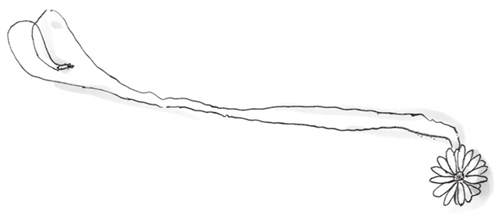

| あなたに贈る×（キス） (PHP文芸文庫) | |
| 近藤 史恵 | |
| 株式会社ＰＨＰ研究所 (2015) | |

あなたに贈る×
近藤史恵
あなたに贈る×
１
ソムノスフォビア（唾 液 感染性睡 眠 恐 怖 症 ）が、はじめて発見されたのは、二〇一三年十一月、スペインの小さな町である。十九歳の女性が、急に眠ることを病的に恐れはじめた。高熱、嘔 吐 、けいれん等の症状も現れ、それからたった二週間後に死亡した。解 剖 の結果、彼女にはきわめて激しい脳 炎 が起こっていたことがわかった。
その二カ月後、最初の患 者 と同じ大学に通う女性に、まったく同じ症状が現れた。脳炎を発症していることも同じで、治 療 の甲 斐 なく三週間で死亡した。
病院には緊 張 が走った。眠ることを激しく恐れるという、異常な症状と、死亡までの時間の短さ。もし、これが新しいウイルスによる病ならば、恐ろしい脅 威 である。だが、その後、同じ症状の患者が運ばれてくることはなかった。
異変が起こったのは、その半年後である。
世界の各地で、同じ症状の患者が次々発見されはじめたのだ。
異常に眠ることを恐れだし、脳炎を発症し、早い者では一週間、遅い患者でも二カ月以内に死に至る。
病気の発見から死亡までの期間の短さ、そして百パーセントの致 死 率 は、世界中をパニックに陥 れるのに充 分 だった。
病の原因が特定できないまま、死亡患者の数だけが増えていく。
南米のある国では、病が発生した村になにものかが火をつけ、何十人という村人が犠 牲 になった。
患者の身内に対する差別も社会問題になった。
ウイルスによる感染症なのか、それとも、ある素因によって発症する病なのか。
電子レンジが悪いという研究者もいれば、家具などに使われる化学物質が原因だという者もいた。有力とされていたのは、ウイルスか特定の細 菌 による感染症だが、それにしては医療関係者の発症率が低い。
患者といちばん濃 密 に接しているはずの医療関係者の発症率が、それ以外の人々とほとんど変わらない。一方で、患者の家族や恋人が発症するケースが著しく多かった。
性行為で感染するという説は、一時期、かなり有力視されていた。
夫婦や恋人の両方が発症するケースがかなり多かったのである。
だが、性行為を行っていても発症しないケース、性的関係がなくても発症するケースがあり、確定にまで至らなかった。
患者には一定の傾 向 があった。
二十代がいちばん多く、年をとるにつれて少なくなっていく。欧 米 で多く、アジアではやや少なく、イスラムの国ではもっと少ない。
ソムノスフォビアの感染ルートを突き止めたのは、ノルウェーの研究者だった。
──この病はキスでのみ感染する。
唾液に潜 んだウイルスらしきものが、病を引き起こすのだ。ウイルスは、強い嫌 気 性 を持っていて、飛 沫 感染を起こすことはない。唯 一 、唾液が直接触 れあう、キスにより感染する。
そして、もうひとつ。
遺伝によるものか、それともほかの要因があるのかは不明だが、このウイルスにはキャリア──ウイルス保持者が存在する。キャリアは病を発症することがない、ウイルスと共存できる。キャリアとキスをして感染したものだけが発症する。
この発表は、世界に蔓 延 していた不安を、少しだけ取り除いた。
つまり、キスさえしなければ、感染することはないという安心感。
だが、代わりにもうひとつの不安が人々の間に広がっていく。
だれがキャリアなのか、という疑 惑 である。
すでに治療法が確定していたＡＩＤＳ と同じように、血液検査でキャリアを判定できれば、大きな問題にはならない。キャリアでない人々がキスをしても感染はしないからだ。
だが、キャリアかどうか判定する検査法がどうしても見つからない。
これには、多くの陰 謀 論 が囁 かれた。
想像以上にキャリアが多かったのだという説や、某 巨 大 財 閥 の一族がすべてキャリアだったという説、この病自体が、某大国にとって邪 魔 な者を抹 殺 するウイルス兵器だという説。
どれもただの絵 空 事 に過ぎない。
キャリアを判定する検査法は、二〇二八年になっても実用化には至っていない。もちろん多くの研究者によって研究は進められている。
だが、病は防がなくてはならない。
現在、世界のほとんどの国で、キス──唇 同士を合わせる接 吻 は、違 法 行 為 として完全に禁じられている。
２
笹 森 美 詩 は階段を駆 け下りていた。
五時限目の予 鈴 が鳴 り響 いていて、音楽室に移動しなければいけないことはわかっていた。美詩は、なにをするのも人よりワンテンポ遅いから、早く授業に使うヴァーチャルピアノを持って音楽室へ向かわなければならない。先週だって、七 原 芹 香 とお喋 りに夢中になって遅れてしまったのだ。
音楽教師の日 比 野 先生は、目 尻 の下がった優しげな顔に似合わず、とても厳しい男性だ。授業の三分の一が終わるまで、芹香とふたり、後ろに立たされたまま、座ることを許してもらえなかった。きっと、もう一度遅れたら、今度はもっとひどく られる。
わかっていたけど、もうそんなことはどうでもよかった。
──織 恵 さんが死んでしまった。
さっき、クラスの女の子たちが話していたのを聞いてしまった。
──三年の北 嶋 さん。昨日の晩亡くなったんだって。
── 。だって、このあいだまで普通に......。入院したのって、一週間前だよね。
。だって、このあいだまで普通に......。入院したのって、一週間前だよね。
──たしか......五日からだから十日前だよ。
──それにしたって......あんなに元気そうだったのに。部活だって普通にやってたよ。
その会話を聞きながら、美詩は振り返ることすらできなかった。そんなに仲のいい子たちじゃなかったから、詳 しい話を聞くこともできなかった。
ただ、奥歯がかちかちと鳴った。心臓の鼓 動 だけが大きく激しく脈打っていた。
「どうしたの、美詩？」
芹香にはその話は聞こえなかったらしい。きょとんとした顔で、美詩を見ている。
「ごめん、ちょっとトイレに行ってくる」
美詩はそう言って、立ち上がった。
芹香に今聞いた話を伝えることも、その場で泣くこともできなかった。
ただ、逃げ出したかったのだ。今、目の前にあるすべてのことから。
織恵が死んでしまった。織恵はもうここにはいない。
ここではなく、もうどこにもいないのだ。この世界のどこにも。
涙はまだ出なかった。ただ、まるで殴 りつけられたようなひどい頭痛があった。
「どうして......どうして......」
織恵の顔なら、目の前にいるようにはっきりと思い浮かべることができる。
色白で、人形のように整った顔をしているのに、 だけが田舎 の少女のようにほんのり赤くて、そこがとても可愛 らしくて好きだった。
もちろん、織恵は三年生で、一年の美詩よりもずっと大人びている。
立 ち居 振 る舞 いも優 雅 で、廊 下 を歩いているときも、足音すらたてなかった。つま先が宙に浮いているようだった。
制服のブラウスをくっと突き上げる、美しい胸のラインや、長い足。少し困ったように微笑 む優しい顔。なにもかもが目に焼きついている。
リセ・アルビュスに入学して、寮 で織恵に会ったとき、美詩は目を見張った。なんてきれいな人だろうと思ったのだ。
リセ・アルビュスは全寮制の高等学校で、寮は全部で七つある。男子の寮が三つ、女子は四つ。
だから、織恵と同じ寮に入ることができたのは、幸運だったのだ。
もし違う寮だったら、美詩など織恵と話すこともできなかっただろう。名前も覚えてもらえずに、ただ遠くからぼんやりと見ていることしかできなかったはずだ。
織恵は優しかった。
すぐに一年生たちの名前を覚えて、困っている後輩がいれば、優しく声をかけてくれた。織恵がいなければ、学校も寮も好きになれたかどうかわからない。
階段を駆け下りて、校庭に飛び出す。校舎に戻 ろうとしていた生徒たちが、不思議そうに美詩を見た。
織恵をずっと見ていたかった。
半年もすれば、織恵はリセ・アルビュスを卒業してしまい、どこか遠くの大学に行ってしまう。そう思うだけで、心臓が張り裂 けそうな気がして、美詩はいつも考えた。時間が少しでもゆっくり流れますように、と。
目の前から織恵が消えてしまうことすら耐 えがたい出来事に思われたのに、現実はもっと、つらく寒々しいものだった。
織恵は、この世から消え去ってしまった。もう、戻ってくることはないのだ。
織恵が学校で倒れ、そのまま病院に運ばれたと聞いたのは、十日前。それから美詩は心配で心配で、ろくに食事もできなかった。
織恵と仲のよかった、三年生の敷 島 呉 美 にすらメールもこないという。先生も病状を教えてはくれない。
相当悪いのかもしれない。美詩は必死で神様に祈 りを捧 げた。
どうぞ、織恵が治りますように。早く寮に戻ってきますように、と。
それなのに、死んでしまったなんて。
だれもいない中庭で、美詩はしゃがみこんだ。喉 から嗚 咽 が漏 れた。
密集した花壇のコスモスの黄色が滲 んで、自分が泣いていることに気づく。
織恵がいない世界なんて、なんの価値もない。神様だって、この世にはいないのだ。
いたら、織恵を死なせてしまうはずはないのだから。
窓の開いた音楽室から、ピアノの音が聞こえてくる。美詩はしゃがみこんで泣きつづけた。
ふいに気づく。
どうして、あの子たちは織恵の死を知っていたのだろう。
同じ寮でもないし、特に織恵と親しかったわけでもない。織恵はきれいで、成績もよかったからリセ・アルビュスでは有名人だ。彼 女 らが織恵を知っていることは不思議ではないけど、織恵が死んだということをどこで知ったのだろう。
美詩だって知らないし、敷島呉美すら聞いていないはずだ。
先生だってなにも言っていない。
──
だ。もしくは勘
違
いだ。
そう気づいたとき、全身から力が抜 けた。
自分は織恵のことを心配しすぎて、おかしくなっていたのだ。
織恵が死ぬはずなんてない。織恵は絶対に生きている。
そう、力強く信じて涙を拭 ったときだった。ハイヒールがかつかつと近づいてくるのが見えた。
見ているほうが不安になるほど細い、棒のような足には見覚えがあった。カウンセラーの城 島 先生だ。あわてて、涙を拭う。
「どうしたの、あなた、気分でも悪いの......？」
大 丈 夫 です、と言おうとして顔をあげる。だが、表情を凍 りつかせたのは先生のほうだった。
「あなた、たしか北嶋さんと仲が良かった......」
「え......」
彼女は険しい顔で美詩を見つめた。
「もしかして、北嶋さんのことをもう......」
その目を見たとき、美詩は知った。織恵の死は、
ではないのだ、と。
夕方には、すべての人が織恵の死を知っていた。
先生からの発表があったわけではない。だが、 はあっという間に広がる。さながら、地面に深く張られた根が、水を吸い上げていくように。
欅 女 子 寮 の空気も、いつもとはまったく違い、鉛 のように重い。
十五歳から十八歳までの女の子が五十人近く生活しているのだ。普 段 は、あちらこちらから笑い声が上がり、賑 やかなことこの上ない。
白いテーブルが並ぶ、殺風景な食堂や、サロンと呼ばれる広い部屋にはいつも女の子たちが集まっている。だが、今日はほとんどの少女たちは部屋に閉じこもってしまい、わずかにサロンに残っている女の子たちも、下を向いて押 し黙 ってしまっていた。
建物全体が啜 り泣いているようだ、と美詩は思った。
はっきりと聞こえるわけではない。でも、自分の部屋で泣いている女の子たちの声が、さざなみのように空気を揺 らしている。悲しみが音 を震 わせるように響いていく。
美詩は自室に行こうか迷い、結局サロンの空いたソファに腰 を下ろした。
ひとりになりたい気持ちもあったが、それよりももっと詳しいことが知りたかった。
織恵はどうして死んでしまったのか。何の病気だったのか。
まだ十七歳。十八歳の誕生日すら迎 えないまま、逝 ってしまった。
どんな病 魔 が、彼女のあの伸びやかな身体 を んで、そして彼女を連れ去ってしまったのか、美詩はなにも知らない。
織恵はよく、ソファの向かいの席に座っていた。ガラスのポットで、ジャスミンティを淹 れる手つきまではっきりと思い出せる。
小さな球 になった茶 葉 をポットに入れ、熱湯を注ぐと、ポットの中で茶葉が花のように開く。その光景と、ジャスミンティの香りを思い出して、また泣きたくなる。
からっぽの彼女の椅 子 。この先もずっとこの椅子はからっぽのままだ。別の人が座ることはあっても、織恵が座ることはない。
今は耐えがたく感じられても、そのうち、そのことに慣れる日が来るのだろうか。そのことすら、今は怖かった。
寮母の奥 田 さんが、通りがかった。サロンを軽く見 渡 しただけで、なにも言わずに立ち去ろうとする。
二年の湯 本 初 美 が椅子から立ち上がった。
「奥田さん、わたしたち......織恵さんの告別式に出られますよね。いつ、どこでやるんですか？」
基本的に、リセ・アルビュスは長期の休み以外に寮から外出することは認められていない。土日は、保護者が迎えにきたときだけ、寮から出て遊びに行くことができる。
もっとも、リセ・アルビュスと寮は山の深いところにあって、まわりにはなにもない。バスで町まで出るのに三十分はかかる。
それでも今回は特別だ。どこで行われるにしても、葬 儀 には出て、織恵の死を悼 みたかった。
だが、奥田さんは首を横に振った。
「許可が出ていません」
サロンのあちこちで、抗 議 の声があがる。初美は、声を強めた。
「これから、先生にお願いして許可をもらってきます」
奥田さんの答えは冷たかった。
「許可は出ません。これはもう決まったことです。北嶋さんの葬儀はご家族だけで行いたいということです。あなたたちが押しかけて、騒 がしくすることは許されていません」
美詩は息を んだ。周囲から、また不満そうな声があがる。
騒がしくするつもりなどない。ただ、織恵にさよならがいいたい。
胸がざわざわとした。織恵が死んだと聞いたときは、これ以上つらいことなどなにもないと思っていたのに、皮 膚 が感じていた。きっとこれから、なにかが起こる。
なにかがおかしい。尋 常 ではない。
初美は一 瞬 口を閉ざした。決意するように、唇 を震 わせると、また口を開く。
「織恵さんは......なぜ、亡くなったんですか？」
奥田さんは表情を変えずに言った。
「病気です。それがわかれば充 分 でしょう」
充分じゃない。充分なはずなどない。
だれもがすでに気づいている。なにか、普通ではないことが起こったのだと。
３
織 恵 にはじめて声をかけてもらった日のことは、はっきりと覚えている。
もちろん、美 詩 はその前から織恵のことを知っていた。食堂やサロンにいても、織恵の長身はよく目立ったし、横顔が作る陰 影 は目を奪 われずにはいられないほど美しかった。
すれ違 うだけで、うっとりと彼女を見上げた。ときどき彼女は笑い返してくれて、それだけで息ができなくなりそうだった。
それは、リセ・アルビュスに入学して、一カ月ほど経 った夜のことだった。
その夜美詩は、なかなか寝 つくことができなかった。何度も寝返りを打って、眠 れないことにくたびれてしまっていた。
毎晩ではない。でも、ときどきこんな日があるのだ。
理由はいくつかある。この学校が、自分に向いているとはまったく思えないこともそのひとつだ。
中学まで通っていた公立の学校と違い、リセ・アルビュスにいる生徒たちはみんな澄 まして、よそよそしい。女の子だけではなく、男の子たちだってそうだ。完全に外界から切り離 された全 寮 制 の高等学校だから、漂 う空気が公立高校と違うことは覚 悟 していたけど、いつまで経っても慣れることができなかった。
だが、仕方がない。全寮制の学校に行きたいと訴 えたのは、美詩自身だった。
美詩の母親は、美詩が中学二年生のときに再 婚 した。新しい父親は、五十になるのに、年 齢 よりも若々しく、とても素敵な人だったけど、美詩は心の底から好きになることはできなかった。
なによりも、家に濃 厚 に漂いはじめた男女の匂 いが耐 えがたかった。
父も母も、美詩の前でそうあからさまにべたべたするわけではないが、それでも見交わす視線や、身体 の一部に触 れる仕草がなにかを物語っていた。
一度、真夜中に喉 が渇 いて、一階の台所に下りていったとき、ソファの上でくすくすと笑いながらじゃれているふたりを目 撃 してしまった。美詩がいることに気づいたふたりは、弾 かれたように離れ何事もなかったふりをしたけど、そこに漂う得体の知れない空気は忘れられない。
その日から美詩は夜中に階下に下りることが怖 くなってしまった。自分の家なのに、自由に歩き回ることができなくなってしまった。
全寮制の高校に行きたい。そう言ったとき、母は特に反対はしなかった。そのことにほっとして、同時に傷ついた。父は自分のせいだと感じたのか、しきりに止めようとしたけど、気持ちは変わらなかった。
ここ十数年で、全寮制の高校は急激に増えていた。二十年ほど前まではこんなに多くなかったのだが、社会自体が、純潔を尊ぶように変化してきたせいだと聞いたことがある。
通っていた公立の中学と違い、全寮制の高校はお金がかかる。母の収入だけではとても入学することはできなかっただろう。だが、父が薦 めてくれた家から通える私立高校は、全寮制の高校よりも数倍授業料が高かった。父は有名な広告デザイナーで、たくさんお金を稼 いでいる。
不思議だった。昔と違って、今では公立の学校は授業料がないし、教科書代もかからないのに、そうなる前よりも授業料の高い学校がたくさんできるのだ。
これは学校だけではない。生活保護も充 実 し、仕事がない人には毎月最低ラインとはいえ、食べて行くのに困らない額が支 給 されるようになったが、その分、裕 福 な人とそうでない人の生活環 境 はまったく違うものになった。
病院も、買い物をする店も、遊びに行く場所も、住む場所も、裕福な人とそうではない人とで、はっきりと分かれる。
母が再婚したことで、いきなり美詩の環境は変わってしまった。逆になるよりはよっぽどいいとはいえ、戸 惑 いは隠 せない。
成績だけはいいほうだったから、学校を選ぶのには苦労しなかった。
リセ・アルビュスは全寮制だが、さほど授業料が高いわけではなかった。そして、田舎 にあるとはいえ、自宅からは二時間もかからない。休みの日に帰るのも簡単だった。
つまりは、ここにいるのもすべて、美詩が望んだからだ。
そう言い聞かせても、慰 めにはならなかった。自分が望んだ場所がしっくりこないということは、その場所が美詩を拒 んだということだ。
もしかしたら、美詩を優しく受け入れてくれる場所など、この世のどこにもないのかもしれない。
眠れないことはひどく疲れる。少し歩きたくて美詩は、ベッドから下りてカーディガンを羽 織 った。
夜中に部屋から出ることは、本当は禁じられている。見つかって、考 慮 に値する理由がなければ られることは知っていた。
リセ・アルビュスの寮は、すべて個室で、部屋にはそれぞれユニットバスが付いている。小さな冷蔵庫や湯 沸 かしポットもあるから、お茶を飲むのにも外に出る必要はない。自分で掃 除 しなければならないことを別にすれば、ビジネスホテルのシングルルームのようなものだ。
その狭い部屋のベッドで横たわっていることが、息苦しくなってしまった。
怒られてもいい。そう思って部屋を出た。
寮から抜 け出せば謹 慎 ルーム行きの罰 を受けるが、そこまでするつもりはない。寮の中を歩き回れば、気が晴れるはずだ。
階段を下り、一階に向かった。
普段は女の子たちの声が、そこかしこから聞こえてくるのに、夜は何の物音も聞こえない。
火星のように静かだ。自分でそう考えて、その表現が気に入った。
火星には空気が少ないから、音は小さくしか伝わらない。きっとぞっとするほど静かだろう。
そんな場所に行ってみたい。そう考えてしまうほど、そのときの美詩は厭 世 的 になっていた。
本当にひとりになってしまえば、寂 しいなんて考えることもなくなるだろう。だれかがいるのに、自分だけがひとりでいるから寂しいのだ。
ちょうど、そう思ったときだった。
サロンの奥に、ほんのりと灯りが点 っているのが見えた。
おそるおそる、サロンを覗 きこむ。
小さなスタンドライトをひとつだけ点 けて、ソファに気 怠 く座っているのは織恵だった。月明かりに照らされて、まるで大きな絵のようだった。
織恵は窓の外を眺 めながら、物思いに沈 みこんでいた。どのくらいその姿に見 惚 れていたのだろう。
我に返ったのは、織恵が顔をあげて、美詩を見たからだ。
焦 ってしまって、なにを言っていいのかわからない。
「ご......ごめんなさい！」
そう言って、ぺこりと頭を下げると、織恵は笑った。
「どうして謝るの？ 笹森さん。寮則を破ったから？ でもそれはわたしも一緒よ」
信じられなかった。どうして、織恵が自分の名前を知っているのだろう。
よく考えれば、欅 女子寮に入った新入生は二十人足らず、一カ月もあれば全員の名前を覚えられる。
だが、織恵みたいにみんなから憧 れられている人が、自分みたいな目立たない新入生に関心を持つとは思えなかった。
織恵の前では、自分なんて芥 子 粒 みたいな存在だと思っていた。
だが、織恵はソファの隣 を軽く叩 いて微笑 んだ。
「笹森さん、ここへきてお喋 りしない？」
今度こそ、息が止まるかと思った。
美詩の驚きを、織恵は誤解したようだった。
「大丈夫。奥田さんも、ほかの寮スタッフも、わたしが不 眠 症 だってことは知ってるの。だから怒らないでいてくれる」
織恵にそんな悩みがあるなんてまったく知らなかった。緊 張 してまともに話せないような気がしたが、断るのも失礼だと思ったし、なによりもうれしくて舞い上がりそうだった。
その日、織恵とは二十分くらい話をした。
大した内容ではない。寮の前に咲いている白いチューリップは、二年の村 上 さんが植えたのだとか、フランス語の白 川 先生はお気に入りの生徒ほど厳しくするとか、そんな他愛 もない 話 だ。
それでも、織恵は優しくて、そしてなにより一緒にいることが少しも苦痛ではなかった。
緊張していたのにもかかわらず、美詩もうまく喋れたし、合わない人と一緒にいるときのように空気が軋 むこともなかった。
お喋りを終えると、織恵は立ち上がった。
「あんまりいつまでもお喋りしていると、奥田さんに怒られるわね。もう寝なくちゃ」
一瞬、退 屈 させてしまったのかと思い、息が詰まった。
だが、織恵は次の瞬間、振り返ってこう言った。
「笹森さん、美詩っていう名前なのね。とても素敵。美詩って呼んでもいい？」
身体を電流が走り抜けた気がした。思わず、こくこくと頷 いた。
「じゃあ。わたしのことも名前で呼んでね」
織恵はそう言って優しく微笑んだ。嫌いな相手には絶対見せないような、柔 らかい笑顔だった。
それまで、美詩は自分の名前があまり好きではなかった。誉 めてくれる人もいたけど、たいていまともに読んでもらえなかったし、男子にからかわれたこともあったからだ。
だが、その瞬間、美詩は自分の名前が大好きになったのだ。
４
美 詩 はそれほど友達が多いほうではない。
クラスでよく喋る友達も、芹 香 のほかには三人くらいだし、男子とはあまり話をしない。もともと、あまり人づきあいがうまいほうではないから、仕方がない。
だから、その が美詩の耳に入ったのも、織 恵 の死から五日近く経 ってからだった。
まだ、織恵の死を告げられたショックは癒 えていない。
ことあるごとに織恵のことを思い出して泣いた。織恵が美詩の誕生日にくれた、マーガレットの形をしたペンダントを、毎夜のように握 りしめて枕 に顔を埋 めた。
授業も耳を素通りしていく。身体 の中が悲しみで一杯で、ほかにはなにも入らないように思えた。音楽を聴 く気にも、本を読む気にもなれなかった。
その日も、寮 に帰って部屋でぼんやりとベッドに横たわっていた。
ノックの音に身体を起こす。
「はあい」
はかけていない。ドアノブがまわって、芹香が入ってきた。普段から、上級生に間 違 われることの多い彼女だが、沈んだ顔をしているせいで、より大人びて見える。
「ねえ、美詩、知ってる？」
そう聞かれても、なんのことかわからない。
「知らない。なあに？」
「織恵さんのこと」
まだなにも聞いていないのに、産 毛 が逆 立 つ感じがした。
芹香の表情や声を聞く限り、いいことだとは思えなかった。だが、これ以上どんな悪いことがあるというのだろう。
言いにくそうに、スカートの布地をつまんだり伸 ばしたりしていた芹香だったが、ようやく覚 悟 を決めたように口を開く。
「織恵さんが、ソムノスフォビアだったって......」
美詩は息を んだ。
「
！ だってそんなわけ......」
ソムノスフォビアが唇 を触 れあわせることでしか感染しないということは、子供だって知っている。そして、今時、唇同士を合わせる人などいない。
よっぽど放 埒 で、 らな人以外は。
たとえば、まだ妊 娠 していたというほうが衝 撃 は少ない。性行為は人間として必要な営みだ。もし、織恵が心からだれかを愛していたのなら、その相手と抱き合うことはあるだろう。
もちろん、ショックなことは同じだが、だれかと唇を合わせていたということより、ずっとずっとましだ。
織恵がそんないやらしいことをするはずはない。
男子生徒の中には、美人で成績もいい織恵に憧 れていた子もたくさんいたはずだ。告白して、振られた男の子も多いと聞いた。
校則では、男女交際は禁止されているけれど、口もきいてはいけないわけではない。放課後に図書館で一緒に勉強をしたり、中庭を散歩したりのささやかなデートをしている恋人たちはいる。それ以上のことをしている人たちもいるらしいとは では聞くけど、自由の少ないリセ・アルビュスでは、男女がふたりきりになることも難しい。謹 慎 処分になる危険を冒 して、寮を抜け出したりするのだろうか。
だが、織恵には、親しくしている男子生徒などいないように見えた。織恵が男子生徒とふたりきりでいるところなど、見たことはない。そういう さえなかった。
「
だ。
に決まってる......」
「わたしだって、そう信じたいけど......」
芹香が泣きそうな顔で言う。芹香だって、織恵に憧れていたのだ。
だが、たしかにそう考えるとすべて説明がつく。
入院してから、死ぬまでの期間の短さも、病名を知る人がいないことも、そして告別式に行けなかったことも。
先生たちが織恵のことを口に出すことはない。週に一度、全校生徒が う月曜日の朝礼でも、織恵の死はまったく話題には出なかった。
まるで、織恵などはじめから存在していなかったかのように。
それまで、織恵はむしろ先生たちのお気に入りだった。織恵と一緒に歩いていると、教師たちは優しい顔で声をかけてくれた。美詩がひとりでいるときと、まったく違う表情だった。
織恵が深夜にサロンにいることを許してもらえていたのも、彼女が折り紙付きの優等生だからだ。
なのに、教師たちは少しも織恵の死を悼 もうとはしていない。覆 い隠 そうとしている。
織恵がソムノスフォビアだったとしたら、教師たちの変 貌 もわかる。
優等生だと思われていた彼女が、裏では らな行為に耽 っていたあげくに、そのせいで命を落とした。
もし、リセ・アルビュスの生徒から、ソムノスフォビアの患者が出ればそれだけでスキャンダルだ。
発生当時はまだ感染ルートが確定されていなかったこともあり、多くの死者が出たというが、その後、この病で死ぬ人の数は激減している。
原因ははっきりしていて、どうやったら感染が防げるかもわかっている。予防にお金がかかるわけでも、特 殊 な対策が必要なわけでもない。
ただ、唇を合わせなければいいだけだ。
偶 然 にぶつかって、事故のように唇が重なってしまうということでもなければ、自然に感染することはない。ちゃんと自分で防げる。
病の数が激減すると同時に、発病した人たちへの風当たりも強くなる。もっとも、発 症 した人はだいたい一カ月くらいで死んでしまうから、彼らが差別に苦しむようなことはない。
しかし、どう考えても織恵とその病が結びつかない。
織恵はだれにでも優しかった。だが、その優しさの中には、他人を寄せつけない冷ややかさがあるように、美詩には思えたのだ。
彼女は本当は、だれにも心を許していないのではないか。ずっとそんな気がしていた。そんな彼女が命の危険を冒してまで、だれかと唇を合わせるとは思えない。
織恵の姿を思い出す。
わずかに赤みがかった髪を揺らしながら、体操服のジャージで校庭を駆ける姿。おっとりとしているように見えるのに、いったん走りはじめると彼女の足は速かった。長い足は、羽でも生えているような軽やかさで進んだ。
美詩は、窓際の席からいつもそれを眺 めていた。
ぶるぶると美詩は首を振った。
織恵がそんな らな行為に耽るとは、どうしても思えない。織恵にはあまりにも似つかわしくない。
もし、男が手を伸ばそうとしても、彼女はあの軽やかな足で逃げていってしまうだろう。
美詩はもう一度繰り返す。
「ありえない。織恵さんに限って」
芹香はどこか哀 れむような目で、美詩を見た。
たとえるのなら、織恵は水みたいだった。
冷たくて澄 んでいて、氷ほど人を激しく拒 絶 するわけではない。
最初はその冷たさに身 震 いしても、次第に触れていることが心 地 よくなっていく。包まれていたくなる。
美詩は織恵のことが大好きだったけど、織恵の心の奥 底 を覗 きこんだことはない。立ち入ったことを聞いて嫌われるのも怖かったし、今、彼女が目の前にいるだけでいいと思っていた。
夜中に目が覚めて、サロンに下りていくと、ときどき織恵がいて、短い時間を一緒に過ごした。
あのときは織恵のそばにいられるだけでうれしかったけど、今になって思う。
もし、織恵のことをもっと知ろうとしていたら、なにかが違ったのだろうか。
先生の 話や音楽の話ばかりではなく、織恵がなにを考えているのか、どんな悩みがあるのか、積極的に知ろうとしていれば、織恵に対する印象も違っていたかもしれない。
あのときは、まだ時間があると思いこんでいた。
織恵は自分のことはほとんど喋ろうとしなかったけれど、もし美詩が尋 ねれば、教えてくれただろうか。
強引に彼女の心を覗き見ようとすれば、嫌われたのか、それとももっと仲良くなれたのか。
どちらにせよ、すべてがもう遅すぎるのだけど。
５
それは翌日の放課後だった。
授業をすべて終えて、美 詩 は帰り支度をしていた。芹 香 は生け花部の日だから一緒には帰らない。美詩もどこか部活に入ろうかと思っていたが、結局どこにも所属しないまま、半年以上経 ってしまっていた。自分の優 柔 不 断 さがいやになる。
帰り支度と言っても時間はそれほどかからない。昔は何冊も教科書を持ち歩いたらしいが、今はヴュー・エタニティ──略してＶＥと呼ばれる薄いガジェットに、すべてのテキストが入っている。学年が変われば新しいテキストをダウンロードするだけだし、ノートもそれで取れる。動画もそれで見ることができるから、テキストと言っても文字や絵だけではない。
ただ、美詩は紙のノートが好きでＶＥのほかにそれも使っているし、バッテリーや折りたたみ式の小さなキーボードも持ち帰らなければならない。
教室のドアががらりと開いた。
「ねえ、笹 森 さんって子いる？」
横 柄 でぶっきらぼうな声が聞こえて、美詩は振り返った。
セルフレームの眼鏡 をかけた、小 柄 な少女がドアの近くのクラスメイトに話しかけていた。
クラスメイトは少し困 惑 した顔で美詩に目をやり、それにつられるように少女もこちらを見た。
見覚えはある。だが会話をするのははじめてだ。学年も寮も違うはずだ。
小柄な少女は、大 股 で美詩のほうへ歩いてきた。
「あなたが笹森さん？」
「そうですけど......」
同じ学年でないなら、間違いなく上級生だ。美詩は丁 寧 語 で答えた。リセ・アルビュスは上下関係にさほど厳しくはないが、初対面ではやはり気をつかう。
「ちょっと話があるんだけど、いいかしら」
戸 惑 いながら、教室を見回したがあいにく仲のいい子はだれもいない。だれかにそばにいてもらおうと思ったが、難しそうだ。
美詩は観念して答える。
「わかりました。なんですか？」
「ここではちょっと言いにくいの。一緒にきて」
そう言うと、彼女は美詩の返事も聞かずに歩きだした。仕方なく後を追う。
話しかけようとして、名前を聞いていないことに気づく。
「あの......何年の方ですか」
控 えめに問いかけると、彼女はやっと名乗った。
「二年よ。田 丸 梢 。よろしくね」
「こ、こちらこそ......」
彼女は校舎の階段を、早足で上っていった。かなりの速度なのに息も切らさず、後ろも振り返らない。美詩は置いていかれないようにするのが精 一 杯 だった。
三年の教室のある三階を過ぎ、音楽室や理科室のある四階も通り過ぎる。この先には、屋上しかない。
ようやく り着いた屋上のドアを開けて、梢は屋上に出た。
地面とは違う、強い風が巻き上がる。あわてて、膨 らもうとするスカートを押さえた。
梢はやっと、美詩のほうを見た。
「北 嶋 織 恵 さんが、ソムノスフォビアだったって知ってる？」
美詩は唇 を んだ。だが動 揺 する顔は見せたくなかった。
梢の声には悲しみの響 きはない。彼女は織恵の死を悼 んでこんな話をしているわけではない。ただの 話 のつもりだろう。
美詩のつらさなどわかるはずはない。
「 は知ってる。でも信じない」
梢は軽く肩 をすくめた。
「じゃあ、ごめんなさい。あなたの幻 想 を壊 すことになってしまいそうね」
「どういうこと？」
「北嶋さんが、ソムノスフォビアだったことは間違いないの」
喉 が低く鳴った。必死に平静を装う。
「どうしてわかるの？」
「わたしの父親は、ソムノスフォビアの研究者だから。パパのところに新しいウイルスのサンプルがきて、それの持ち主が北嶋さんだったってこと」
屋上のまわりはすべて空だ。それがぐらりと傾 いだ気がした。たぶん気のせいだ。美詩は梢から目をそらした。
泣いてはいけない。絶対に涙など見せない。そう思えば思うほど、なにかがこみ上げてきそうだった。
梢は急に優しい声になった。
「悲しい？」
「あたりまえじゃない！」
敬語を使わなければ、という意識は消えていた。こんな失礼な相手に礼儀正しく接することなどない。
梢は顔を背 けた美詩の前に回りこんだ。
「じゃあ、手伝って」
「......手伝うってなにを......？」
「キャリアを探すの。織恵さんが発病したのは、十月の五日。ソムノスフォビアの潜 伏 期間は最大でも二週間、その間、織恵さんはずっと学校にいた。土日も寮を出ていないの」
梢がなにを言いたいのか、やっと気づく。織恵がソムノスフォビアを発 症 したということは、感染させたキャリアがいることになる。
梢の言うことが正しければ、この学校の中に。
美詩は身 震 いした。
その相手──たぶん、男──は、織恵の唇を奪 っただけでなく、死に追いやった。
あらためて怒りがこみ上げる。
織恵がそれを望んで受け入れたと決まったわけではない。強引に汚 されてしまったかもしれない。
梢は、美詩の目を見て頷 いた。やっと気づく。彼女は、ただ興味本位で美詩をここに連れてきたわけではない。
この学校に、恐ろしい魔 物 が潜 んでいるかもしれないのだ。
美詩は、梢の部屋を訪ねていた。
夕食前までの時間ならば、女子寮同士、男子寮同士の往 き来 は問題ない。美詩も何度か友達の部屋に遊びに行ったことがある。
だが、この 女 子 寮 に足を踏み入れるのは、はじめてだ。
いちばん新しく、清潔感のある欅 女子寮と違い、 女子寮は築四十年を超えるという古い建物だ。
シャンプーや石 鹸 の入り混じった特有の匂 いがすることと、女の子の声があちこちで聞こえるところは、欅女子寮と同じだが、どこも薄暗くて、階段を上るとぎしぎしと妙 な音がした。
梢の部屋に入って驚く。ベッドを中央にずらして、壁 際 に本 棚 を並べている。本の背表紙が 間 なく並ぶ壁を見ていると、圧 迫 感 で息が詰まりそうだ。最近ではＶＥで本を読む人が多いから、紙の本を集めるのは一部の好 事 家 たちだけだ。
机の上にはデスクトップのパーソナルコンピューターまで並んでいる。
梢が椅 子 に腰を下ろしたから、仕方なく美詩はベッドに腰掛けた。
「ソムノスフォビアについて、どのくらい知ってる？」
梢に尋 ねられて、美詩は首を振った。
「そんなには......」
唇を触 れあわせると感染すること、発症してしまえば治 療 法 がないことは知っている。だがそれ以上のこととなると怪 しい。
ソムノスフォビアは、貞 操 観念のない らな人たちが感染する病で、自分や家族や友達にはまったく関係ないと考えていた。詳 しい知識を得ようとするどころか、汚いものを見るような気分で目をそらしていた。
「たしか、ウイルスで感染するんだよね......」
「今はその説が有力視されているけど、まだはっきりと証明されているわけではないの。でも、たとえウイルスだとしても、人類はこれまでずっとこのウイルスと共存してきた。このウイルスは人に危害を与えずに、ただ人間の身体 の中で息を潜めつづけてきた。十五年前にいきなり暴走をはじめるまではね」
「どうして？」
「ウイルスが暴走した理由はまだわかっていない。化学物質のせいだとか、電磁波のせいだとか言う人はいるけどね。ともかく、そのウイルスはキャリアの唾 液 と唾液が接することによって感染し、その後、脳に激しい炎 症 を起こすことになる」
そして、百パーセントの人々が死に至る。それは美詩も知っている情報だ。
「その......キャリアたちは、どこでウイルスに感染したの？」
梢は、椅子をくるりと回して、足を組み替えた。小柄なくせに仕草だけはやけに大人っぽい。
「それもまだ解明されていない。明らかになっているルートはひとつ。母子感染。母親がキャリアだった場合、子供がキャリアになる確率は九十五パーセント以上。でも、それだけじゃ説明できないケースが多いの。子供がキャリアでも、母親がキャリアではないというケースは今までにいくらでもあった」
父親が研究者というだけあって、梢は美詩の疑問にすらすらと答えてくれた。
「キャリアかどうかは、検査ではわからないって聞いたけど......」
梢は首を横に振った。
「わからないわけじゃない。ただ、調べるためにはかなりの手間と、お金がかかるの。検査できる機関も限られているから、まだ一般の人たちの検査ができる状況じゃないというだけ」
梢は顎 に手を当てて考えこんだ。
「母子感染以外の感染ルートはあるけど、それはそんなに重要ではない。そのルートで感染した人は、キャリアにはなるけど発症はしない。発症するのは、キャリアとのキスで感染した人たちだけ」
美詩は違 和 感 を覚えて顔をあげた。
「キス......？ キスってほっぺたや、おでこにするものでしょう？」
親子や恋人などが、互 いを慈 しむために額や に唇を押し当てること、それをキスと呼ぶのだ。
「今はね。でも、昔は違ったの。唇同士を合わせるのも同じようにキスと呼んでた」
「いやだ」
思わず言ってしまった。唇を合わせるなんて、ひどく不潔な行為に思える。実際に不潔だと教えられてきた。
梢は軽く肩をすくめた。
「そうよね。わたしも聞いたとき驚いたもん」
まったくイメージの違う行為なのに、同じ名で呼ばれるなんて不思議だ。額や と、唇同士では行為の意味が全然違う。
今では唇同士を合わせることは、どこの国でも違法だし、強引に唇を重ねれば、傷害罪を適用されることもある。
「それでわたし思うんだけど」
梢はピンクのセルフレームの眼鏡を、くっと押し上げた。
「織恵さんを死に追いやった人は、たぶん自分がソムノスフォビアのキャリアだとは知らなかったと思う。さっきも言ったように、だれでも検査ができるわけじゃないから」
「知らなかったからって許されることじゃないわ」
美詩のことばに梢は頷いた。
「そのとおり」
立ち上がって本棚にもたれる。
「でも、知らなかったってことは今頃震え上がってると思うのよ。彼が強引にキスをしたのだったら、逮 捕 されるかもしれない。もし、そうでなくても自分がソムノスフォビアのキャリアだと知ったら、ショックを受けないはずはないわ」
「わたしもそう思う」
今は検査ができないから、だれがキャリアかはわからない。だが、すべての人が検査を受けることができるようになり、自分がキャリアだと知ったら、平静でいられる自信がない。友達がそうでもショックだろう。
いや、友達ならば、まだ受け入れられる。だが、キャリアの人と恋愛して、結婚することなどとてもできないように思えた。
自分が差別主義者だとは思っていない。これまでにだれかをいじめたり、差別したことなどない。
だが、ソムノスフォビアはほかの病気とは違う。
性病と同じように扱われているし、患者の身内も病名を必死で隠そうとすることが多い。
ウイルスのキャリア自身が不潔な行動を取ったわけではないのに、こう考えてしまうのはいけないことかもしれない。
だがどうしても生理的に受け入れられない。
梢は話しつづけた。
「悔 しいけど、織恵さんの命を奪った犯人をはっきりと特定することは難しいと思う。でも何人かに絞 りこめば、パパに頼んでその人たちに検査を受けさせて、だれがキャリアか調べることはできる。ソムノスフォビアは指定感染症だから、感染症法によって強制的に検査を受けさせることができるの。だれでもじゃないけど、強引にキスをして、相手を死に至らしめたようなキャリアには、検査を受けさせて、今後を監 視 するというのが国のこれからの方針らしいわ」
梢の口からはすらすらと難しい単語が出たが、言いたいことははっきりわかる。
「絞りこむ条件は二つ。織恵さんのことを一方的に好きだった人。もしくは織恵さんもその人が好きで、両思いだった人。そしてその人たちの中で、精神的に不安定になったり、激しい動揺を見せた人」
美詩は考えこんだ。織恵のことを好きだった人は、いくらでもいるだろう。自分だってそのひとりかもしれない。もちろん織恵にそんな不潔な行為をしたいなんて、一度も考えたことはない。隣にいて、話をしていられれば充 分 だった。
「織恵さんが好きで、両思いだった人なんていないと思う」
織恵はだれかに恋しているようなそぶりなど見せなかった。両思いなら隠す必要はないはずだ。
梢は首を横に振った。
「人には言えない相手だったのかもしれない。たとえば先生とか......」
はっとする。そんなことは考えもしなかった。だが、ありえないことではない。リセ・アルビュスには男の先生だっている。それに織恵には、同世代や年下の少年よりも、ずっと年上の相手のほうが似つかわしい気がした。
もしそうならば、先生が不 埒 な行為に及んだということになる。そんな人を、織恵が好きになるだろうか。
考えは無限ループに陥 る。やはり、いちばん納得できるのは、織恵は汚 されたのだという考えだ。
織恵を死に追いやった人間が身近にいて、のうのうと生きていることは許せない。
梢は腕 を組んで、美詩を見下ろした。
「手伝ってくれるでしょ？」
拒 む理由などなにもない。
織恵のためだなんて言うつもりはなかった。これは美詩自身のためだ。
そうしなければもう、織恵の笑顔を思い出せないような気がした。
帰寮したときには、六時を過ぎていた。夕食は六時半からはじまるから、それまでに食堂に行かなければならない。
サロンの前を通り過ぎようとして、自然に足が止まった。
いつもこの時間は賑 わっているサロンに、ほとんど人がいない。三年の望 月 りらがひとり座ってＶＥでなにかを読んでいるだけだ。
彼女は変わり者で、ほとんど友達を作ろうとしない。サロンではよく見かけるが、携 帯 端 末 を使ってなにかを読むか、ぼうっと考え事をしているだけで、だれかとお喋 りをしているところなど見たことがない。
戸惑いながら、自室に戻るため階段を上っていくと、二階に人だかりができているのが見えた。
ちょうど織恵の部屋の前だった。後ろのほうに芹 香 の姿も見える。
「どうしたの？」
駆け寄って尋ねると、前にいた初 美 も振り返った。芹香が説明してくれる。
「昼間に、織恵さんのご家族がきて......部屋を片づけていったんですって」
人だかりの 間 から織恵の部屋が見えた。
備え付けのベッドと机のみになった、殺風景な部屋。まるで監 獄 のようだ、そう思った瞬間、涙があふれそうになった。
織恵の部屋ははっきりと記憶に刻まれている。女子寮ではみんな家族のようなものだし、盗 難 事件なども起きたことがない。深夜以外はドアを開け放していることも多かった。
カーテンとベッドカバーはリバティプリントで統一され、革の古いトランクをクローゼット代わりに使っていた。ベッドの枕 元 にはシュタイフのオレンジのテディベアがいた。
今はなにもない。部屋というよりただの穴蔵みたいだ。
初美がぽつりと言った。
「わざと、わたしたちが学校に行っている時間に片づけさせたのよ」
織恵の家族と寮生たちが会わないように。織恵の死について、話をさせないために。
もしかするとただの偶然で、美詩たちが疑 心 暗 鬼 を生じているだけかもしれない。
それでも感じずにはいられない。
織恵の記憶が奪われている。蹂 躙 されていると。
織恵のことを口に出さず、彼女の持ち物もすべてなくなれば、織恵が存在したことすらなかったことにできると大人たちは思っているのだろうか。
不在と欠 如 こそが、なによりもその人の存在を強く感じさせるというのに。
６
翌日の放課後、美 詩 と梢 は校庭にいた。
フェンスにもたれて、少し離れた場所から陸上部の活動を眺めていた。
学校と寮 を往 き来 するだけのリセ・アルビュスの生徒たちには三つの世界がある。クラス、寮、そして部活動だ。織 恵 は陸上部に所属していた。
美詩は寮での織恵は知っているが、それ以外の彼女は知らない。織恵と同じ陸上部に入ってみたいと思ったことはあるが、美詩は運動神経があまりよくない。織恵にくっついていたいだけだという気持ちが見 透 かされそうで恥ずかしかった。
今になってみれば、それでも入部しておけばよかったと思う。
教室から、走る織恵を見るのは好きだった。だが今は織恵がいない。
なによりも、落ち着いて見ていられない理由は、隣で梢が盗 撮 をしているからだ。
掌 におさまるくらいの小さいカメラで、陸上部の部員たちを撮 影 している。見つかれば、きっと怒 られる。
「ねえ、もういいでしょ。行こうよ」
そう言うと梢は鼻で笑った。
「見つかったら、陸上部に好きな人がいるから撮影してるんだって言うわよ」
「わたしは関係ないからね」
「わかってるって」
だが、そばにきてはじめてわかったこともある。
運動部の活動は、男女別で行われるのだが、こうやってみると男子ともよく会話をしている。ハードルを交 互 に使ったり、タイムレコーダーや心 拍 数 を計るハートレートモニターなどを共同で使っている。
美詩は、陸上部の男子たちをまじまじと見た。
この中に、織恵の恋人がいるのだろうか。織恵のクラスでは、彼女と特に仲のよかった男子生徒はいないと聞いた。
もちろん、隠している可能性はある。ただ、この年頃の女の子たちは、そういう空気にひどく敏 感 だ。あまりクラスメイトの 話 に興味のない美詩ですら、クラスのどの男子とどの女子が仲がいいとか、あやしいとかは知っている。
男女交際が禁止と言っても、ふたりで散歩をしたり、図書室で勉強をすることまで禁じられているわけではない。むしろ、寮に帰ってしまえば、もう会うことができない分、そのくらいしか機会がない。
メールのやりとりはできるが、会えるのなら会いたいと思うのが、自然な感情だと思う。
色白で、整った顔立ちの男子が、ハードルを跳び越えていく。獣 のように美しいフォームだった。
女の子たちが騒ぎそうだな、と思いながら、それを眺める。ジャージに入っている臙 脂 のラインは二年生の印だ。
三年生の男子たちは、すでにもう大人のようだ。体つきも、一年生と比べてあきらかにたくましい。
同じクラスや寮の同級生の中には、上級生の男の子たちに憧 れている子も多いけど、美詩はまだ彼 らのことが少し怖い。まったく別の生き物のような気がする。
彼らに押さえつけられたら、逃げだすことなどできないだろう。
もちろん、そんなことをされたことはない。この学校の男子たちは、中学のときの同級生たちと違い、みんな真 面 目 で育ちのよさが滲 み出ている。勝手に怯 える美詩のほうが、考え過ぎだということはわかっている。
それでも、自分から彼らに近づきたいとは思えない。
ふいに、梢がつぶやいた。
「ヤバ......っ」
カメラをスカートのポケットにしまう。顔をあげると、三年生の男子がこっちに歩いてくるのが見えた。
逃げるのも妙 な気がして、身体 を強 ばらせた。彼は、梢と美詩に笑いかけた。
「やあ、もしかして入部希望？」
違います、という前に、梢が美詩を前に押し出した。
「この子が、見学したいって......」
思わず振り返って、梢を睨 みつける。梢はしれっとした顔で目をそらした。
「じゃあ、あそこのベンチで見れば？ もっと近いよ。入るか入らないかは、まだこれから考えればいいし」
そう言う口調はあくまでも優しく、親切で声をかけてくれたのがわかる。
だが、美詩は首を横に振った。
「ちょっと見たかっただけなんです。入部までは......」
「それでもいいよ。ああ、もちろん無理にとは言わないけど」
「すみません......」
「じゃあ、近くで見たかったら、いつでも遠 慮 なくどうぞ」
親切心とはいえ、無 理 強 いされなかったことにほっとしたときだった。
彼は美詩を見 据 えてこう言った。
「きみ、北 嶋 さんとよく一緒にいた一年生だよね」
どう答えていいのかわからない。怪 しまれることはわかっていても、視線が泳いでしまう。
「北嶋さんのことは......本当に、残念だった......。ぼくもまだ信じられないよ......」
織恵の話はしないでほしい。そんな言い方をされれば美詩も泣いてしまう。
しかし、目の前の男子生徒が本当に織恵の死を悼 んでいることは、彼の声でわかった。一気に親近感が湧 く。
後ろに下がっていた梢が口を開いた。
「変な がありますよね。どう思いますか」
彼は顔を歪 めた。吐 き捨 てるように言う。
「そんなのは
に決まっている。だれかがおもしろがって広めたデマだ」
彼が否定してくれたことはうれしかった。だが、 は男子の間にも広まっている。
「リン、なにをしてるんだよ！」
向こうで部員が声をあげた。彼が振り返った。
「ああ、今戻るよ！」
そう声をあげてから彼はまたこちらを向いた。
「じゃあ、よかったらいつでも声をかけて」
「あ、ありがとうございます......」
お辞 儀 をした美詩が顔をあげたときには、彼はもうそこにいなかった。走って戻る後ろ姿を見送る。梢がつぶやいた。
「林 孝 賢 、陸上部の部長ね」
「中国人？」
「台 湾 系 だって聞いたわ。小さいときから日本にいるらしいけど」
たしかにことばは流 暢 で、日本人とほとんど変わらない。中国や台湾、韓 国 の人たちは同じクラスや寮にも何人かいる。特に珍 しいわけではない。
梢は眼鏡 の下の目を細めた。
「彼はわたしの中で、要注意リストに入ってる」
「どうして？」
そんなことをするような人には見えなかった。礼儀正しいし、なにより優しさとおせっかいをはき違えていないところに、好感が持てた。
「彼が織恵さんのことを好きだったんじゃないかという人が、何人かいるの」
梢の視線を る。ちょうど彼が走りだしていた。
だれかと競争しているわけではなく、たったひとりなのに、速いことがよくわかる。風のように校庭を駆け抜ける。
織恵と同じだ、と美詩は思った。
「でも、動揺しているようには見えなかった」
美詩のことばに、梢は頷 いた。
「そうね。それは認めるわ」
彼が織恵を死に追いやったのなら、もっと違う反応を見せるような気がした。表情から悲しみは感じられたけど、それだけだ。
彼は織恵のことが好きだったのだろうか。
たまに織恵と一緒にいただけの美詩を覚えていたのだ。彼が織恵を見ていたことはたしかだ。
それはどれほど強い感情だったのだろう。
ふいに、背中に視線を感じた。
振り返ると、腕を組んでこちらを見ている男子生徒がいることに気づく。さっき、ハードルを跳んでいた二年生だ。
さっきは獣のようにきれいだと思ったけれど、今は長い手足を持て余すようなだらしのない立ち方だった。背が高いというよりも、むしろ細長い。
美詩が気づいても、彼はお構いなしにこちらを凝 視 する。いたたまれなくて、美詩のほうが目をそらした。
梢が彼に気づく。
「知り合い？」
美詩は首を横に振った。フェンスにたてかけていた を手に取る。
「ごめん。わたし、もう帰らなきゃ」
なぜか、あの目が怖いと思った。
７
美 詩 のＶＥが鳴ったのは、その夜のことだった。ＶＥには電話機能もついている。
母からだ。そういえば、織 恵 の死の後、家に電話をすることも忘れていた。ひさしぶりに母の声が聞けることがうれしくて、弾 むような気持ちで通話ボタンを押 す。
「美詩、ひさしぶり。元気だった？」
「うん、元気。ママは？」
うれしかったはずなのに、自分の声がどこかぎこちないことに気づく。
寮 に入ってから、母との間に微 妙 な距 離 が生じた。
なにを、どんなふうに話していいのかわからないのだ。もちろん、今までと一緒でいいことはわかっているのに、今までがどうだったかを見失ってしまう。
「うん、こっちもみんな元気よ」
母のほうも同じように感じている気がして、急にさっきのうれしい気持ちが萎 んでいく。
電話の向こうで、母が口 籠 もった。
「どうしたの？」
「ちょっと嫌なことを聞いたんだけど......」
なんだか楽しい話になりそうもない。美詩はＶＥを持ったまま、窓を閉めようとした。さっきから風が冷たい。
「リセ・アルビュスで、ソムノスフォビアの患者が出たって本当なの？」
驚いて、窓から手を離す。
「どこでそれを聞いたの？」
「本当なのね？」
母親の声がなぜか、責めるような響 きを帯びた。美詩はためいきをついた。自然に答えていた。
「違う。そんなことない」
反射的に
をついた言い訳を考える。
梢 から聞いたことが本当だとは限らない。なにより、先生はなにも言っていないのだ。違うと答えて悪いとは思えない。
もしかしたら、自分はまだ信じたくないのかもしれない。織恵がそんな病で死んでしまったことを。
やデマならいい。梢が自分を
していてもかまわない。
「あら......そうなの？」
母は気が抜けたような声を出した。
「だから、だれにそんなことを聞いたのよ」
「重 臣 さんが仕事関係の人に聞いたって......その人の親 戚 の子が、アルビュスにいるそうよ」
母は新しい父親の名を口にした。自分の眉 間 に皺 が寄っていることに気づいて、美詩はためいきをついた。
自分はやはり新しい父親のことが嫌 いなのだろうか。小さい子供のように、母が再婚したことを受け入れられないでいるのかもしれない。
少し距離を置けば冷静になれるかもしれないと思っていたけど、そんな簡単にはいかないらしい。
「
だわ。先生はなにも言っていない。亡くなった先輩はいるけど、優しくて真
面
目
な人だったわ。そんないやらしいことをするような人じゃない」
「だったらいいけど......」
完全に納得したわけではないことが母の声でわかる。自分が信用されていないように思えて苛 立 った。
「宿題があるから、もう切っていい？」
ひさしぶりにかかってきた電話なのに、そんなことを言ってしまう。
「え、ええ。でも、美詩」
「なあに？」
「帰りたかったらいつでも帰っていいのよ。ここはあなたの家なんだから」
急に泣きたくなった。母のことばがうれしかったからじゃない。
母のことばは、冷たく美詩の心を上 滑 りしていった。母にとってはまだ真実かもしれないけど、美詩にとってはもう違うのだ。
伝わらないこと、ただそれだけが悲しかった。
８
その日、夕方になって美 詩 は 女子寮を訪ねた。
自室に帰ってから梢 からメールが届いていることに気づいた。学校では話しにくいことだから、寮にきてほしいと書いてあったのだ。
学校でもらったメールアドレスでないことに、美詩は戸 惑 った。ということは、パソコンからの発信だ。生徒同士のメールのやりとりは主にＶＥでする。メールアドレスは学校から割り当てられているし、わざわざ大きいパソコンを持っている人間はよほどのもの好きだ。
寮はすべて、校舎の近くに建っているが、欅 女子寮と 女子寮はちょうど正反対の方向で、歩くと十五分くらいかかる。
しかも鬱 蒼 と生 い茂 る木々の間を通っていかねばならない。枝が天 井 のように張りだして、空までも覆 っている。
欅女子寮へ続く道は落葉樹が多く、すでに黄色や赤に色を変え、葉を落としはじめている。それなのに、 女子寮のまわりの木々は未 だ深い緑を保ったままだ。木の種類が違うことは理解しているが、そこだけが時を止めてしまっているような印象は拭 えない。
ぎしぎし鳴る階段を上って、梢の部屋をノックする。
「開いてるわよ」
返事を聞いてドアを開けると、梢はパソコンの前に座ってキーボードを叩 いていた。
「なにかあったの？」
梢は質問に答える前に、椅 子 ごと振り返った。
「 閉めて。だれかが入ってくると困るから」
美詩は頷 いて、旧式のサムターン錠 を閉めた。あらためて聞く。
「どうかしたの？」
「メールサーバに残っていた、織 恵 さんのメールを抽 出 できたの。パパの知り合いの専門家の力を借りてね」
「え......？」
梢は肩をすくめて、シニカルな笑みを浮かべた。
「そうじゃないかと思っていたけど、学校は生徒全員のメールをサーバに一定期間保存していたの。問題を起こしそうな生徒のものを検 閲 したり、問題が起きた後に調べることができるようにね。その後も学校のＨＤ に卒業まで保存されているようよ」
「そんな......」
校則を守っている限り、生徒のプライバシーは守られる。そう言われてきた。ただでさえ全寮制という形で完全に隔 離 されていて、誘 惑 が身近にあるような環 境 ではない。私信まで管理されていたと思うと、たまらない不快感がこみ上げる。
「どうしてそんなところまで......」
「なにかあったときに、対策を打つのが簡単だからでしょ。父母だってむしろ、『そこまでやってくれるんだから安心だ』って思うわよ。わたしたちの気持ちのことなんてだれも心配しない。些 細 なことだって思っている」
それはたしかに感じていた。
学校にはカウンセリング専任の教師もいて、生徒のメンタルケアにも気を配っているという。それは
ではない。孤
立
しがちな生徒に声をかけ、放課後にそういう子たちを集めて茶
話
会
を行う。成績が落ちた生徒がいれば、カウンセリングを行い、悩みの解決に努める。
だがそんな対策すべてが、書類に判子を押して解決済みの箱に入れるような、ルーティンワークのように見えた。自分がひねくれているのだと、美詩は思っていたけど、梢の話を聞いて理解した。
本当に生徒たちの気持ちを大切にしているのなら、私信の検閲など行うはずはないのだ。
すべてがただのポーズと、父母へのアピールだ。
梢はパソコンの画面をこちらに向けた。
「それで、ここ一カ月くらいの織恵さんの送受信メールがここにあるの。ざっと見た感じでは、そう怪 しいものはなかったんだけど、わたしは織恵さんとはそんなに親しくなかったからわからないこともある。美詩に確認してもらいたいの。メモリカードに入れたから持って帰って確認して」
「ちょ、ちょっと待ってよ」
まだ混乱がつづいている。美詩は首を振った。
「どうして？ どうして織恵さんのメールを見なきゃならないの？」
学校が保存していたと思うだけで、こんなに不快に感じるのだ。
織恵だって、メールを他人に見られたくないだろう。彼女は美詩に優しくしてくれたけど、だからってなにをしていいわけでもない。
織恵が悲しむことはしたくない。たとえ彼女がもうこの世にいなくても。
梢は驚いたようにまばたきをした。美詩が抵 抗 するとは思わなかったらしい。
「わたし、見ない」
はっきり言うと、あわてたように立ち上がった。
「待ってよ。織恵さんを殺した犯人をつきとめたくないの？」
「つきとめたいけど......でもそれとこれとは別」
織恵を悲しませてまで、つきとめたいとは思わない。
梢は困 惑 した表情で、パソコンの画面を見た。
「何通か、気になるメールがあるの。表面上は、校外の友達との他愛 のない会話なんだけど......ちょっと違 和 感 があるの。美詩に読んでもらえればなにかわかると思うのよ」
「読みたくない。他愛のない会話なら、それでいいじゃない。わたしが読むまでもないわよ」
梢は少し黙った。
「たぶん、織恵さんは知ってたわ。メールが検閲されていることを。だから、先生に知られたくない内容のメールを送るときは、なにか符 号 のようなものを織りこんで、表面上はわからないように装ったはず」
梢はそう言うけど、もしそのメールが本当にただの私信だったらどうするのだ。好 奇 心 で織恵のプライバシーを踏み荒らすことに変わりはない。
「いやなの。絶対やりたくない！」
美詩はそう叫 ぶと、バッグを持って梢の部屋を出た。
ドアを閉めて、階段を駆け下りる。梢は追ってこなかった。
心がなにかにねじ切られてしまいそうだった。
梢にも腹をたてている。だがそれだけではない。
死んでしまった織恵はもう汚れない。たとえ彼女を殺した病がなんであろうと、この先だれかを傷つけることはない。
だが美詩は違うのだ。この先、きっとやりたくないことをたくさんやる。
をたくさんついて、人を傷つける。
自分と織恵の距離はどんどん開いていく。もう取り戻すことはできない。
目の前に突きつけられたその事実から逃れるように、美詩は走った。いつの間にか学校に戻ってしまっていた。
すでに下校時間は過ぎている。運動部の部員たちももう後片づけを終えて帰寮したようだった。
早く帰らないと夕食の時間に間に合わないことはわかっていた。遅れると、寮母の奥田さんに怒られる。
それでも帰りたくない。怒られて、謹 慎 ルーム行きになってもかまわないと思う。
織恵が死んだ世界でいい子に思われることなんか、何の意味もない。
捨 て鉢 な思いに突き動かされるように、美詩はふらふらと校内を歩いた。
足が中庭へ向く。中庭の花 壇 が好きだった。今の季節は、珍 しい黄色のコスモスが、束になって揺れている。
日はゆっくりと落ちていく。夕焼けの赤は、もう空の裾 に滲 むだけだ。
薄暗い中に人 影 を見つけて、美詩は足を止めた。
長身の細長い影と、それよりも少し背の低い影。
聞こえる話し声は両方とも男性のものだ。囁 きのようにかすかなのに、楽しげに弾 んでいることがわかる。笑い声も混じっている。
こんな時間までなにをしているのだろう。戸 惑 いながら美詩は近寄った。
校舎の壁 にもたれるように、男子生徒がいた。
背が高いというよりも細長いように感じられる体型には見覚えがある。陸上部でハードルを跳んでいた彼に似ている。
隣にいるのは教師だった。教えてもらったことはないけれど、たしか二年の数学を担当しているはずだ。
名前が喉 元 まで出かかっているのに思い出せない。それでもふたりはやけに親密そうだ。
記憶の引き出しをあちこち開けて、やっと教師の名を思い出す。竹 内 先生だ。まだ若く、眼鏡 の似合う知的な顔立ちをしているから女子生徒に人気がある。
ふたりは顔を近づけて、また笑った。なにか見てはいけないものを覗 き見ている気がした。
やはり帰ろう、そう思って踵 を返そうとしたときだった。
ふたりの唇 が触 れあった。
９
人が唇を触れあわせるところなど、はじめて見た。
十五年前までは映画やテレビのドラマでもそういう場面を放映していたと聞いたことがある。しかし、今ではその場面を描くこと自体が禁止されている。
古い映画もそういう場面はカットされている。小説も大人向けとして売られているものでしか、唇を合わせるシーンは描いてはいけないことになっている。
いやらしくて不潔で、 らな行為だと言われていたし、美 詩 もずっとそう信じていた。
だが、薄 暮 の中で見たあのふたりの行為は、そんなふうには見えなかった。
ごく自然で、そして愛情にあふれていた。
家で飼っていたセキセイインコのつがいを思い出す。鳥たちもあんなふうに、一瞬だけ嘴 を触れあわせていた。
思い出すと、なんだか胸が熱くなるようだった。
自室に帰ってからも、あの光景が何度も頭に浮かぶ。考えてはいけないと思えば思うほど、鮮 やかに ってくるようだ。
だが、よく考えると美詩が見たのはかなり危険な光景だ。
同性愛の人は別に珍しくはない。たしか、五パーセントか七パーセントだかの割合で存在するという話は聞くし、同性同士が結婚できる法律も、反対は多いものの少しずつ成立に向けて進められているらしい。
だが、それでも教師と生徒の関係では、簡単に許されるはずはない。
しかも、彼らは唇を合わせていた。
彼らの行為はひどく自然だった。あのときがはじめてではなく、すでに何度も繰 り返されているのは明白だ。
理解できなかった。もちろん、愛情ゆえの行為であることはわかる。
だが、手をつないだり、抱きあったり、囁 きあったり、ほかにも愛情を示す手段はあるのに、なにも命の危険を冒 してまで唇を合わせる必要はない。
たしかに、一度唇を合わせれば、相手がソムノスフォビアのキャリアかどうかわかる。二週間の潜 伏 期間を過ぎて、どちらも発病しなければ、どちらもキャリアではない。
そのあとは唇を合わせても、とりあえずは安心だ。
だが、最初の一歩があまりにも危険だ。死ぬかもしれない危険を冒して、得るものはこれからも唇が合わせられるという安心だけ。
しかも、それは永久につづく安心ではない。
梢 も言っていたが、キャリアがどういうルートでウイルスに感染し、キャリアとなるのかはまだほとんどわかっていない。
あれから美詩も調べてみたが、キャリアでない人が、数年後にキャリアになっているという事例も少ないが存在するらしい。母子感染以外のルートが間違いなくあるが、それはまだ確定できていない。
つまり一度唇を合わせてなんともなかったからといって、これからも安心だとは限らないのだ。
どうして彼らがそんな危険を冒そうとするのかがわからない。
その行為は彼らにとってそんなに大事なものなのだろうか。
ただひとつ、気になることがある。あの二年生の男子は、織 恵 と同じ陸上部だった。織恵がソムノスフォビアで死んだことと、彼が竹 内 先生と唇を合わせていたことはなにか関係があるのだろうか。
とはいえ、彼が織恵の相手でないことだけはたしかだ。
あんなに自然に唇を合わせているからには、彼がキャリアであるはずはない。
10
次の日曜日の午後、美 詩 は芹 香 や青 木 美 鈴 という仲良しの寮 生 たちと、サロンにいた。
休日の楽しみなんてそんなにない。遠出は保護者が迎 えにこないと許されないし、近くにはショッピングを楽しむような店もない。
文 房 具 とちょっとした雑貨やお菓子を売るコンビニエンスストアが一軒あるだけだ。
本や消 耗 品 はネットで注文すれば、翌日には寮に届く。服は寮で着る部屋着以外は、休日も制服で過ごすからそんなに必要ない。
サロンでお茶を飲みながらお喋 りをするとか、だれかの部屋でダウンロードした映画やドラマを見たり、どこかでやっているバンドのストリーミングライブを見るくらいだ。
その日は、呉 美 がピアノの練習をしていたから、ソファに座って、その音に耳を傾 けていた。
奥 田 さんがサロンに入ってきた。
彼女はサロンを見渡して美詩と目が合うと手招きをした。不思議に思いながらソファから立ち上がる。
「なにか......？」
「お父さんがいらしているけど」
「父が？」
見れば、寮の玄 関 に父が立っていた。美詩を見て、少し照れたように笑う。
今日くるなんて連 絡 は受けていない。美詩は困 惑 しながら、奥田さんに礼を言った。
父に近づく。
「なにかあったんですか？」
「いや、よかったらドライブでもしないかと思ってね。急に思い立ってきたんだ」
「ママも一緒？」
「いや、お母さんは今日は友達と出かけている。忙しいかな」
返事に困る。父親とふたりきりでドライブなんて正直なところ気詰まりだ。だが、いくらなんでもここまできてくれたのを、無 碍 に追い返すことはできない。
美詩が困っていることに気づいたのか、父は苦笑した。
「じゃあ二十分くらいならどうだい？」
「そのくらいなら......」
美詩は頷 いた。二十分ならば、気まずくても我 慢 できる。
「ごめんなさい。宿題があるから......」
「ああいいよ。いきなりきたわたしが悪いんだから」
「じゃあ、支度してきます」
父が玄 関 脇 の椅 子 に腰を下ろすのを横目で見ながら、美詩は階段を上った。ちょうど後ろからやってきた寮生が、「美詩のお父さん、かっこいいじゃない」なんて声をかけてくれて、少し誇 らしい気持ちになる。
たしかに父は年齢よりも若く見えるし、とてもハンサムだ。たとえば、学校の先生や歯医者くらいの距 離 感 ならば、美詩も好きになれただろう。
部屋着から制服に着替える。
寮を出るときと、寮に帰るときは制服を身につけるのが寮則だった。長期の休みに家に帰ったときには好きな格好をしていいが、半日や一日の外出ならば自然に制服で出かけることになる。
髪をとかし、制服のリボンが曲がっていないか確かめてから、部屋を出る。
父はＶＥでなにかを読んでいたが、美詩が階段を下りてくるのに気づくと、それを胸ポケットにしまった。
「じゃあ、行こうか」
父の後ろについて、寮を出た。少し離れたところに、父のレクサスが見える。父は古い車が好きで、最近のハイブリッドカーには乗りたがらない。カメラもいまだに、フィルム式のライカを使っている。
もうフィルムも滅 多 に売っていないし、現像してくれるラボもなかなか見つからないのに、こだわりがあるらしい。
美詩はレクサスの助手席に座った。
父が後ろを見ながら車を動かした。
「びっくりしたかな」
「え？」
「わたしがひとりでやってきて」
正直言うとひどく驚いた。
今までは、両親で迎えにきてくれるか、そうでなければ母ひとりだった。父がひとりできたのは今日がはじめてだ。しかもなんの連絡もなく。
そんなことないです、と言おうとして、少し考える。父との間の気まずさは、美詩が自分の本心を隠しつづけているせいもあるのかもしれない。
「驚いた」
そう答えると、父は鼻を触 りながら少し笑った。
「実はね、一度美詩ちゃんとふたりで話したかったんだ」
父と一緒に暮らすようになって、最初のうちはふたりで喋ることもあった。だが、重く軋 む空気が耐えがたくて、そのうちに美詩のほうから父とふたりきりになることを避 けるようになった。
休みの日、母がいないことがわかっていれば、あらかじめ予定を入れて外出しておく。母が急に出かけることになったときは、勉強と言って図書館に行ったり、宿題があると言って部屋に籠 もっていた。
父も、無理に話しかけてこようとはしなかった。もしかすると気づいていたのかもしれないけれど。
「美詩ちゃんは、美 帆 さんに気を使っているんじゃないかい」
父は母を名前で呼んだ。それだけでじわりと不快感が広がる。
今までは美詩の前では「お母さん」という呼び方を変えなかった。母とふたりきりのとき、名前で呼んでいることは知っていたが。
「母に気を使うって......どういうことですか？」
「わたしのせいで、家に居づらくなって、でもそれを美帆さんに言えないでいるんだろう？」
美詩は息を んだ。父がこんな直球を投げてきたのははじめてのことだ。
「そ、そんなことありません。ずっと全寮制の学校に憧 れていたんです」
さすがにこの質問には正直に答えられない。
父はふうっと息を吐 いた。
「わたしは美詩ちゃんのことが好きだよ。ちゃんと親子になりたいと思っている。血は がってなくても、気持ちが がればそれで家族になれるだろう？」
ここで、「わたしもお父さんのことが好き」と言えれば、すべてがうまくいくのだろう。だが、言えなかった。口がそれを拒 否 していた。
正直に喋ることもできないのに、
をつくこともできないのだ。
なにもできない。ただ黙っていることしか。そんな自分が腹立たしかった。
「わたしに悪いところがあるなら直すよ」
美詩は首を横に振った。
「悪いところなんて......本当にお父さんがいやなわけじゃないんです」
父にふるまいを変えてほしいわけでも、母に父と別れてほしいわけでもない。自分が距離を置けばそれですべてがうまくいく。ただそれだけだ。
父は少し口をつぐんだ。進行方向を見たまま言う。
「なら、帰ってきなさい」
息が詰まりそうな気がした。美詩は助手席で身体 を強 ばらせる。
「美帆さんから聞いただろう。リセ・アルビュスからソムノスフォビアの患者が出た。美詩ちゃんも知ってるんじゃないか？」
美詩は激しく首を振った。
「知りません。先生か寮母さんに聞いてみてください。そんな人はいませんから」
「そういう人たちは隠すだろうね」
父はきっぱりとそう答えた。
「なんでも、美詩ちゃんと同じ寮の女子生徒だというじゃないか。驚いたよ」
ああ、そこまで知っているのだ。絶望的な思いがこみ上げる。
「織 恵 さんはそんな人じゃないです。真 面 目 で優しくて、優等生で......いやらしいことをするような人じゃない」
父はためいきをつく。
「でも感染したんだ。ソムノスフォビアの感染ルートはひとつしかない」
唇を触れあわせること。
一瞬、放課後の校庭で唇を触れあわせていた教師と男子生徒のことを思い出す。
不思議だった。唇を合わせることが、前ほど不潔だと考えられなくなっている。自分がすることは想像できないが、キャリアでない人たちが望んでするのなら、それでいいのではないかと少し思えてくる。
もちろん、織恵を殺した人は許せない。
「美詩ちゃんはわたしの大事な娘だ。そんな学校に置いておけない」
父の声には迷いはなかった。
美詩はどうやって父を説得しようか迷い、そして泣きだした。
涙がぽたぽたと膝 に落ちる。
この涙が本気なのか、計算なのか自分でもわからなかった。
家に帰るのが泣きたいほどいやなのは事実で、そして織恵のことをそんなふうに言われるのも我 慢 がならない。
だが、百パーセント、自然にこぼれた涙でないのもたしかだ。
美詩の判断は正しく、父はあからさまに狼 狽 した。
「ちょ......美詩ちゃん、泣かないでくれよ」
「わたし......学校が好きなんです。友達とも離れ離れになりたくない......」
鼻を啜 り上げながら訴 えると、父は困った顔で目をそらした。
「怖くないのかい。校内にソムノスフォビアのキャリアがいるかもしれないんだぞ。その女子生徒は真面目な女の子だと言っていたね。だったら、無理矢理キスされたのかもしれない」
「キス......？」
「ああ、昔は唇を合わせることもそう言っていたんだ」
それは梢 に聞いた。ソムノスフォビアが発生してから十五年ほどだから、父はその病が発生する前のことも知っているはずだ。
唇を合わせることが、ごく普通に愛情表現だった時代。
美詩はもう一度口の中でつぶやいた。
キス。
そのことばを みしめている間にも、父は話しつづけた。
「きみの学校にキャリアがいる。たぶん男子生徒だろう。そいつが無理矢理きみにキスをしたら、きみもソムノスフォビアになる。もう助からない」
父の口から出ることばの生々しさに、美詩はうろたえた。
「高校生にもなれば、男子はもう男だ。腕をつかまれて、壁に押しつけられてしまえば、抵抗なんてほとんどできないぞ。そこでおしまいだ」
苛 立 っているのか、父は今まで聞いたことのない口調で話しつづけた。
「でも......織恵さんが死んで、その人は自分がキャリアだってわかったんでしょう。だったらそんなこと......」
「いや、世の中はそんなに善人ばかりじゃない」
「え......？」
「最近、自分がキャリアだとわかった人間が、無理矢理キスをする事件が多発している」
「なぜ......！」
「そんな気の狂 った奴らの論理などわかるものか。人が苦しんで死ぬのがおもしろいんだろう」
息を んだ。
織恵を殺した人は、きっと悔 やんで苦しんでいると思っていた。それでも許せなかったのに、もしその人がにやにやと笑っていたとしたら。
激しい感情が胸を衝 く。もし、美詩がナイフを持っていて、その男が目の前にいたら刺 すかもしれない。それほどの怒 りを覚えた。
「だから帰ってきなさい。ほかにもいい学校はある」
美詩は時計を見た。二十分はとうに過ぎている。
もちろん先延ばしにして済む問題ではない。だがこんな短い時間で、父を説得できるとは思えない。
「わたし......帰りたくないんです。ここの学校が好きなんです」
なにかを言おうとした父のことばを遮 って、美詩はつづけた。
「もう帰っていいですか？ 宿題がたくさんあるんです」
11
月曜日、寮に帰ろうと教室を出た美 詩 は足を止めた。
廊 下 に梢 がいた。いつもは外で待っていたりせずに、ずかずかと教室内に入ってくるのに、少し離れたところで所在なげに壁にもたれている。
美詩はゆっくりと梢の前を通り過ぎた。まだ少し腹をたてているのは事実だが、口もききたくないわけではない。
「待ってよ」
案の定 、梢は美詩を呼び止めた。
「なあに、メールなら見ないわよ」
そう言うと根負けしたようにためいきをつく。
「わかったわ。美詩がどうしても嫌 なら仕方ない」
梢と美詩は並んで歩きだした。
「あんた、可愛 い顔して、案外強 情 」
「そう？」
美詩にしてみれば、学校のメールサーバに不正アクセスする梢のほうが、よっぽど大 胆 だ。
梢はなぜか、美詩と一緒に欅 女子寮のほうに向かいはじめた。
「帰らないの？」
「遠回りして帰るわよ。話があるの」
梢はそう言ってから、ひとりごとのように付け加えた。
「九月の三十一日......か」
「九月の三十一日がどうしたの？」
そう言ってから、どこかおかしいことに気づいた。
「九月には三十一日はないわ」
「そう、ないの。でも織 恵 さんのメールには、九月の三十一日と書いてあった」
あっ、と気づいた。知りたくないと言ったのに、うまくそちらのほうに、話を誘 導 されてしまった。
「織恵さんのメールの話はやめて」
「一行だけならいいでしょう。中身に触 れるわけじゃない。ただ、おかしいところだけ」
「間違ったのよ。三十日のことか、もしくは十月の一日のことか」
「本当にそう思う？ あのいつも落ち着いている織恵さんがそんな間違いをすると思う？ しかも約束をする日よ。彼女なら絶対に確かめると思う」
「だれに出したメールなの？」
悔 しいが梢の手 管 にはまってしまった。美詩の好奇心も少しずつ頭をもたげている。
「校外のだれか。メールアドレスはわかるけど、だれかはまだわからない」
ふいに気づいた。織恵が倒れたのは十月の五日だ。
声がかすかに震 えた。
「ソムノスフォビアの潜 伏 期間って......」
梢は頷 いた。彼女はとうに気づいていたらしい。
「平均一週間程度。でも、五日から二週間くらいまでの幅 はあるわ。三日で発 症 した例もある」
つまり、九月の三十一日──それが三十日か十月の一日の間違いにせよ──は、織恵が感染した可能性のある日だ。
そこで校外のだれかに会っているのなら、その人がキャリアである可能性は高い。
美詩は、 から自分のＶＥを取り出した。アジェンダ機能を呼び出して、日付を確認する。
「九月の三十日も十月の一日も平日だわ」
土日ならまだしも、平日に校外の人間と接 触 することは難しい。家族の面会も、平日は寮の面会室でしかできないし、家族以外の人間は面会も許されない。
クラブ活動をしていない美詩や梢ならば、授業が終わってから寮の夕食がはじまるまで二時間半ほどの時間がある。その間、寮の近くまできてもらえればこっそり会って話をすることくらいはできる。
だが、陸上部はほぼ毎日練習をしている。練習が終わってから急いで帰って、やっと寮の夕食時間に間に合うというスケジュールで、だれかと密会する暇 はない。
考えこんでいる美詩に、梢は言った。
「織恵さんはクラブ活動を休んでなかったわ」
「もう調べたの？」
「潜伏期間と思われる日程の、織恵さんの行動については全部調べているわ。学校もクラブ活動も休んでいないし、だれも面会にきていない。土日もずっと寮で過ごしている」
ふいに、目眩 に襲 われる。
美詩や梢や、ほかの人々は知らないけれど、本当に九月の三十一日という日があって、その日に織恵はだれかに会ったのではないだろうか。
そして、唇を交わして病に感染した。
そんなはずはない。理性がそう言い聞かせるけれど、心がそう信じかけている。
世界の狭 間 に、ほかの人には見えない一日があり、その日に織恵は足を踏み入れてしまった。
美詩にとって、織恵の死以上に非現実的なことは存在しなかった。だから、織恵が死んだ以上、どんなことが起こっても不思議はない。
「本当に、九月の三十一日って書いてあったの？」
そう尋 ねると、梢は首を横に振 った。
「そうは書いてなかったわ」
「え？」
梢は歌うようにつぶやいた。
「本当の記述はこう。『真のSeptember、三十一日に会いましょう』と」
「真のSeptember？」
変な書き方だ。たしかに意味は九月の三十一日としか取れない。
「〝真の〟ってなに？」
「わたしに聞かないでよ」
まるで、
の九月と本当の九月があるようだ。
本当の九月には、三十一日があって、本当の十月に がっている。そこでは織恵はまだ生きていて、美詩は彼女の隣 で笑っていられる。
だったら、どんなにいいだろう。
の十月を生きるのはもうごめんだ。
「美詩にもわからない？」
「わからないわ。そんな言い方聞いたことない」
それが織恵とだれかにだけ通じる符 号 だと思うと、胸がちりちりと痛んだ。たぶんこの感情は嫉 妬 だ。
織恵が、だれかとだけ通じることばを話していた。そしてそのことばは美詩には通じない。
「もうひとつ気になることがある」
梢のことばに美詩はどこか上の空で答えた。
「なあに？」
「このメール、七月に送信されているの。七月の十五日に......」
夏休みに入る少し前だ。九月の約束をするのには少し早い気がする。
それとも、そんな前から日付を決めるほど、それは大切な約束だったのかもしれない。
「九月三十一日......」
美詩はもう一度つぶやいた。その日に織恵が迷いこんでしまったのなら、手を伸ばして助けたいと思った。
12
今となってしまえば、織 恵 と過ごした時間はすべて貴重で忘れがたい時間ばかりだ。たった半年。同じ屋根の下で過ごしてさえ、あまりにも短く、早すぎる。ひとつひとつ、つぶさに思い返せるような気がするほどだ。
その中でも、特に大切にしたい記憶は七月の終わり、美 詩 の誕生日だ。
もちろん、その日は夏休みで、普通なら織恵に会うこともできないはずだった。
小学生の頃からずっとそうだった。美詩の誕生日はいつも夏休みで、美詩は友達からおめでとうを言ってもらうこともなく、たったひとりで歳をとっていた。
だが、今年は違った。
織恵が美詩の誕生日パーティを企 画 してくれたのだ。
夏休みでも寮 は開いているが、ほとんどの生徒たちは家に帰る。寮が開いているのは、いろんな事情で家に帰れない生徒がいるからだ。
両親が海外赴 任 中だったり、もしくは仕事が忙 しく、子供の面 倒 を長時間みるのが大変な親もいる。
そういえば、全寮制の学校が増えているのには、仕事で忙しい親が増えたという理由もあると聞いた。特に、もともと結婚せずに出産したり、離婚したりで父親か母親ひとりだけだと、子供の食事を作るのも難しいという親がいる。
きちんと子供のしつけをしてくれる、全寮制の学校を望む人が多いのだという。
だから、そういう生徒たちは、長期の休みでも週末しか家に戻らない。ずっと寮に留まっている。
美詩の誕生日に合わせて、家に戻っていた生徒たちも寮に戻ってきた。
もちろん全員ではない。織恵や芹 香 や初 美 や美 鈴 など、美詩が親しかったごく一部の生徒たちだけだったけど、その分、空気は親密で心 地 よかった。
織恵が、美詩のために買ってきてくれたケーキは、薄いチョコレートを幾層にも重ねたチョコレートのミルフィーユだった。
フランボワーズやバニラの繊 細 なマカロンも、ティーテーブルに並んだ。これは初美が買ってくれたものだったか。
みんなでアールグレイを淹 れて、お喋 りしながらケーキを食べた。
そのときに、織恵がくれたのがマーガレットの花の形をした銀細工のペンダントだった。
不安になるほど細いチェーンのそのペンダントを、織恵は美詩の首にかけてくれた。
心臓が口から飛び出してしまいそうなほどどきどきした。
それからみんなで、花火をした。
夜の庭で、みんなで何本もの花火に火をつけて、きゃあきゃあと歓 声 を上げた。
花火が赤から黄に色を変えれば、照らされるすべてが赤から黄に変わる。織恵の白い も、花火を持つ長い指も。
すぐに花火が燃 え尽 きてしまうのが寂 しくて、美詩はこう言った気がする。
「永遠に続く花火があればいいのに」
織恵はくすりと笑ってこう答えた。
「それを持たされる人には、拷 問 みたいなものね」
13
その日の六時限目は体育だった。
終わったあと美 詩 はひとりで、バスケットボールの片づけをしていた。体育の後の片づけは当番制なのだが、一緒に当番になる三人は、いつも美詩ひとりに押しつけて、先に帰ってしまうのだ。
彼 女 たちに言わせれば、自分たちはクラブ活動をやっていて忙しいから、暇 な美詩が片づけるのは当然だということらしい。それが勝手な言い分だということはわかっているけど、いちいち言い争うのが面 倒 で、ひとりでやってしまうのだ。
そういえば、織 恵 に怒られたことがある。
芹 香 や仲良しの友達は、美詩に押しつけるクラスメイトに対して一緒に憤 ってくれたけれど、美詩を ってくれたのは織恵だけだった。
──美詩ちゃんがなにも言わないから、いい気になるのよ。その子たちのためにも、ちゃんとおかしいことはおかしいと言わなきゃ駄 目 。
そう、織恵は正しい。なのに、美詩はまた、なにも言えないまま、後片づけをひとり押しつけられているのだ。
こんなことをつづけていれば、いずれ織恵に嫌 われたかもしれない。
優しく笑いかけてくれることもなく、帰り道に出会っても手招きしてくれることもなく、ただよそよそしく挨 拶 だけするような関係に変わっていたかもしれない。
昔は、ときどきそんなことを考えて泣きそうな気持ちになった。織恵に嫌われてしまうのなら、消えてなくなりたいと思ったこともある。
だが、今はそのほうが現実より百倍、一千倍もよかったと思うのだ。
もう織恵に嫌われることはないけど、嫌われただけのほうがずっとよかった。
少なくとも織恵を遠くから見つめていられるのだから。
そう思うと、また涙がこみ上げる。
織恵が死んでから、美詩は泣いてばかりだ。
ふいに、押していたバスケットボールの籠 が軽くなった。はっと前を見ると、ジャージを着た男子が、籠を引っ張ってくれていた。身長はそれほど高くないが、均整の取れた体型、ジャージの袖 に入った青いラインは三年生の証 だった。
すぐに気づく。陸上部の部長の林 だ。
「あ、あの......」
なんと言っていいのかわからない。彼は振り返って笑った。
「女の子ひとりには重いよね」
腹が立つほど爽 やかな笑顔だった。そう、素敵だと思う前に腹が立った。こんな人が織恵のそばにいたなんて。
自分の怒りが理 不 尽 で意味がないものだということはわかっていた。だが、苛 立 ちは止められない。
「大 丈 夫 です。ひとりでできますから」
「いいよ、気にしないで」
彼は美詩の感情になど気づかずに、楽々と籠を引っ張っていく。
用具倉庫のドアを開けて、ボール籠を中に入れる。いつも美詩が苦労する入り口の段差も、林が引っ張ると簡単に越えられた。
ボール籠をしまうと、彼は汚れた手を払って、美詩のほうを見た。
「笹 森 さん、もう陸上部を見学にはこないの？」
名前を知られていたことに驚 く。
「どうして......」
林は笑って、美詩の胸を指さした。ジャージにはゼッケンがついたままだ。
「それに北 嶋 さんがときどききみのことを話してたから、前から知ってた」
ああ、まただ。ちりちりと胸が炙 られるように痛む。
この人と織恵ならば、並んだ姿もとても美しいだろう。
なんとなく、自 暴 自 棄 な気持ちになる。
「織恵さんと仲が良かったんですね」
「ああ、一年のときから同じクラブだからね」
そうだ。この人は美詩よりもずっと前から織恵を知っているのだ。
思わずつぶやいた。
「織恵さんには、好きな人がいたのかしら」
彼は眉 をひそめた。
「あの のことかい？」
もう学校ではみんなが信じている。織恵はソムノスフォビアで、だれかと不 埒 な行 為 に耽 っていたのだと。
積極的に相手を探しているのは美詩と梢だけかもしれないけれど、ほかの生徒たちも 話には興じている。相手がだれか知りたがっている。
林は首を横に振った。
「彼女はそんなことをする人じゃない」
急に悲しみが れだす。考える前に口が喋 っていた。
「織恵さんが望んでいなくても、無理矢理汚 されたのかもしれない」
林の顔がはっと強 ばった。
「たしかに......そういう可能性も......」
だったらあまりにひどい。汚されて、命までも落とした上に、醜 い 話で貶 められるのだ。織恵にはなんの罪もないのに。
「でも、この学校にそんな人がいるとは思えないよ」
林は動揺を隠すようにそうつぶやいた。
あまりにも優等生的な答えだ。そう、あまりにも。
「ねえ、笹森さん。きっと北嶋さんのことはそのうち誤解だとわかる。だからそんなに考えこまないほうがいい」
彼の言うことを信じたいと思う。
だが、もしそれが誤解でなかったら。真実は時にまぎれてしまう。時間がたてばたつほど、織恵を死に追いやった人を探すことも難しくなっていくのだ。
その人と織恵が愛し合っていて、その人が苦しんで織恵の死を悼 んでいるのなら、まだ我 慢 できる。だが、犯人は陰 で笑っているかもしれない。
情景は想像するたびにまったく違うものになる。そのことが美詩には耐 えがたい。
真実が知りたい。それがどんなに苦しいものであっても。
林を見上げると、彼は困 惑 したように目をそらした。整った顔立ちに、薄赤い夕日が差していた。
14
その夜、美 詩 はなかなか眠ることができなかった。
眠れないことには慣れている。だが、今は眠れないといろんなことを考えてしまう。織 恵 のことを考えると、結局泣いてしまう。
なにも考えずに眠りたいのに、身体 は少しも思うようにならない。
目をぎゅっとつむっても、眠気は少しも近づいてくれなかった。
階下のサロンに下りていっても、織恵はもういない。わかっているのに、身体は勝手にベッドから起き上がり、ガウンを羽 織 っていた。
いつも生活している場所なのに、夜の寮 はまったく違う顔をしている。
個室の中で、みんな息を止めていても、美詩にはわからないのだ。
夢 遊 病 患者のような足取りで階段を下り、サロンに足を踏み入れた。カーテンから差しこむ月の光は今までと変わらない。
織恵がいなくても世界は動きつづけている。美詩だけがどうすることもできずに立ちすくんでいる。
美詩は自然と、織恵がいつも座っていたソファに近づいた。手のひらでゴブラン織りのクッションを撫 でて、どきりとする。
そこにはほのかにぬくもりが残っていた。まるで織恵が今までそこにいたみたいに。
思わず、窓を開けて、裸足 のまま中庭に飛び出した。
寮を出てはいけないことは知っている。でも織恵がそこにいるような気がしたのだ。
織恵は生きている。
ふいに強くそう確信した。
美詩は彼女の遺体も見ていないし、葬 儀 にも出ていないのだ。
周りの人たちが、織恵の死を美詩に信じこませようとしているだけだ。
──織恵さん、どこにいるの？
泣きたい気持ちで一歩を踏み出したときだった。
足先に固いものが触れた。戸 惑 いながらそれを拾い上げる。
ＶＥだった。だれかが落としたのだろうか。
暗がりだからはっきりとはわからない。だが、持った重さに違 和 感 があった。
学校指定のものではない。ずいぶん旧式のものだ。
ＶＥのせいで、美詩はいつの間にか我に返っていた。それを持ったまま、サロンに戻る。
中庭には欅 女子寮の寮生しか出入りしないから、寮生かスタッフの私物だろう。落とし物として届けなければ、落とした人は困っているに違いない。
ＶＥは教科書であり、ノートであり、電話であり、ネットにつなげる端 末 でもある。クレジット機能もついていて校内での買い物も、これひとつでできる。美詩もこれをなくしてしまえば、途 方 にくれるしかない。
もっとも、学校指定のＶＥにはＧＰＳ機能もついていて、落としたってどこにあるかはすぐに調べられる。
画面に触れると、すぐに起動される。ロックはかかっていなかったようだ。
ＶＥはプライバシーそのものだから、落とし物だからといって勝手に触 っていいものではない。すぐに電源を落とそうとしたときだった。
画面の中で映画がはじまった。
見たことのない、外国映画だ。画質の粗 さから古いものだということがわかる。
男女が向き合ってなにかを喋 っていた。音声はミュートにされているのか聞こえない。
金 髪 の女性は少し背の高い男性をじっと見つめ、その次の瞬間、彼に抱きついて、唇を合わせた。
思わず声が出そうになるのを口を押さえて殺した。
これは規制されている映像だ。映像では唇を合わせるシーンは、映してはならないことになっている。古い映画ではそのシーンはすべてカットされているはずだ。
思わず電源を落とした。だれにも見られていなかったか、そっとあたりを見回す。
美詩は、そのＶＥをガウンのポケットに滑 りこませた。
そのまま階段を駆け上がる。自分がなぜ、そんなことをしているのかわからないままに。
部屋に戻って、もう一度ＶＥを立ち上げた。
学校指定のものと違い、使用者の名前は登録されていない。たぶん五年くらい前の型だ。美詩が小学生のころ使っていたのは、このタイプのものだった。
立ち上げて、先ほどの動画を呼び出す。
画面の中で、美しい女性がもう一度男に抱きつき、唇を押しつけていた。
あの夕日の中で唇を交わす、教師と男子生徒を見たときと同じだ。
不潔だとも、いやらしいとも思えなかった。短いシーンだけど、彼女がどんなに彼のことを愛しているのか伝わってくる。
画面をタップすると、動画一覧に戻る。サムネイルを見るだけで、入っているのがすべて恋愛映画であることがわかる。
別の動画を呼び出してみる。今度は、東洋人が出てきた。聞こえてくるのは広 東 語 のようだから、香 港 映画だろう。
ショートカットのスリムな少女を強引に抱き寄せて、軍人のような男が唇を塞 いだ。少女のほうも男の首に腕を回してしがみつく。いやがっていないのはそれだけでわかる。
映画はそれ以上はつづかない。唇を交わす場面だけを抜き出しているのだと気づく。
日本映画もあった。制服を着た幼げな男女が、そっと唇を押し当てていた。控 えめな、それでいて気持ちの伝わる仕草だった。
キス、ということばを思い出した。梢 が言っていた。今では やおでこへのキスしか残っていないが、昔は唇同士を合わせることもキスと言ったのだと。
接 吻 やくちづけという単語は、知識として知っていた。だが、それをリアルに感じたことはなかった。もう使われない、死んだ単語だと思っていた。
映画の中には想像もできないほどいろんなキスがあった。
深く濃 厚 で、妖 艶 なキス。おそるおそる触れるささやかなキス、情熱的なキス、爽 やかなキス、無関心で心の通じ合わないキスさえあった。
まるで、洋酒をたっぷり使ったケーキを食べたときのように、顔が赤くなる。
同時に気づく。これは危険な動画だ。
こんなにいろんなキスを見せられたら、好きな人とキスしてみたくなる。
唇と唇が触れあえば、どんな気持ちになるのか知りたくなる。目を見交わすよりも情熱的で、手を ぐよりもきっとぞくぞくして、セックスほど即 物 的 ではない感覚。
もちろん、美詩はこれまで恋愛などしたことないから、そういう感情を持って人と見つめ合ったことすらない。でも、見つめ合えばどんな気持ちになるのかは想像できる。手を ぐときの気持ちも、たぶんわかる。
一度、階段で足をすべらせて転びそうになったとき、織恵が手をつかんで支えてくれた。
あたたかい手のひらに痛いほどつかまれて、転びそうになったことよりも驚いたのだ。
きっとあのときの感覚に近いのだと思う。
でも、キスはわからない。触れた唇が熱いのか冷たいのか、濡 れているのか乾 いているのか。すべらかなのか、ささくれているのか。
それでも、どきどきして、ぼうっとして、きっとひどく切なくなるのだと美詩は思った。
だから、校舎裏で竹内先生と、あの男子生徒はキスをしていた。
それが、かけがえのない行為だから。
ふいに、思った。
織恵とキスをしたら、どんな気持ちになるだろう。
そんなことを考えてはいけないと思ったけど、一度浮かんだ考えをぬぐい去ることはできなかった。
織恵の唇はきっとひどく冷たい気がした。
15
ＶＥの持ち主はすぐにわかった。
翌日、寮 に帰ると三年の望 月 りらが、中庭をうろうろしていた。あきらかになにかを探しているようすだった。
彼 女 とはほとんど話したことがない。美 詩 も社交的とは言えないけれど、りらはそれに輪をかけて変人だ。ほとんど友達を作らずに、ただ本ばかり読んでいる。
少年のように短く切った髪、真夏にはいつも薄いタンクトップとジーンズだけで寮をうろついて、寮長さんに注意されていた。
ブラジャーすらつけていない真っ平らな胸は、なぜかふくらみがあるよりも生々しい気がした。
今までほとんど会話をしたことはない。でも思い切って聞いてみた。
「望月さん、なにか探しているんですか？」
彼女ははっと顔をあげた。強い視線で美詩を睨 みつける。
「なにも？」
そう言うと、そのまま美詩の横を通り過ぎて階段を駆け上がっていく。
その仕草で確信した。ＶＥの持ち主はりらだ。
ＶＥを落としたとは言えないはずだ。あのＶＥには禁止された動画がたくさん入っている。あんなものを持っていたと知られれば、謹 慎 ルーム行きくらいで済むはずはない。親は間違いなく呼び出されるし、下 手 をすれば退学になるかもしれない。
だが、りらのほうもなにかを感づいたような顔をしていた。美詩が拾ったことに気づいたかもしれない。
自室に戻 って、自分のＶＥをチェックすると母からメールが入っていた。
今週の土日に家に帰るようにと書いてある。この前の父との会話を思い出して憂 鬱 になる。また転校しろと言われるのだろうか。
織 恵 の死のことがあっても、美詩はリセ・アルビュスをやめるつもりはない。別の学校に移ってしまえば、織恵を偲 ぶものは、彼女からもらったマーガレットのペンダントのみになってしまう。
それがつらい記憶であっても、織恵の記憶があちこちに残る学校と寮から、離れたくはなかった。
だが美詩はまだ未成年で、父と母とが勝手に転校手続きを取ってしまえば、逆らうことはできない。そう考えて、美詩は唇 をきりりと んだ。
ノックの音が聞こえた。いつも通り は開いている。
「はあい」
返事をすると、ドアが開いた。望月りらがそこに立っていた。
「入っていい？」
そう聞かれて、美詩は頷 いた。彼女がなんの用できたのかは聞かなくてもわかる。
この季節は、さすがにタンクトップではなく、首回りのゆるい長
袖
のＴシャツを着ているが、浮かび上がった鎖
骨
から、彼女がひどく せていることはよくわかる。
せていることはよくわかる。
りらは、美詩がなにも言わないのにベッドに腰を下ろした。
「あんた、なんか拾った？」
仏 頂 面 のまま、そう言う。少し意地悪をしたい気持ちになって聞き返した。
「なにかって、なんですか？」
りらは不 機 嫌 そうに美詩を睨みつけた。だが、あえて助け船は出さない。
もし、あのＶＥがりらのものでなければ大変だ。
しばらく沈 黙 がつづき、りらが根負けしたように答えた。
「ＶＥ。学校指定のじゃなくて、旧式の」
「拾いました」
机の引き出しからそれを出すと、りらはもぎ取るように取り返した。
「どうして落とし物として届けなかったの？」
思いもかけないことを言われた。届けられるはずはない。あんなものを寮母さんや先生が見たら、大問題になる。
美詩の表情で、りらは気づいたらしかった。顔色を変える。
「あんた、中身見たの？ 信じられない。人のＶＥを覗 くなんて！」
「見ようと思って見たわけじゃないです。パスワードロックかけてなかったじゃないですか」
りらはぐっとことばに詰まって、唇を んだ。
「落とすつもりじゃなかったのよ」
あたりまえだ。わざと落とし物をする人間などいない。りらはそのＶＥをジーンズの後ろポケットにしまった。
「まあいいわ。このこと、先生に言いつけないわよね」
「そんなことしません」
告げ口は嫌いだ。それを聞いて、りらはあからさまにほっとしたようだった。
彼女が立ち上がりそうなそぶりを見せたから、美詩はあわてて尋 ねた。
「どうして......あんなもの集めてるんですか？」
答えはある程度、予測していた。「好きだから」とか「きれいだから」とかそんな感じで。だが、彼女の答えはまったく違った。
「殺されてしまいそうだから」
「殺されて......？」
「そう、もう息の根を止められてしまいそうだから。ううん、もう殺されてしまったのかもしれない。わたしはその亡 骸 を集めているだけかもしれない」
りらの言う意味がわからずにきょとんとしていると、彼女はもう一度ベッドに座り直した。
「そうよ、もう殺されたも同然だわ。たった十五年ほど前まで、キスは愛情の証 だった。映画でも小説でもマンガでも大切な場面だったのに、切り刻まれて隠されて、まるでなかったように扱われてるの。薄 汚 いものみたいに」
「でも、それは......仕方がないでしょう」
キスによって感染する死に至る病。それを防ぐためなら、ある程度は仕方がないことだ。美詩はそう思う。
りらのＶＥに入っていた動画を見たせいで、美詩もキスをきれいだと思ってしまった。美詩は怖がりだから、危険なことをしようとは思わないが、それでも惹 かれてしまったことには変わりはない。中には軽く、禁 忌 に足を踏み入れてしまう人もいるだろう。
だが、りらはまなじりをつり上げた。
「この先、ワクチンや治 療 法 が見つかって、ソムノスフォビアがそう怖い病気じゃなくなったとしたら？ 昔は恐れられた病が簡単に治る病になることはよくあることだわ」
癌 だって以前は恐ろしい病だと思われていた。今はワクチンがあるから、発生率自体が激減しているし、もし発 症 しても癌と共存しながら長生きすることができる。
「それは......」
「そうなっても、一度殺されたものはもう生き返らない。今の若い人たちは、みんなキスを汚いことだと信じている。たぶん、もう映画の中でキスが美しく描 写 されることもない。キスは殺されたの。人間の手によって」
りらは、顔を背けてそう言った。
「だから、集めているの？」
「そう。古いＤＶＤやブルーレイを集めて、そこから動画を保存して」
ＤＶＤもブルーレイもすでに廃 れたメディアだ。映画はすべてネットからダウンロードして観る。プレイヤーなどもう売っていない。
「わたしひとりが集めたって殺されてしまったことには変わりない。それでも、たったひとり、その死を悼 んでいる人間がいたっていいでしょう。それだけ」
りらはベッドから立ち上がると、椅 子 に座ったままの美詩を見下ろした。
「織恵のことを考えてるの？ あんた、織恵に可愛 がられてたものね」
図星をつかれて、なんと答えていいのかわからない。
りらは、どこか乾 いた笑みを浮かべた。
「織恵のことは見直したわ。優等生ぶって、つまんない子だと思ってた」
「そんな言い方やめて」
「だから、見直したって言ってるの」
腕を組んでドアにもたれて、りらは夢見るような表情になった。
「素敵じゃない。織恵はきっと愛に殉 じたのよ」
「殉じる？」
はじめて聞くことばだった。りらは笑った。
「わたし、織恵は愛に身を捧 げたんだと思っているの」
本ばかり読んでいるせいか、りらの物言いはやけに古風だ。美詩は激しく首を振った。
「まるで自殺したみたいな言い方はやめて。織恵さんが死ぬ理由なんて......」
りらは驚いたようにまばたきをした。
「あんた、知らないの？」
「え？」
「織恵には婚 約 者 がいたの。高校を卒業したら、結婚することになっていたそうよ。もし彼女がほかの人を愛していたのなら、彼女には愛に殉じる理由があることになるわ」
16
その夜、美 詩 は遅くまでネットサーフをつづけていた。
学校のネットワークにはフィルタがかかっていて、有害な情報にはアクセスできないようになっている。だから、ソムノスフォビアについて調べることも難しいと思っていたが、学術的な論文には問題なくアクセスできた。
美詩が読んでいたのは、五十代の社会学者の書いた論文だった。
ソムノスフォビアは、確実に社会の価値観と個人の距離を変化させた。
唇 の接 触 さえしなければ、確実に予防できる感 染 症 であり、今現在、本気でその病を恐れている人間はごくわずかだと断言できる。飛 沫 感染や接触感染で広がる病とくらべて、格段に感染力は低い。キャリアと同居して寝 食 を共にしたり、性生活を営んでも、唇さえ接触させなければ、病に感染することはない。
だが、それは表面上のことだ。
隣 人 が、死に至る病のウイルスを持っているかもしれないという不安は、確実に人の心を侵 していく。
一九八〇年代初頭に発見されたＡＩＤＳ は、検査によってキャリアとそうではない人間が簡単に判別できたが、ソムノスフォビアの検査は未 だ一般には難しい。
ソムノスフォビアが発見されるまで、ごくあたりまえのことだった婚 前 交 渉 は、今では避 けるべきことへと変わっている。ひとりの人間が一生に持つパートナーの数も減っている。その昔は、女性の純潔のみが貴重で守られるべきものだと考えられていたが、今では男女とも、性 交 渉 を持つ相手の数は少ないほうがいいとされている。まだ年若いうちから親同士が許 嫁 を決めてしまうということも、一度は廃 れたものの、また増加してきている。
性交渉が少ないということと、ソムノスフォビアのキャリアではないということは、まったく関連しないものの、性的関係を持つ相手が増えれば増えるほど、感染の危険が高くなるというのもまた事実である。
過去にソムノスフォビアに感染した人々の多くは、性交渉中、感情が高まって、唇の接触をさせてしまい感染した。
また、その「性交渉を持つ相手は少ないほどいい」という価値観は、格差が固定された今の時代に巧 妙 に利用されている。
下にいるものはそこから脱出するために、子供を裕 福 な人と結婚させようとし、また裕福な人間は貧しい者の中から美女や美男を伴 侶 として選び出す。
これは格差が完全に固定されていた明治以前にはなかった現象である。
調査によると、「見知らぬ人間には親しみではなく恐怖を感じる」と答えた人間の数は、十五年前の二倍近くになっている。
リベラルなほうへと少しずつ変化を遂 げてきた社会に、また旧 弊 な価値観が持ちこまれようとしている。
ソムノスフォビア自体が、放 埒 に生きていた人間への神の怒りであると主張する人間も多いが、病はただの病に過ぎず、そこに社会的、宗教的価値観を押しつけることは避けるべきだ。
特に過 剰 なまでの純潔尊重は、弊 害 しかもたらさない。
ソムノスフォビアのキャリアは、母子感染の例も多く本人の性経験とはまったく関連がない。それなのに純潔が尊ばれるようになった理由はただひとつ。
他者への恐怖である。
その文章は美詩にとっては読みやすいものではなかったが、それでも言いたいことはわかった。
ソムノスフォビアは、美詩が生まれる前から存在したわけではない。だが、物心ついたときにはすでにその病の原因もあきらかになり、キスも規制された後だった。
りらのＶＥに入っていた動画を思い出す。キスが美しい愛情表現だとされていた時代を知っている人たちに、今の価値観はどのように映っているのだろう。
もし、この世からソムノスフォビアが撲 滅 されたら、キスは息を吹き返すのだろうか。
17
翌日、美 詩 は敷 島 呉 美 の部屋をノックした。
呉美は、織 恵 の親友だった。呉美ならば、織恵の婚 約 者 のことも聞いているはずだ。
織恵がいたとき、美詩もよく呉美と一緒に過ごした。サロンでお茶を飲んだり、お喋 りに興じたりした。
だが、織恵がいなくなってから、彼女とはほとんどことばを交わしていない。
呉美と美詩を いでいたものは、織恵だけだった。共通の趣 味 があるわけでもない。呉美のことが嫌いなわけではない。むしろ好きなほうだし、織恵がいなくなったから一緒に過ごしたくないとは思わない。
だが、呉美と美詩が一緒になれば、自然と織恵の話になる。
ふたりでいればいるほど、織恵の不在が色濃く感じられる。だから、どうしてもお互 いを避 けてしまうのだ。
「はあい」
呉美の声は高くてよく響 く。織恵がいつも笑っていた。
──呉美の声は、どこにいたって聞こえるわ。
「あの、美詩です。ちょっといいですか？」
ドアの向こうで驚いたような気配が伝わってくる。
「開いているから入って」
ドアノブを回して、中に入る。
呉美はベッドに横たわって、ＶＥを弄 っていた。美詩が入ってくるのを見てから、ゆっくりと起き上がる。
「美詩ちゃん、どうかした？」
呉美は今まで通りに微笑 んでくれたけど、漂 う空気はやはり重い。
そこに織恵がいないことばかりが強く感じられる。
「あの......お話ししたくて......」
呉美は長い足を持て余すように、ベッドで膝 を抱 えた。
「そうね。織恵がいなくなってから、ほとんど美詩ちゃんとも話してないものね......」
美詩は、ベッドの空いた部分に腰を下ろした。
「ねえ、美詩ちゃん、信じられる？」
その質問は織恵が死んだことについてか、それともソムノスフォビアだったことについてだろうか。だが尋 ね返す必要はない。どちらにせよ、答えは同じだった。
「信じられません......」
織恵の死を知ったときの衝 撃 は少しずつ薄れ、彼女の不在にも慣れはじめている。ソムノスフォビアへの嫌 悪 感 も以前よりは強くない。
だが、依 然 答えはＮＯのままだ。
「わたしも。まだだれかに されているみたい」
そうであればどんなにいいだろう。二日前の夜のように、美詩もすべてが
であるように思えるときがある。だが、時間がたてば心は飼い慣らされるように、織恵の死を受け入れはじめる。
せめて葬 儀 にでも出られれば、心に区切りをつけることができたはずなのに。
美詩は思いきって尋ねた。
「織恵さんに、婚約者がいたって本当ですか？」
「そんなこと、今聞いてどうするの？」
返ってきた答えは、想像していたよりも冷たいものだった。美詩以上に、そう言った呉美の顔が凍 りついた。
「ごめんなさい。こんな言い方するつもりはなかったの。わたし、まだちょっと冷静じゃないみたい」
呉美は両手で目を覆 った。
「いえ、いいんです」
だが、その返事でわかった。もしいなければ、「いない」と答えたはずだ。
「いたわ。でも、織恵はあまり人には知られたくないみたいだったから......」
「そうだったんですね」
「織恵は嫌ってたわ。もう三十五過ぎた、にやけたオヤジで、猫の子を選ぶみたいにわたしのことを選んだんだって言ってた」
息を んだ。
「どうしてそんな人と婚約なんか」
「彼女のお父さんが勤めている会社の、社長の息子なんですって。大きな会社だから、彼女の両親もむしろ大喜びで話を受け入れた。織恵に選ぶ権利なんかなかった」
「そんな！」
呉美は、どこかシニカルな笑みを浮かべた。
「織恵の言った通りよ。わたしたちは、毛並みのいい仔 猫 なの。権力のある男たちは、わたしたちを自由に選んで、『結婚』という檻 に入れることができるのよ。美詩ちゃんだって可愛 いから、だれかに目をつけられるかもしれない」
その口調がなにかを物語っていた。
「呉美......さん？」
彼女は泣き笑いのような顔で頷 いた。
「そう......わたしももう決まってるの。地元の政治家の息子と結婚させられる。わたしに選ぶ権利なんかない」
かすれて震 えて、消え入りそうな声だったが、それでもことばははっきりとしていた。
「この学校の外にも、自由なんてないのよ」
18
翌日の朝から、クラスではその で持ちきりだった。
「数学の守 口 先生、バイクで事故って入院だって」
守口先生は、関西訛 りではきはきと喋 る若い女の先生で、えこひいきや抜き打ちテストなどをしないから、生徒にも慕 われていた。
「うっそ。じゃあ授業どうなるの？」
「自習でしょ？」
「二、三日だったら自習でもいいけどさ。もし長引いたらどうなるの？」
クラスメイトたちの 話を聞きながら、美 詩 が窓の外を眺 めている。
教師たちの寮 は、学校から少し離れたところにある。朝と晩に通勤バスが走っているが、守口先生はそのバスを嫌ってバイクで通っていた。
昨日、帰寮途中に飛び出してきた猫を避 けて横転し、脚 を骨折したという。
事故に遭 ったと聞いて、万 歳 三唱したくなるようないやな教師もいるけど、彼女はそういうタイプではない。純 粋 に心配だ。
五時限目の数学の時間、ドアを開けて入ってきた教師を見て、美詩は息を んだ。
真っ白なカッターシャツとメタルフレームの眼鏡 、柔 らかな表情で生徒たちを見回しているのは、竹 内 春 彦 先生だった。
「もう聞いていると思うけど、守口先生が怪 我 で三週間、授業をお休みされることになった。そのあいだはぼくが代わりに授業を行うことになるから、よろしく」
挨 拶 もそこそこに、彼は教科書を開いた。
「二次関数をやっている最中だと聞いたけど、間違いないね」
すぐに授業がはじまる。
数学は得意教科ではないから、一生懸 命 勉強しなければならないのに、授業がなかなか頭に入らない。
校舎裏での、彼と男子生徒とのキスがどうしても頭に浮かんでしまう。
あの男子生徒は、二年の砂 川 浪 という名前であることは、同級生から聞いた。
背が高く、きれいな顔立ちをしているから、女子生徒に人気があるということはもう知っている。だが、どんな可愛 い子が手紙を渡しても目の前で破り捨て、メールはそのままひとことも返事をせずに返送してくるという。
ファンに言わせれば、そこがまたたまらないらしいと、教えてくれた女子生徒はくすくすと笑った。
あの光景を見てしまった美詩にとっては、砂川の冷たい反 応 も不自然なものではない。同性愛者だから、女の子に興味がないのか、それとも恋人である竹内先生以外の人はまったく関心がないのか。
どちらにせよ、自分の価値を高めるために、わざと冷たくふるまうタイプの男子ではない。
竹内は、冗 談 ひとつ口にするでもなく、淡 々 と授業を進めている。話はよく整理されていてわかりやすいが、真 面 目 そのものといった印象で、とても校舎裏で男子生徒とキスをする人には思えない。
どちらから先に近づいて、惹 かれ合うようになったのか、なぜキスまでするようになったのか。
他人のゴシップなどには、興味ないつもりだった。竹内と砂川がなにをやっていようとも、美詩には関係ないはずなのに、気になって仕方がない自分がいる。
授業は進んでいるのに、美詩のノートはほぼ白紙のままだった。
美詩は小さなためいきをついた。
このままでは、二学期の数学の成績は散々な結果に終わるだろう。
19
教室を出る美 詩 の足取りは重かった。
明日の朝、母が迎 えにきて家に帰る。転校しろと言われたときに、どう抵 抗 していいのか妙 案 が浮かばない。このあいだのように泣いてごまかすだけでなんとかなるとは思えない。
後ろから軽く肩を押されて、振り返ると梢 が立っていた。
「ちょっと、あんたのクラス、守口先生の代わりに竹内先生がくるんだって？」
頷 くと、梢は、はあ、とためいきをついた。
「いいなあ。うちも守口先生なんだけど、代わりが藪 のジジイなのよ。信じられる？ 不公平！」
藪という数学教師が嫌 われていることは知っている。学校にいる数学教師は三人で、そのうちふたりは生徒から慕 われているから、ハズレ藪というあだ名までついている。
梢は唇 を尖 らせながら、つぶやいた。
「竹内先生の授業受けたいなあ。一年のときは竹内先生だったから、勉強にも身が入ったのに」
彼 女 の口調が、妙に女の子らしいことに気づいて美詩は足を止めた。
「梢さん、竹内先生のこと好きなの？」
聞いてから後悔した。梢の が真っ赤になる。
「だ、だって素敵じゃない。教え方も上手だし、生徒思いだし！」
どう答えていいのかわからない。美詩の微 妙 な表情に、梢もなにか感づいたようだった。
「なに、竹内先生がどうかしたの？」
「えっと......」
ほかの生徒たちに聞かれるような場所で話せることではない。
梢は美詩の腕を引いて、歩きだした。校舎裏の中庭まで連れて行かれる。
奇
しくも、竹内先生と砂
川
のキスを目
撃
した場所だ。たしかに、教室に生徒がいなくなると、ここを通る人はほとんどいなくなる。秘密の い引
きにはもってこいの場所だ。
い引
きにはもってこいの場所だ。
梢は真剣な顔で、美詩を問い詰 めた。
「竹内先生のなにか知ってるの？」
「 とかになってない？」
「なってないわよ。竹内先生の だったら、絶対に聞き逃 さないもの！」
美詩はあたりを見まわした。だれもいないのを確認してから小声で言う。
「キスしてた」
「え......？」
「まさにここで」
梢の目が大きく見開かれる。彼女の表情がこんなにくるくる変わるのをはじめて見た。あらためて気づく。恋をしてたのだ。
よけいなことを言わなければよかったと思うが、後の祭りだ。
「だれと？ 先生？」
首を横に振る。
「二年の砂川くん」
梢は驚きを隠せないのか、大きくまばたきをした。
「
......なんで......？」
「つきあってるんじゃないの？」
同性愛自体は、なにも珍 しいことではない。
「なんであんな、顔だけで性格の悪いやつと竹内先生がつきあわなきゃならないのよ」
どうやら、同じ学年だけに梢は砂川のことを知っているらしい。
しかし、性格云 々 よりも、教師が生徒と深い関係になっていることのほうが問題だ。
「絶対、砂川がわがまま言って、先生を振り回してるのよ。一年のとき、担任だったし」
梢はずっと腹をたてている。
美詩には、砂川が竹内を振り回しているようには見えなかった。竹内も望んで彼と一緒にいるように見えた。
だからこそ、危険だ。
「ううん、つきあっているのはまだいい。なんでキスなんか......」
それは美詩もわからない。
望 月 りらのＶＥを見たせいで、以前ほどの嫌 悪 感 はない。してみたい、という気持ちすらわかるようになっていた。だが、だからといって、その一線を越える勇気はない。
「一度キスしたら、相手がキャリアでないってわかるから、その後は抵 抗 ないのかも」
そうは言ってみたが、その最初の一回を乗り越えるのが大変だ。
ほとんどの人が病を恐れて、キスを避 けている。なのに、どうして彼らだけはその恐怖を易 々 と乗り越えたのか。
どうしても美詩にはわからなかった。
梢は美詩の目を見 据 えた。
「そのこと、だれかに話した？」
「話せるわけない」
梢は頷いて、念を押した。
「絶対にだれにも言わないで」
もし、このことが人に知られれば、糾 弾 されるのは竹内先生だ。たとえ、強引に迫 ったのが砂川のほうだったにせよ、教師と生徒の関係となればそういうことになる。
ふと思った。こういう場合、同性愛のほうが大きな問題になるのか。それとも、女子を相手にするよりもまだ大目に見られるのか。
梢は息を吐 くと、くるりと背を向けた。
「驚いて、話さなきゃならないことを忘れてた。このあいだの織 恵 さんのメール、だれに宛 てたものかわかったの」
「だれ？」
「県外の男性。でも、その人、もう死んでるの」
「死んでる？」
覗 きこむと、梢は険しい顔をしていた。
「ソムノスフォビアだったそうよ」
美詩は息を んだ。たしかソムノスフォビアは潜 伏 期間にキスをしても感染するはずだ。約束の九月三十一日に、その人がすでに感染していたとしたら織恵の潜伏期間との計算も合う。
「じゃあ、織恵さんはその人から感染して......」
「違うの。その人ではありえない」
「どうして？」
空の裾 野 が赤い。夕日が落ちかけている。
「その人は、八月の半ばにはもう死んでいるの」
「え......？」
梢は指を折って数えた。
「織恵さんが感染したのは、どんなに早くても九月の二十一日以降。そのときにはすでに、その人はこの世にいない」
頭が混乱する。たしかメールが出されたのは七月半ばだと梢は言っていた。メールはその人に届いたが、約束の日がくるまでに死んでしまったということなのだろうか。
「ソムノスフォビアのキャリアの割合は、だいたい百人にひとりぐらいだと言われているの。この短期間で、知り合いだったその人と織恵さんが各 々 まったく別のキャリアとキスをして感染したという可能性は、ゼロではないけど考えにくいわ」
「待ってよ」
だとすると、感染源となったキャリアは、自分がキャリアであることを知っていたことになる。自分のキスで人が死んでいるのだ。気づかないわけがない。
それとも、なんらかの理由で知らないまま、織恵にキスをしたのだろうか。
あまりにもその状
況
は すぎる。
すぎる。
しかも、その死んだ人は男性だという。キャリアは男性なのか、女性なのか。
「ともかく、校外のことはわたしにはわからないから、パパに調べてもらっているわ。もう少ししたら、もっと詳 しいことがわかるかも」
梢のことばに、美詩は頷いた。
もつれた糸をほぐそうとしているのに、その糸はまた別の結び目と絡 まっている。
20
自宅のドアを開けると、他人の家の匂 いがした。
母の再婚を機に引っ越したとはいえ、この家では一年以上生活している。寮 にいる期間よりも長いし、美 詩 の荷物はまだほとんどがこの家にある。寮には必要なものしか持っていっていない。
だが、玄関先に置かれたリヤドロ陶 器 の人形も、百 合 の柄 の玄関マットもはじめて見るものだった。
リビングのソファに落ち着いても、その感覚は強くなるばかりだ。自分の部屋でひとりになれば、まだ帰ってきたという気持ちになるのかもしれないが、父と母がひっきりなしに話しかけてくる状況では、なかなか難しい。
紅茶の味も、いつもと違 う気がした。
転校の話にならないのが、せめてもの救いだが、明日寮に帰るまでまだ時間は充 分 ある。美詩が抵 抗 できないように、ぎりぎりになって切りだすつもりかもしれない。
そう考えると、どうしても身構えてしまう。
夕食が終わり、父親が入浴のため、リビングから出ていった。母とふたりきりになると、少し緊 張 感 もほどける。
「どうする？ 紅茶もう少し飲む？」
美詩は首を横に振った。途 切 れた会話を紛 らわせるために、お茶を飲み過ぎて胃がたぷたぷだ。
母は、自分のカップを持って、美詩の隣 に座った。母の体温を近くに感じると、少しだけほっとする。
「ねえ、美詩ちゃん、お父さんと一緒にいると気詰まり？」
いきなりそう聞かれて、激しく首を振った。
「そんなことないよ。お父さん、いい人だし」
「ときどき、後悔するの。再婚はもっと先にすればよかったかもしれないって」
「なんでそんなこと思うの？ 別にわたし、気にしてないよ」
ばっかり。もうひとりの美詩が笑う。
だが、ほかにどう言えばいいのだろう。母に幸せになってほしくて、彼女の邪 魔 をしたくないのは本当なのだ。
だが、母は敏 感 に感づいている。美詩がどうしても、父親を受け入れられないということを。
全部美詩が悪いのだ。父には悪いところなどないのに、美詩だけがわがままを言っている。
それでも母は少し安心したのか、口 許 をほころばせた。膝 を美詩のほうに向ける。
「あのね、お父さんの仕事関係の知り合いに、広告代理店の偉い人がいるの。その人が、もしよかったら息子さんと美詩ちゃんをお見合いさせてみないかって言ってるんだけど......」
驚いて、母親の顔を見る。母は優しく微笑 んだ。
「お父さんはね。絶対にそんなのよくないって反対してる。美詩ちゃんはまだ子供だし、これからいろんな人に会うのに、勝手に親が婚 約 者 を決めてしまうなんておかしいって言ってる。でもね、お母さんは一応、美詩ちゃんに相談しようと思ったの」
なぜか泣きたいような気分になった。
母だけではない、父もちゃんと美詩のことを考えてくれているのだ。織 恵 や呉 美 の両親は、彼女たちの声を聞こうとはしなかったというのに、血が がっていなくても、父はちゃんと美詩のことを愛してくれている。
美詩は母の顔をまっすぐに見た。
「いやだ。お見合いなんかしない」
「そう。そう言うと思った。でも、お母さんたちが勝手に決めるのもおかしいでしょ。美詩の将来のことなんだから」
「うん......」
美詩は、母の少し荒れた膝を見た。やっと自然なことばがこぼれ出てくる気がした。
「仲のいい先輩がいるんだけど......その先輩のご両親は勝手に婚約者を決めてしまったんだって。先輩、すごくいやがってる。どうしてなんだろう」
母はカップをテーブルに置いて、指を組んだ。
「お母さんにはちょっとだけわかるわ。その人のご両親の気持ち」
「え？」
「自分の子供に幸せになってもらいたくない親なんていないわ。若いころはつい、勢いで判断してしまうし、大恋愛をして結婚したから幸せになれるものでもない。悪い話じゃなかったら、子供がいやがっていても受けてしまうかもしれない。若いうちにしかこういう話はこないから」
「でも......」
嫌いな人と結婚して幸せになれると思わない。
母は をついて、寂 しげに笑った。
「お母さんが若いころは、こんなんじゃなかったんだけどね」
「もっとよかった？」
そう尋 ねると、母は首を横に振った。
「全部そうとは言い切れないわ。失業率は今よりも高かったし、福 祉 も行き届いていなかった。今は仕事がない人にも生活保護費が必ず支給されるから、食べるに困る人の数は少なくなったんじゃないかしら」
「じゃあ、今のほうがいいってこと？」
母はそれには答えずに話しつづけた。
「でも、その代わり、なにも変わらなくなった。生きていけるからという理由で、働かない人は働かないままになり、仕事がない人にもだれも手を差しのべなくなった。裕 福 な人は裕福なままに、そうでない人はそうでないままに。それでいいのかなってときどき思う」
変わらなくなったから、裕福であること、地位があることが重要になり、織恵や呉美の両親も、娘を有力者と結婚させたがるようになった。それはなんとなくわかった。
母は、美詩の肩に手を回して抱きしめた。
「でも、お父さんもお母さんも、美詩にそんなことは強制しないわ。安心しなさい」
「うん......」
美詩は母の肩に顔を擦 りつけた。
やっとわかった。家の居 心 地 がよくないなんて言ってられるのは、自分が幸せだからなのだ。
21
月曜日の放課後、美 詩 はまた梢 につかまった。
「ちょっとつきあって」
腕をつかんで歩きだす。たしかに美詩は放課後、いつも暇 にしているが、それにしたって強引だ。
「どこに行くの？」
「砂川を呼び出しているの。竹内先生のことについて問い詰める」
「ええっ、やだっ」
美詩は、梢の手を振り払った。
「そんなのわたし関係ないじゃない」
「あんたが見たんでしょ」
「そうだけど......」
陸上部の練習のとき、こちらを見ていた冷ややかな目線を思い出す。女の子に対する態度が冷 淡 だということも知っている。彼と会うのは怖い。
階段を上りかけていた梢が手を離した。
「興味ないの？」
「う......っ」
返事に困る。たしかに興味はある。正直に言うと、あのふたりのことが気になって仕方がない。
「一緒にこないならいいわよ。話聞いても教えてあげないから」
梢はそう言うとそのまま階段を駆け上がっていった。あわてて後を追った。
「なによ。やっぱりついてくるんじゃない」
「だって......」
彼らがつきあうようになった過程にも少し興味はあるが、それよりもなぜキスをしていたのかということが知りたい。
死への恐怖など、簡単に飛び越えてしまえるものなのだろうか。
たぶん、それは織 恵 を知りたいという気持ちと重なっている。織恵がなぜ、ソムノスフォビアに感染したのかはいまだにわからない。
けれど、もし織恵が自分から望んでだれかとキスしたのなら、織恵だってその一線を飛び越えたのだ。
それはイカロスの翼 のようなものだ。
翼が溶 けて、地に叩 きつけられる恐怖を知りながら、地面を蹴 って飛びたてる人がいる。それが美詩には想像できない。
屋上に通じるドアを開けると、強い風が渦 を巻くように髪をなぶった。
校庭ではそれほど風を感じない日でも、屋上にだけ風は吹 く。まるで屋上のどこかになにもかも飲みこんでしまうブラックホールでも存在しているかのように。
フェンスにもたれて、砂 川 浪 が立っていた。
ブレザーのポケットに手を突 っこみ、足を組んでいる仕草は、長い手足を持て余しているように見える。
梢が砂川に近づいていく。梢は一四五センチくらいしか身長がないから、一八〇以上ある砂川と並ぶと、同学年には見えない。
砂川はちらりと美詩のほうを見た。身構えていたが、その目はそれほど鋭 くはない。
「で、なんの用だよ。もしかして、告白？」
からかうように言われて、梢は気 色 ばんだ。
「バカ言わないで。だれがあんたなんかに」
「だよなあ」
砂川はくすくすと笑った。
梢は不 機 嫌 だが、砂川のほうはむしろちょっかいをかけて楽しんでいるように思える。
猫同士。そんなイメージが湧 いた。
砂川が
せたロシアンブルーかアビシニアンならば、梢は丸いスコティッシュフォールドか、マンチカンか。
「あんた、竹内先生とつきあっているって本当？」
梢がそう言ったとたんに、砂川の顔からニヤニヤ笑いが消えた。だが、それは一瞬だった。すぐに本心の見えない顔になる。
「つきあっているけど、だからなに？」
「なにって......！ どう考えてもまずいじゃない」
「だれかに迷 惑 かけてるっけ？」
彼はしれっとした顔でそう言った。
「もし、学校に知られたらどうするの？」
「だから、俺と先生がつきあってて、だれかが困るかって聞いてんの」
「そういう問題じゃないでしょ。先生が辞めさせられたらどうなるの？」
「だれかさんが告げ口しない限り、辞めさせられることなんてないよ」
話は堂々巡 りだ。彼はフェンスに背中を預けた。金属で編まれたフェンスががしゃりと鳴った。
「だいたいさあ、なんで先生とつきあっちゃいけないわけ？ そりゃあ、先生が生徒にイタズラするとか、立場を利用して強引に迫 って解 雇 されるのは当然だけど、つきあってくれって言ったのは俺だもん」
「それで、先生はＯＫしたの？」
「したから、つきあってるんだろ」
「信じられない」
梢はフェンスをつかんだ。眉 間 に皺 が寄る。
「あんたがなんかわがまま言って、先生を振り回しているんじゃないの？」
さすがにそこまで言うと砂川が怒るのではないかと思ったが、彼はむしろ楽しそうに笑った。
「あはは、やっぱ、わかる？」
「やっぱり！」
「あの先生、真 面 目 だからさ。一年のとき、俺が荒れてたら、いろいろ親身になって世話焼いてくれたんだよね。だから言ってみた。『つきあってくれたら、ちゃんと勉強するし、おとなしくする』ってね」
梢はもう一度繰り返した。
「信じられない」
「いいだろ。女子トイレ覗 いたり、幼女誘 拐 する先生より全然まともじゃん」
「だからそういう問題じゃないって」
砂川は、顎 で美詩のほうをしゃくった。
「で、そこのカワイイちゃんは、なんのためにそこにいるの？」
美詩が口を開こうとする前に、梢が言った。
「この子があんたと竹内先生のキスを見たって」
「マジ？」
彼の目が驚いたように丸くなった。そういう表情をすると、シニカルな雰 囲 気 が急に消える。
「やっぱり学校ではまずかったか。でもほかにふたりきりになれる場所ないんだよね。寮 ってわけにもいかないしさ。何度か先生の寮には潜 りこんだんだけど」
「ちょっと！」
梢が砂川の肩をつかんで揺さぶった。
「あんた本気で言ってるの？ 怖くないの？」
「怖いってなにが」
「ソムノスフォビアに決まってるじゃない」
彼は梢の腕を振り払った。
「怖くないよ。悪いけど」
彼ははっきりとそう言い切った。どうでもいいことのような口調だった。
「あんたバカだわ。バイクではしゃいでスピード出し過ぎる奴 よりもバカ」
砂川はかすかに眉 をひそめた。梢はつづけた。
「ソムノスフォビアのキャリアがどのくらいいるのか、あんた知ってるの？」
「だいたい一パーセント。百人いればひとりはキャリアらしいね」
梢があきらかに驚いた顔になる。まさか即 答 されるとは思ってなかったのだろう。
「決して低い確率じゃないわ。この学校にも何人かいる」
「別にだれかれかまわず、キスしまくってるわけじゃねえよ。つまりは、百人いれば九十九人までは問題ないってことだろ。そのひとりを隔 離 でもすりゃいいんだよ」
「まだ検査は簡単にはできないわ」
彼は肩をすくめて笑った。
「そのうちできるようになるさ。で、キャリアを隔離するか、キャリアにだけキスしないようにしてそれでジ・エンド。普通の人たちはなんにも困らない」
それはつまり、キャリアに対する差別が行われるようになるということでもある。
今の状 況 とどちらがいいのかはよくわからない。だが、検査が簡単にできるようになると、たぶんそうなっていくのだろう。
「今までだってそういう病気はあっただろ。感染力はもっと低いけど、ＡＩＤＳ とかウイルス性 肝 炎 とか」
「今までキャリアじゃなかった人がキャリアになることもあるのよ。甘く考えないで」
梢が鋭 い声で言う。
「そのくらい知ってるよ。田 丸 に言われなくても」
彼は勢いをつけて、フェンスから離れた。
「田丸が心配しなくても、先生が辞めさせられることはないさ。どっちかというと、俺が退学になって終わりかもな」
「どうして？」
教師と生徒の過ちなら、糾 弾 されるのは教師のはずだ。たとえ双 方 が合意の上であっても。
砂川は目を細めた。十代の少年とは思えないほど冷ややかな顔だった。
「真面目になるからって言っただけじゃ、先生は俺の言うことを聞いてくれなかった」
「あたりまえじゃない」
「だから、強引にキスした。そんでそのビデオを撮 った」
梢が息を むのがわかった。
「先生には、キスをしてる部分だけ切り取って見せて、『俺の言うこと聞かなかったら、これをばらまく』って脅 したけど、最初から最後まで見れば、俺が強引にやったことはよくわかる」
砂川は薄い唇 を軽く舐 めた。
「つまり、俺はふたつの証 拠 を持ってる。先生を失 脚 させるのと、助けるのと」
梢は眼鏡 の奥から砂川を睨 みつけた。
「あんた、最低」
「好きなように言えよ。田丸が人に言うなら、俺は先生を失脚させるほうの証拠しか切らない。ビデオを持っているのは俺だけだ」
梢の手のひらがぎゅっと握 りしめられる。
「あんたなんか地 獄 に堕 ちればいい」
砂川はむしろ楽しげに笑った。
「望むところさ」
22
砂川が帰ってしまってからも、梢 はひとことも喋 らなかった。
怒っているのだ。それはそばにいてわかる。梢は今までにないほど腹をたてている。
砂川が竹内を脅 したからか、それともソムノスフォビアを軽く考えているように見えたからだろうか。尋 ねるのも気がひけるほど、彼女が怒っているのがわかる。
砂川が口にしたことは、梢の言うとおり最低だ。
だが、美 詩 には腑 に落ちないのだ。
校舎裏で、ふたりきりでいたときの砂川と竹内はとても親しげだった。額が触れあうほど顔を近づけて、ふたりで共犯者のように笑っていた。
強引に脅 されて、関係を強 いられているのなら、絶対にあんな顔はしないと思う。
それにいくら悪ぶったって、砂川は高校生で先生は大人だ。逃げたければ、いくらでも逃げる方法があるのではないか。
砂川の口調が妙 に露 悪 的 なのも気になる。
普通ならば、一方的に責められるのは教師のほうだ。だから、それを避 けるためにわざとあんなことを言っているような気がした。
ただ、やはり美詩には彼 らが易 々 と禁 忌 を越えたわけはわからない。
それは、梢が言ったように、ただバイクを猛スピードで走らせるような愚 かで命知らずな行為に過ぎないのだろうか。
美詩には、まだなにもわからない。
彼らがなにを考えているのか。そして、織恵がなにを考えていたのか。
23
美 詩 の教室から、陸上部の練習風景はよく見える。
最近では、あまり目を向けないようになっていた。見れば、織 恵 がいないことを思い出して悲しくなる。
なのに、その日の放課後、美詩は教室に残って窓の外を見つめていた。
砂 川 が、まるで羽の生えたような足でハードルを越 えていく。砂川は一年のとき荒れていたと、梢 は言っていた。
たぶん、気持ちが荒 んでいる人はひたすらにハードルを越えたり、走りつづけたりはしないだろう。
彼が走るのは、竹内先生がいるからかもしれない。
昨日、砂川が言った露 悪 的 なことばの数々が、どこまで本当なのかはわからない。だが、たとえ強引に関係を持ったのだとしても、竹内との関係は砂川を癒 しているのではないだろうか。
いつの間にか、教室のクラスメイトたちはみんな帰るか、クラブ活動へと行ってしまっていた。なぜか立ち上がる気になれないまま、美詩は机に をついていた。
ふいに、教室のドアが開いた。
入ってきた人間を見て、美詩は息を んだ。竹内だった。
彼も驚 いたように美詩を見て、そして微笑 んだ。
「時計を忘れてしまってね」
六時限目は数学だった。そのときに、時計を教 壇 の中にでも置いたのだろう。
竹内は教壇から腕時計を取り出して、右腕に着けた。彼が左利きであることは、授業のとき、スクリーンに映る文字を書く手で気づいていた。
忘れ物を見つけたのに、竹内はそのまま帰ろうとはしなかった。美詩のほうに歩いてきて、前の席の机に腰 を下ろした。
「帰らないの？」
優しい声がそう尋 ねる。
ほかの教師にそう言われると、早く帰れと急 かされているような気分になっただろう。だが、竹内の声にはなにかを強 いるような響 きなどまったくなかった。
「帰りたくなくて......」
「そうか。そういう日もあるよな」
彼はそう言うと、視線を校庭に向けた。砂川がハードルを跳び終えたところだった。彼は身体 を曲げて、荒い息を吐 いていた。
自然に、美詩は竹内と話したい気持ちになっていた。
「先生、わたし、三年の北 嶋 織 恵 さんと仲が良かったんです」
竹内は黙 って、目を細めた。
「織恵さん......本当にソムノスフォビアだったんですか？」
答えてくれるとは思わなかった。彼がどんなことばではぐらかすのか知りたかった。
だが、彼は腕を組んだまま頷 いた。
「そうだよ。本当は生徒に教えてはいけないことになっているけどね」
美詩は驚いて、竹内の顔を凝 視 した。
眼鏡 の下の目は、黒目がちで少し潤 んでいるように見えた。
「どうして教えてくれるんですか？」
「きみは知りたいんだろう。笹 森 さん」
なぜか少し腹が立った。正直に言ってくれたことが腹立たしいなんて矛 盾 しているが、気持ちの変化は止められない。
「どうして、先生方は隠しているんですか？」
「みんなが動 揺 しないように。はっきりと言ってしまえば犯人捜 しがはじまるかもしれない。それはあまりいいこととは思えないからね」
胸がずきりと痛んだ。たしかに美詩と梢は今、犯人捜しをしている。織恵に感染させた人間がだれか探し回っている。
美詩がなにも言えないでいると、竹内は笑って付け加えた。
「まあ、ここまで が広まってしまえば、隠すことに意味なんかないと、ぼくも思っているよ」
ふいにひどく意地の悪い気持ちになった。
竹内の優しい笑顔の下の、本当の顔が知りたくなったのかもしれない。
自然に口が動いていた。
「先生、砂川くんのこと、好きですか？」
さすがに竹内も驚いたようだった。笑顔が消え、美詩の顔を凝視する。美詩はつづけた。
「わたし、見たんです。先生と砂川くんがキスするところ」
彼はふうっと息を吐いた。前髪をかきまわす。
「きみか。浪 が言っていたのは」
どうやら、昨日砂川は竹内に話したらしい。だれかに見られたということを。
「見られたなら隠しても仕方がないな。好きだよ」
美詩の負けだ。この人はどこまでも正直なのだ。
美詩は椅 子 に座り直した。斜 に構えるような気持ちはもうなくなっていた。
「たとえ教師と生徒でも、好きになってしまうことはあると思います。それはわかります。でも、どうしてキスなんか......」
彼は、困ったように微笑んだ。
「参ったな。説明すると長くなる」
「教えてください」
竹内は、身体をずらして校庭のほうを見た。
「きみは知らないだろうけど、一年のときの浪はとても荒れていた。寮 を抜け出すことも何度もあったし、学校で喧 嘩 をしたり、暴れたりを繰り返していた。ぼくは担任だったから、彼のことが心配だった。もっとも」
竹内は口 許 を歪 めた。
「少し惹 かれる気持ちは、その頃からあったのかもしれない」
どきりとした。まさかこんなにはっきりと心情を語ってくれるとは思わなかった。
「彼の両親はすでに亡くなっていて、彼の叔 父 が保護者になっていた。だが、寮を飛び出しても、その叔父さんのところに帰るわけではない。街をうろついて、悪いことにばかり手を染めていた。せめて、叔父さんとの仲が良好ならば退学にして済んだのかもしれないけれど、このままこの学校を追い出しても、よい結果にはならないと思った。だから、なんとか彼の心を開かせたかった。寮を飛び出すたびに、探しに行った。もちろん、それがぼくの仕事なのだけど」
竹内は遠い目のまま話しつづけた。
「夜の盛り場で補導された彼を、車で迎えに行った。何度目だったかもう忘れたけどね。顔に青 痣 を作って、切れた口の端 に絆 創 を貼 っていたことだけは覚えているよ。車で長い時間をかけて帰る途中、彼はやっと自分のことを話しはじめたんだ」
情景が目に浮かぶようだ。だが、竹内が次に言ったのは衝 撃 的 なことばだった。
「自分の母親は父親を殺したのだと」
「殺した......？」
竹内は首を横に振った。
「本当に殺したわけじゃない。だが、結果的にそうなった。彼の父親はソムノスフォビアで死んだのだという。病があちこちで発 症 しはじめたころ、彼が生まれたばかりのときだったという」
ソムノスフォビアという単語を聞いて、美詩ははっとする。そこから生まれる可能性はいくつもある。
「彼の父親は真面目で、浮気などするような人ではなかったし、ほかに恋人もいなかった。やがて、病の原因が明らかになった。キャリアとキスをすることでのみ、その病は感染する」
竹内は宣告を下すように重々しく言った。
「彼の母親がキャリアだったんだ。彼女は愛する夫を死に追いやったという事実に耐えきれずに、正気を失い、自ら命を絶った」
美詩の頭の中で、覚えたばかりの知識が存在を主張しはじめる。
母親がキャリアだということ、つまりそれはもうひとつの可能性を示 唆 する。
美詩がなにを考えたのか、表情でわかったのだろう。竹内は頷いた。
「そうだ。彼もキャリアだよ」
頭の中でいろんな考えが錯 綜 する。混乱しすぎていて少しもまとまらない。
だが、はっきりとこれだけはわかる。それはおかしい。ありえない。
「待ってください！」
「なんだい」
「だって、そんなのおかしいじゃないですか。砂川くんがキャリアだとしたら......」
そこまで言って、美詩はことばを みこんだ。
竹内はソムノスフォビアに感染していなくてはならない。致 死 の病に。
彼は、唇 を歪めた。そしてはっきりと言った。
「ぼくもキャリアなんだ」
キスで感染しない場合、それはふたつの可能性がある。
ひとつは、双 方 がキャリアでない場合。
もうひとつは、両方ともキャリアである場合。
気づいてみれば、それは簡単なことだった。ただ、その確率が低いというだけで。
自分がキャリアだと竹内が知ったのは、十年ほど前、彼が大学生のときだったという。当時、彼はすでに自分の性 癖 に気づいていた。
はじめて持った恋人に、戯 れに唇を奪 われた。
当時、ソムノスフォビアの感染ルートは知られていたが、まだキスの習慣も完全にはなくなっていなかった。その恋人は、まさか竹内がキャリアだとは思わなかったし、竹内も自分がそうであるとは思いもしなかった。
そう竹内は苦しげにつぶやいた。
「一カ月も経 たないうちに、彼は死んだ。そしてぼくは知ったんだ。自分がソムノスフォビアのキャリアであることを」
美詩は気づく。
この病は感染した人を み、死に追いやる。
だが、同時に感染させた人間の心も むのだ。愛する人を殺してしまったという残 酷 すぎる事実で。
「そのあとは、ずっと恋人を持つ気にはなれなかったよ。キスさえしなければ感染しないとしても、そういう問題じゃない」
唇を重ねるだけで、愛する人が消えてしまう。その事実に耐えられる人間が多いとは思えない。
「浪は、今までだれかを死に追いやったことはない。それでも彼はずっと苦しんできた。自分がキャリアだという事実にね」
そして荒んだ心をどうすることもできずに、人を拒 絶 し、暴れた。
「車の中で泣きながら、彼は告白した。自分はソムノスフォビアのキャリアで、それが耐えがたいのだ、と。だからぼくも話した。ぼくもそうだってね」
そのあと、車内という密室でなにが起こったのかまでは、竹内は話さなかった。だが聞かなくても想像がつく。
隠していた胸の内を告白した時点で、砂川は竹内に心を許していたのだろうし、竹内も砂川に惹かれていたと認めている。
「冷静になってから、ずいぶん後 悔 したけどね。母子感染の確率はたしか百パーセントじゃない。わずかだが、彼がキャリアではない可能性もあった」
それでも彼がまだ生きているということは、彼もキャリアだったということなのだろう。
「本当はその一度きりにするつもりだったけど、なかなか難しかったよ。彼は強 情 だから」
教師と生徒という立場でも思い合っていることがわかれば、その気持ちを抑 えることは難しいのかもしれない。
あのとき、校舎裏で見たふたりが、なぜあんなに甘やかだったのか、美詩ははじめて気づく。
あそこにあったのは彼らだけの世界だった。ほかのだれも立ち入れないし、理解することもできない。
彼らの世界には彼らふたりしかいない。
竹内は、また視線を校庭にやった。
「いつか手ひどいしっぺ返しを食うかもしれない。それは覚悟しているよ」
校庭で、砂川は林 と一緒に笑っていた。
事実が明らかになれば、竹内は職を追われるだろう。だが、それでもかまわないと思っているのかもしれない。
彼の、あの笑顔を守るためならば。
「ひとつ言っておくよ。ぼくは北嶋さんに指一本触れていない。むろん、浪もそうだ」
美詩は頷いた。それは
ではないと思う。
彼らの世界は彼らで完結している。織恵でさえ、そこには足を踏み入れることができない。
人 影 の絶えた校庭で、砂川は竹内に駆け寄っていく。
それを遠くで見ながら美詩は思った。
もし、織恵を殺したキスが、彼らのキスのように優しくあったのなら、少なくとも織恵は自分の運命を悔 やんだりはしないだろう、と。
24
なんとなく、美 詩 にも見えてきたものがある。
たぶん、禁 忌 の入り口はわかりにくいものなのだ。入ってはいけない場所として、真っ赤な文字で「立ち入り禁止」と記されているわけではない。
その手前まで引き寄せられてしまえば、あとは曖 昧 で、少しぐらついただけで、そちら側に足を踏み入れてしまう。
小さいころ海に泳ぎに行ったことを思い出す。
浅瀬だと安心していたのに、そこから少し沖に近づいただけで、足は支えを失ってしまった。怯 えて手をばたつかせても、もう後の祭りだ。
あのときは、そばにいた母が手を伸ばして抱きしめてくれたけど、常に母がそばにいるわけではない。
禁忌の手前まで近づいてしまう気持ちはよくわかる。危険なものはそれだけで甘い魅 力 を放っている。
近づいてしまえば、境界線を越えるのはほんの一瞬の出来事なのではないだろうか。
たぶん、美詩のような人間は越えてしまってから、呆 然 とするのだろう。
図書室にはいつもほとんど人がいない。
無理もない。本はＶＥでダウンロードして読める。学生の間は、学校側が一 括 購 入 してサーバに置いてくれているから、ダウンロード代を払う必要もない。貸出期間が決まっているわけでもなく、読みたい人が多いからといって、待つ必要もない。
街に出れば、本屋はあるし、紙の本も売っている。
だが、それを買うのはたいてい、もっと大人たちだ。美詩たちの世代は、子供のころからＶＥで本を読むことがあたりまえになっている。
特別に好きな物語なら、紙の本でも持っていたいと思うことはあるけど、情報を得るだけならわざわざかさばる紙の本を、買う必要はない。
この図書室も、何度も閉 鎖 が検討されたという。だが、そのたびに反対する人がいて、結局ひっそりと残されている。
紙の本に囲まれていると、不思議と静かな気持ちになる。
紙の本は、自分から美詩に語りかけてくる。
本の厚さや、表紙の色 褪 せ方、乾 いたページの触 感 や、だれかがページを折った跡 。電子書籍はみんな同じ顔をしているけど、紙の本はたとえ中身が同じでもそれぞれ違 う。
まるで人みたいだ、と美詩は思う。
だから、美詩はときどき、この図書室にやってくる。狭い寮 の部屋に、紙の本を何冊も置く気にはなれないから、放課後の図書室で紙の本のページをめくるのだ。
書 架 の間をうろうろしていると、窓際に見覚えのある体型を見かけた。砂川だった。
彼のほうも、美詩に気づいてにやりと笑った。
「砂川くん、陸上部は？」
「サボリ。あんま、真 面 目 な部員じゃないからさ」
それを聞いて納得する。たしかに全力で陸上に打ちこむようなタイプには見えない。
司書の女性は、パソコンに向かってずっと仕事をしている。
「俺は別にどうしてもやりたいわけじゃないけど、部活やってたら、あの人が安心するから」
あの人とは、竹内先生のことだろう。
だが、彼は獣 のように軽々とハードルを跳び越えていた。本当はやりたくないのに、無理にやっているようには見えなかった。
もっとも、それが彼のいつものポーズなのだろう。
「あの人と話したんだって？」
砂川はそう尋 ねた。美詩は黙って頷 いた。
「バカだろ。なにも全部喋 っちゃうことなんかないのにさ」
竹内が美詩にすべてを話してくれたのは、たぶん織 恵 のことがあったせいだろう。
舌打ちするように砂川がつづける。
「危なっかしいんだよ。大人のくせに」
美詩は自然と笑みを浮かべた。
「なんだよ」
「なんでもない」
竹内の話を聞いてみると、砂川の憎まれ口ものろけにしか聞こえない。
彼は、椅 子 を引いて腰を下ろした。
「俺、あんたのこと、前から知ってたよ」
「え？」
「北 嶋 さんが言ってた。寮に可愛 い一年生がいるって」
思いもかけないことを言われて、耳まで赤くなる。
「織恵さんと、仲良かったの？」
「まあ、普通に」
彼がそう言うのなら、たぶん本当に親しかったのだ。砂川はだれにでも気を許すようなタイプではない。
そう言ったあと、彼はあわてて付け加えた。
「俺じゃねえよ。それと、絶対あの人でもないから」
「うん、それはわかってる」
そう言うと安心したようにためいきをついた。
「俺はさ、彼女、言われているようないい子ちゃんじゃないと思ってるよ。だから、正直なところ、そう意外でもなかった」
それはソムノスフォビアで死んだことだろうか。
ほかの人にそう言われたのなら、美詩は腹を立てただろう。だが彼自身もキャリアである。キャリアでない人々とは、病に対する認識が違う。
昔の美詩のように、 らな人々だけが感染する病だとは考えていないはずだ。
「俺は、彼女に自分のことは話さなかったけど、彼女はソムノスフォビアに興味を持っているみたいだった」
「興味？」
そんなことははじめて聞いた。彼は少し困ったような顔をして、鼻の頭を いた。
「一度、聞かれたことあるんだよね。キャリアの人を知らないかって。ごまかしたけど」
「知ってるって答えたら、どうしたのかしら」
「俺に聞くなよ。わかるわけないだろ」
その口調はむしろこう言っていた。わかりたくなどない、と。
ふいに、ぞっとした。
織恵は婚約者との結婚をいやがっていた。
病が発 症 して死ぬまで、二週間ほど。そして百パーセントの致 死 率 。
ほかの病とはまったく違う苛 烈 さ。もし、彼女が自ら命を絶とうとしていたのなら、その病は魅 力 的 に見えたのかもしれない。
キャリアと唇 を合わせるだけでいい。キャリアさえ近くにいれば、なんの困難もなく、人に迷 惑 をかけることもない。
病は激しく、苦しいだろうが、それでも長く患 うわけではない。簡単に手に入る片道切 符 だ。
砂川は立ち上がって、美詩を見下ろした。
「俺は彼女のことが怖かったよ」
「怖い......？」
美詩は思わず聞き返した。織恵は人に怖いという印象を与えるような人じゃない。少なくとも美詩はそう思っていた。
「彼女は俺よりも深いところを見ていた。まるで深海のように深くて冷たくて、音もない場所だ。俺はだれかに引っ張り上げてほしくて暴れていたけれど、彼女はそうは見えなかった。浮かび上がることなど望んでいないように見えた」
砂川のことばは、わかるようでわからない。
「きれいな顔で微笑 んで、だれにでも優しくして、でもその顔の向こうに本当の彼女など見えなかった。まるではじめから世界のすべてを拒 んでいるように見えた」
美詩は下を向いた。自分のつま先を眺めながら言う。
「織恵さん、婚約者がいたの。その人のこと、好きじゃなかったんだって」
砂川は特に驚いたような様子は見せなかった。
「ふうん......」
あまり関心がないかのように鼻を鳴らす。
「関係ないと思う？」
「いや、でも俺にはわからないから」
砂川は窓の外に目をやった。
「でもさ、わかることもある。絶望すると、世界はまったく違うように見えるんだ」
だれが見ていたのか、美詩が砂川とふたりきりで図書室にいたという は、あっという間に一年の間に広がった。
彼のファンであるクラスメイトたちに意地悪なことを言われ、一生懸 命 違うのだと説明したら、今度は美詩も砂川に振られたことになってしまった。
まあそれならそれでいい。別に実害はなにもない。
を広めたクラスメイトに腹を立てる気にはなれなかった。
彼女たちの無 邪 気 さが、ただ羨 ましいと思った。
25
週に一度あるフランス語の授業は、いつも眠くなる。
苦手なわけではない。むしろ得意科目だし、英語よりも勉強するのは楽しい。フランス語の響 きは、舌の上で心 地 よく転がる。
だが、その心地よさは薄い毛布のように眠気を引き寄せてくる。
ふっくらとした体型の白 川 先生の発音は、囁 きのようにひそかで女らしく、よけいに眠くなる。
美 詩 は眠らないように瞼 に力を入れて、ＶＥの文字を大きくした。
昨日、梢 から電話がかかってきた。織 恵 がメールを送った相手のことで、彼女の父親から連 絡 があったという。
「藤 城 一 生 という男性で、三十二歳。普通の会社員だった。ただ、おかしなことがあるの」
「なあに？」
「その人は、自分がソムノスフォビアのキャリアだと信じこんでいた。キャリアのメンタルケアを行っている施 設 があって、そこに通っていたの」
「え？」
まだ脳に定着していない浅い知識を探る。その人はソムノスフォビアで死んだと、梢は言っていなかっただろうか。
「キャリアは発 症 しないんじゃなかったの？」
「しない。世界でもキャリアだった人が発症したケースはひとつもないの」
「でも......」
まだ歴史の浅い病気だ。これから発症するキャリアも出てくるかもしれない。
「メンタルケアの施設は検査をするわけではない。あくまでその人の自己申告ね。そして本人はキスをした相手がソムノスフォビアを発症したという事実のみで、キャリアであると自覚する。ここに落とし穴がある」
美詩ははっとした。
「つまり、ソムノスフォビアを発症した人がキスをしていたのは、その人だけではなかったってこと？」
「ご名答。ぼうっとしているように見えて、案外頭の回転が速いわね」
誉 められているのか貶 されているのかわからない。
自分がキスをした相手がソムノスフォビアを発症したら、間違いなく自分がキャリアだと思うだろう。それを確認する方法は今のところない。
だが、その相手が浮 気 性 で、感染したのは別の人とのキスだったとしたら。
その人はキャリアではないのに、自分がキャリアだと信じこむことになる。
「彼はブログで、キャリアのメンタルケアについて書いていた。職場や身内には隠していたらしいけど、ネットでは赤 裸 々 に書き記していたわ」
砂川と竹内のように、藤城にキャリアの恋人ができたのかもしれない。両方ともキャリアであると信じているから、安心してキスをして、そして感染した。
だが、まだ織恵とは がらない。
織恵がその恋人であるはずはない。彼女自身も発症しているからキャリアではない。
「今ね、パパが学校に保存されている織恵さんの古いメールを見せてもらうように頼んでいる」
美詩は思わず眉 をひそめた。電話の向こうで梢が少し笑った。
「美詩はいやがるだろうけどね」
「あたりまえだわ」
だがここまで
が重なると、梢の行為への嫌
悪
感
も薄れてくる。
織恵はなぜ、その人と約束などしたのだろう。
真のSeptemberとはいったいなんなのだろう。
そう考えながら、ＶＥのフランス語に目を落としたときだった。ある単語が目に飛びこんできた。
" sept"
数詞の七である。似てる、と思った。
でも、Septemberは九月のことだ。七は関係ない。九はneuf。
美詩は、ＶＥの画面を切り替えた。ふいに思い出したことがあった。
ＶＥには十数カ国語の辞書が内蔵されている。イタリア語で八を呼び出してみると、ottoという文字が出た。九はnove。
フランス語とイタリア語は同じラテン語系の言語である。
September、October、November、九月、十月、十一月という英語の単語が、なぜかラテン語系のことばの七、八、九に似ている。
これは偶 然 なのだろうか。ＶＥを凝 視 していると、肩を軽く叩 かれた。
白川先生が怖い顔で、美詩の手元を覗 きこんでいた。
違うものを見ていてもわかりにくいＶＥだからこそ、授業中にほかのものを呼び出して見ることは、いけないことだとされている。
だが、怒られるかもしれないということは、美詩の頭から消えていた。
「あの......どうして、フランス語のseptと、英語のSeptemberは似ているんですか？」
白川先生の顔が驚いたようになった。
「今見たら、イタリア語の八と英語の十月も似ています。九と十一月も」
同じ数字ならわかる。英語にはラテン語からの語 彙 も多いと、授業で習った。だが、きっかりとずれている。
白川先生は、にっこりと微笑 んだ。
「本当は、授業中違う画面を呼び出してはいけませんが、そういう疑問を持つのは大切ですから、今回は許しましょう」
先生は教 壇 に戻って、手元のタッチパネルに文字を書いた。それはそのままスクリーンに映し出される。
septとSeptember、ottoとOctober、noveとNovember。教室からほうっという声が聞こえた。
「日本でもそうですが、ヨーロッパでも昔は旧 暦 が使われていました。ローマ暦と言います。ローマ暦では今の九月は、七番目の月と言われてました。だからSeptember、そして十月は八番目、十一月は九番目です。ですから、このあたりの数字は今の表記とずれたままで、定着しているのです。笹 森 さん、わかりましたか？」
美詩は勢いよく頷 いた。
「はい！ わかりました」
Septemberは七番目の月。
だから、真のSeptemberは、もしかすると七月のことではなかったのか。七月には三十一日まである。
同時に気づく。
七月三十一日は、美詩の誕生日だ。
26
授業を終えて、教室を出たとき、林 に声をかけられた。
「笹 森 さん、ちょっといいかな」
驚いて足を止めた。部活の前だから、彼はすでにジャージに着替えている。
「あの......なにか？」
「ちょっと聞きたいことがあるんだ」
美 詩 が困 惑 しているのに気づいたのだろう。すぐに笑顔になる。
「大 丈 夫 、別にとって食ったりはしないから」
「なんでしょうか」
校庭の向こうで、砂 川 がこちらを見ていた。今日はさぼらずに部活に出ているようだ。
林は美詩を手招きして、体育用具倉庫のそばまでやってきた。
物 陰 ではないことに少し安心する。ここなら、校庭から自分たちの姿が見える。
話を聞くために近づくと、林は少し声をひそめた。
「笹森さん、婚約者がいるって聞いたんだけど......それは本当？」
「え......？」
彼の質問の意味がわからずに、ただまばたきをする。
「ごめん、変なこと聞いて。でもきみが砂川のことが好きだって......」
「それ、
です」
あわてて訂 正 する。 はこんなところまで広がっていた。
林は照れたように笑った。
「砂川も、違うって言ってたんだけどね。あいつ、もてるから」
そういう林だってきっと女子生徒に騒がれているだろう。
「で、婚約者って」
「そんな人いません」
そう言うと、彼の目が見開かれる。なぜ、彼が驚くのか、美詩にはわからない。
「だれがそんなことを言ったんですか？ わたし、婚約者なんていません」
「北 嶋 さんが......」
今度は美詩が驚く番だった。
「織 恵 ......さんが？」
「うん、一度、きみのことを紹 介 してくれないかと頼んだことがあるんだ。見かけて、可愛 いなって気になってたから。そうしたら、北嶋さんが言った。きみには親の決めた婚約者がいて、しかもいい人できみも気に入っているから、紹介はできない、と」
なんと言っていいのかわからなかった。なぜ織恵がそんな
をつくのだろう。
「婚約者はいないんだ......ちょっとほっとしたよ」
林は優しく笑いかけてくれたけど、美詩の顔は強 ばったままだった。
織恵が
をついた。その理由は簡単に想像がつく。
「どうかした？」
そう尋 ねられて、首を横に振る。
「ごめんなさい。帰っていいですか？」
林の顔がはっと固くなる。自分の態度が、あきらかな拒 絶 を意味していることには気づいたけど、林の気持ちを考える余 裕 などなかった。
彼のことが大嫌いだというわけではないけど、今はそれどころではない。
美詩はそのまま背を向けて走りだした。
織恵が
をついた理由はひとつしかない。
彼女は林のことが好きだったのだ。
好きでも、織恵には婚約者がいるから、告白することなどできない。
自分の気持ちを抑 えこんでいたのに、林に美詩を紹介してほしいなどと言われても、素直に紹介などできないはずだ。
だから
をついた。
悲しいのは、織恵が
をついたことではない。
林が「美詩を紹介してほしい」と言ったとき、織恵はどう考えたのだろう。彼女はいつも美詩には優しかったけど、その瞬間、美詩のことを腹立たしく思ったのではないだろうか。悲しかったのではないだろうか。
ほかの人に好かれなくてもかまわない。
だが、織恵を傷つけ、悲しませていたかと思うと泣きたいほどつらかった。
理 不 尽 だとは思いながらも、美詩は林に腹を立てていた。
どうして、自分になど興味を持ったのだろう。彼ならば、むしろ織恵といるほうがふさわしく思えるのに。
27
不思議なことに、それからあと、梢 からのメールがぱったりと途 絶 えた。
放課後、教室の前や校舎を出たところで待ち伏せしていることもない。
しょっちゅう美
詩
の前に現れて、強引に連れて行かれたりしていたのが
のようだ。
学年も寮 も違う。顔を合わせないときには、本当にまったく会うことがない。
織 恵 のメールはどうなったのだろう。連絡がないということは、なにも新しいことがわからないということだとは思うけど、なぜか少し気にかかる。
それに、Septemberのことも、まだ梢に話していない。
もしかしたら、竹内先生と砂川のことで、まだショックを受けているのかもしれない。
そのまま一週間が過ぎたころ、美詩は梢にメールを打ってみた。そういえば、きたメールに返信することはあっても、こちらからメールを発信するのははじめてかもしれない。
「梢さん、その後いかがですか？ なにか新しいことはわかりましたか。わたしはもしかすると『真のSeptember』という単語の意味がわかったかもしれません。なにか新しいことがあったら教えてください」
梢と会わなくなると、日常は以前と変わらなくなる。
芹 香 が部活のない日は彼女と一緒に帰って、そうでなければひとりで帰る。
林 に会うのが気まずくて、陸上部のそばは通らないようにしているから、砂川と顔を合わせることもない。
数学の時間に現れる竹内は、美詩と目が合っても涼 やかに微笑 むだけで、あんな衝 撃 的 な告白をしたようにはとても思えない。
なにもかもが変わらない。
ただ、そこに織恵がいないだけだ。
まるでずっと前からこうだったみたいだ。そんなふうに考えてしまう自分に腹を立てる。
織恵のいない日常も、それを受け入れる自分もみんな嫌いだ。
織恵を取り戻すことができないのなら、なにもできなくなるくらいに泣きはらしていたい。
それなのに美詩は普通に学校に行き、授業を受けて問題を解き、帰ってからは宿題をこなす。サロンで芹香たちと笑いながらお喋 りすることもある。
美詩の手の中から大事なものがほどけてこぼれ落ちていく。必死にそれを取り戻そうと指を動かすけれど、手の間にはなにも残らないのだ。
死んだ人は、生きている人の心の中にいる。
そう言う人は多いから、それは
ではないのだろう。
だが、今の美詩にとってはそんなことばもひどく空 々 しく感じられる。
梢から返信があったのは、それから三日後のことだった。
「ごめんなさい。織恵さんのことを調べるのはもうやめにします。いろいろあって、わたしの手に負えそうもない。美詩を巻きこんでしまってごめんなさい」
もともと、梢のメールは用件だけしか書いていない。
女の子たちはみんなメールをきれいな画像でデコレーションしたり、フォントを可愛 らしい物に変えたりするけど、梢はいつもなんの飾 りもつけず、ただテキストのみを送ってくる。
それにしても、今回のメールはそっけない。
なにか事情があるにせよ、はじめたことをやめる理由があるのならもっと詳 しく教えてほしい。
胸の奥がぴりぴりとした。強い不安がこみ上げる。
織恵がソムノスフォビアで死んだと知ったとき、これ以上悪いことなどなにもないと思った。
美詩はメールの文面をいつまでも眺 めつづけていた。
たぶん、きっと今まで以上につらいことが自分を待っている。
28
翌日の五時限目、美 詩 は保健室を訪れた。
「気分が悪いんです。昨日から」
わざと消え入りそうな声で言う。保険医の樫 村 先生が机から立ち上がって、美詩のそばにきた。
額に手を当てて熱を測る。
「熱は特にないようね。生理は？」
美詩は首を横に振った。
「でも、ちょっとお腹 の調子が悪くて......さっき少し吐 いたんです」
先生は眉 間 に皺 を寄せた。
「食あたりかしら。それとも風 邪 の初期症 状 かもしれないわね。休んでいく？ それとも寮 に帰れるようだったら、早退してもいいわよ」
美詩はこくりと頷 いて言った。
「じゃあ早退します」
通りだ。保険医の樫村先生は、滅 多 に保健室にこない生徒には甘い。
熱がなくても、具合が悪いと言えば早退を許してくれる。特に午後の授業だと。
美詩は早退許可書を職員室に届けて、学校を出た。
たぶん、一カ月前までの美詩なら、こんな
をつくことはできなかっただろう。そして、これからすることも、絶対に実行できなかったと思う。
美詩は欅 女子寮とは反対方向に向かって歩きだした。
リセ・アルビュスの生徒しか通らない道だから、授業中はひっそりと静まりかえっている。
女子寮の前にきて、深呼吸をした。
難関はふたつ。ひとつめは、寮のスタッフに見つからないように、寮に潜 りこむこと。
音をたてないようにゆっくりとドアを開けた。
玄 関 にはだれもいない。人の声も聞こえない。
ほっと胸を撫 で下ろす。買い物に行ったのか、それとも休 憩 中なのか。少なくとも寮内をうろうろとしている気配はない。
階段を素早く駆け上がり、梢 の部屋のドアを開けて滑 りこむ。
がかかっているとは思わなかった。美詩も、寮生のほとんども部屋に などかけない。ＶＥにはクレジット機能もついているから、現金を持ち歩くことは皆 無 だし、寮の廊 下 には非常用カメラが設置されている。
カメラのビデオは普段は再生されることはないが、部屋からなにかがなくなっているという訴 えがあれば、すぐに確認される。
という古いシステムに頼 らなくても、セキュリティはしっかり守られているのだ。 をかけるのは神経質な人だけで、梢はそういうタイプではない。
もうひとつの難関は、ドアの ではない。パソコンのパスワードだ。
美詩は、梢がパソコンのパスワードを打ちこむところを何度か見てしまっている。覚えるつもりはなかったが、丸暗記だけは妙 に得意なのだ。
だが、それが正しいかは自信がない。それでもパソコンの前に座って、電源を入れる。
要求されたパスワードを祈 りながら打ちこんだ。
リターンキーを押すと、パスワードが受け付けられ、パソコンが起動する。
肩で息をついた。
それから新しいファイルを検
索
する。見つかるかどうかは だったが、あるフォルダ名に目が止まる。
だったが、あるフォルダ名に目が止まる。
oriemail。
逡 巡 は一切なかった。数週間前、織 恵 のメールを見るのがいやで、泣きそうになりながらこの寮を飛び出した自分はどこに行ったのだろう。
フォルダを開く。数字と記号ばかりがずらりと並んでいるからあらためてコードを変えて開き直すと、そこに文章が現れた。
織恵のことばだった。
今まで彼女が美詩に送ってくれたメールと同じ文体。
使う文字や、語 尾 の柔 らかさから、織恵の匂 いと笑顔が立ち上がってくる。懐かしさにディスプレイの文字が滲 む。
膨 大 な量のメールを読んでいく。
両親とやりとりしている、どこかよそよそしいメール。友達との、気楽な軽口があふれたメール、その中に美詩に宛 てたメールも残っている。
織恵が美詩に送ってくれたメールは、いつも優しいことばだけが記されていた。少しお姉さんぶっているけど、押しつけがましいわけではない。
それほどたくさんメールをやりとりしたわけではないけど、もらったメールは何度も繰り返して読んだ。
読み返さなくても思い出せるのに、つい読み返してしまう。
文面が、織恵の声で再生され、涙があふれた。
ふいに、ひどく冷ややかな声が聞こえた。
「なにしてるの？」
はっとして振り返ると、梢がそこに立っていた。
「早退していくのが見えたから、ちょっと悪い予感がしたんだけど、こんなことまでするとはね」
梢の声は冷静だったが、それだけに腹を立てているのがはっきりと伝わってくる。
美詩は唇 を んだ。
「......知りたいの」
強引に美詩を巻きこんだのは、梢ではないか。
巻きこまれなければ、真実を知りたいとは思わなかった。織恵はソムノスフォビアなんかじゃなかったと自分に言い聞かせ、ただ悲しみに浸 っていたはずだ。
だが、中 途 半 端 に知らされた事実が今、美詩を苛 んでいる。
「織恵さんがどうして死んだのか知りたい。それがどんな悲しい事実でもかまわない。いったい、彼女になにがあったのか教えて！」
梢は美詩をまっすぐに見た。そして念を押すように言う。
「本当にいいのね」
美詩は頷 いた。梢は机に近づくと、引き出しを開けた。
「メールでやりとりはしていたけど、肝 心 の部分はメールじゃなかった。これよ」
彼女が引き出しから出したのは、淡 い菫 色 の封 筒 だった。
今はもうほとんど廃 れつつある手紙。
「メールなら、どうやってもサーバに記録は残る。でも手紙ならば現物を処分してしまえば、証 拠 はもう残らない。処分する前に病に倒れてしまったけど、考えたわね。でも、藤 城 の両親が手紙を発見して、感染症対策課に送ってたの。まさか、こちらの件と関係があると思わずに放 置 されていたらしいわ」
おそるおそる手を伸ばして、それを引き寄せる。何度か見たことがある、織恵の手書きの文字。丸っこくて可愛 らしい筆 跡 。
便 箋 を広げる。手紙はこんな書き出しではじまっていた。
こんにちは。藤城さん。
学校では「拝 啓 」とか「前略」とか、手紙の定型文を習ったけど、使ったことないし、しっくりこないので、普通に「こんにちは」ではじめさせてください。
七月になって、本当に暑くなりましたね。
そういえば不思議なんだけど、どうしてSeptemberは九月なのかしら。septだから、七月じゃないのかしら。いつも不思議です。
美詩は涙を拭 いながら笑った。
たぶん、このあと、藤城が教えたのだろう。ローマ暦 の七月だからSeptemberなのだと。そこから、あのメールの一文に続くのだ。
「真のSeptember、三十一日に」と。
だが、次の便箋に目を通し美詩は息を んだ。
実は前々から言っていたお願いについて話します。たぶん、藤城さんもなんとなく感づいているとは思っています。
殺してほしい子がいるの。
殺してほしい。そんな禍 々 しい文字が、織恵の可愛らしい文字で記されていることが、どうやっても信じられない。
ほかの文章は織恵の声で再生できるけど、その文字だけは、どうやっても無音だった。
絶対に迷惑はかけません。藤城さんとその子を ぐものなんて、この手紙を始末してしまえばだれにもわからない。
これまでやりとりしたメールだって、別に怪 しまれるようなことはなにも書いてないもの。だから大 丈 夫 。
藤城さんは、その子にキスをするだけでいい。とても可愛い女の子だから、藤城さんもいやじゃないと思うわ。
それにちょうど夏休みだから、みんな実家に帰っているの。もし、その子が感染して発 症 しても、みんな、街で男性と出会って遊んだんだって思うはず。
うちの寮は、あまり自室に をかけないの。だから外からわたしが手引きすれば、簡単に忍 びこむことができる。
一瞬のキスで起きることがないように、寝る前のお茶には睡 眠 薬 を混ぜるつもり。
だから、夏休みに一日だけ、寮でパーティを開くことにしたの。休みのときだから、スタッフも少ない。忍びこんでも気づかれにくいわ。
ちょうど、その日は、その子の誕生日だから。
身体 が震 えた。目で追った文字が、理解できない。
──その日は、その子の誕生日だから。
七月の三十一日。それは美詩の誕生日だ。
「なぜ......どうして......」
手紙が膝 の上にばらばらと散る。手が震えて持っていることもできなかった。
梢は、哀 れむような目で美詩を見ていた。
自分は織恵に憎まれていた。殺したいほどに。
なぜ、と自問して、ふいに思い出す。
林 の優しい笑顔。彼は織恵に、「美詩を紹介してほしい」と話していた。
織恵が林を愛していたとしたら。口には出せないけど、心の底で深く、思っていたのだとしたら。
そんなのわたしが悪いわけじゃない。そう言いたいけれど、伝えたい人はもうこの世にはいない。
涙がぼろぼろとこぼれた。
そしてやっと気づく。梢がなぜ、美詩になにも知らせようとしなくなったのか。
こんな事実は耐えられない。
嫌われていたと思うだけでも、心が潰 れてしまいそうになるのに、殺したいほど憎まれていただなんて。
梢は、泣く美詩をじっと見つめていた。
「美詩が知りたいって言ったのよ」
わかっている。だから梢のことはなにも恨 んでいない。
だが、もう声は出なかった。
美詩は立ち上がった。
「ごめんなさい、帰る」
膝の上の手紙はゆるやかに回転しながら、床 に落ちていった。
29
帰り際に、梢 がなにか言った気がしたが、それを聞く余 裕 もなかった。
階段を駆け下り、寮 を飛び出した。
帰寮する生徒たちが歩く道を逆走して、学校へと戻った。
何人かの顔見知りが不思議そうに振り返ったり、声をかけてくれたりしたけど、かまわずに走り抜 ける。
どんな残 酷 な事実にでも耐 えられるだなんて、なんて不 なことを思ったのだろう。
死んだあとも、記憶の中の織 恵 はいつも笑っていた。優しい目で美 詩 を見ていてくれた。
もう思い出しても彼女はこちらに笑いかけてくれない。
幸福だったあの誕生日の記憶は、すでにもう思い出したくもないものに変わっていた。
校庭では、陸上部が練習のための準備をしていた。
ハードルを並べていた砂川が驚いたように美詩を見た。
「砂川くん、こっちきて」
彼の手首をつかんだまま、美詩は走った。
「ちょ......ちょっと待てよ！」
男の子の腕をつかんで走るなんて、昔の自分なら考えられない。
あとで、また女子にいじめられるかもしれないけど、そんなのはどうだっていい。
校舎裏に彼の手を引っ張ったまま走る。砂川は諦 めたようについてきていた。
足の速い彼が、美詩についてくるのは雑 作 もないことだろう。
校舎裏につくと、美詩は手を離して振り返った。
彼は息を切らしてもいなかった。
「で、どうしたんだよ」
美詩は背伸びをした。
そのまま、彼の唇 に自分の唇を押しつける。
乾 いていて、そして考えていたよりも熱い。
そう考えた瞬間、思い切り突き飛ばされた。
「な......なに考えてるんだ！ おまえ！」
力が抜けてへなへなとその場に座りこむ。涙がまた れ出した。
「死ぬぞ、死ぬんだぞ！」
「知ってる......！ でももういいの！」
死んでしまいたかった。織恵がそう望んでいたのなら、それでかまわない。
そのくらい、彼女のことが好きだったのだ。
「なにがあったんだ」
うずくまったままの美詩を、砂川は抱 え起こした。美詩はただひたすらに首を振った。
「織恵さんは......わたしのことなんか嫌いだったの......殺したいくらいに......」
泣きじゃくりながら言う。
「だれから聞いたんだ」
「手紙に......織恵さんが人に宛 てた手紙に......」
砂川は美詩の肩をつかんだ。
「そんな一通の手紙と、おまえがずっと北 嶋 さんと過ごして感じた空気と、どっちが正しいと思うんだ」
はっとした。ぐしゃぐしゃの顔で砂川を見上げる。
「北嶋さんは、おまえを嫌っていたように見えたのか？ そんなことも一緒にいてわからなかったのか？」
激しく首を振る。織恵はいつも楽しそうに笑っていた。
優しくしてくれたし、いつも自分から声をかけてくれた。だから美詩だって安心していられたのだ。
「おまえは、自分が嫌われているかどうかもわからないバカなのか？」
わからない。そんなことを言われても混乱するだけだ。
「いつもびくびくして、人の顔色ばかりうかがってるくせに、彼女に嫌われているかどうかもわからないのか？」
「わかんない！ わかんないよ！」
「
だ。おまえはわかってる」
じわじわと彼の言うことが、心に染 み渡 ってくる。
もし、美詩のことが嫌いならば、織恵はどうしてあんなに優しくしてくれたのだろう。
誕生日に買ってきてくれたチョコレートのミルフィーユ、薄い花 弁 のマーガレットのペンダント。

ただそこらへんで適当に買っただけのものじゃない。
美詩が喜ぶように、ちゃんと探して、選んでくれたものだ。
どうして、困ったり、悩んだりしているときに、真っ先にそれに気づいて声をかけてくれたのか。ただ、適当に話を合わせるだけではなく、駄 目 なところを ってくれたりしたのか。
美詩ならば、嫌いな人にはそんなことしない。自分から話しかけて、そばにいるのだっていやだ。
どうして織恵はあんなに優しかったのだろう。
「話せよ。なにがあったのか」
砂川にそう促 されて、美詩はぽつりぽつりと話しはじめた。
織恵がソムノスフォビアのキャリアである男性に接 触 しようとしていたこと。メールを送り、約束をしていたこと。
その人はすでに、ソムノスフォビアで死んでいるから、本当はキャリアではなかったということ。
話しながら、美詩の中にも疑問は生まれる。
美詩は生きている。あの手紙の計画が実行されたのなら、自分こそがソムノスフォビアに感染して死んでいるはずだ。
なのに、死んだのは藤 城 と、そして織恵だ。
どくん、と胸が脈打った。なにかに気づきそうになる、なにかがすぐ手前まで近づいてきている。
砂川は息を吐 いて、前髪をかき上げた。
「まず、言っておくよ。その手紙が、どんな意図で書かれたのかは知らない。でも、北嶋さんは、あんたのことを嫌ってなんかいなかった」
「砂川くんにも
をついたかもしれないじゃない！」
「俺に
をつく理由がどこに？」
そう尋 ねられて答えに困る。
たしかに、織恵が砂川にまで
をつく理由はない。偶然が折り重なって、美詩は砂川と知り合ったけど、そうでなければ、学年も違い、女子に対して冷
淡
な彼と、知り合う機会などなかったはずだ。
美詩のことを知らない人間に、
をつく理由はわからない。
「それに、あんたの考えが正しければ、林 部長は自分のことを好きな北嶋さんに、女子を紹介するように頼んだということになる。俺はよく知ってるけど、あの人はそんなに無神経な人じゃない」
たしかに、林は気 遣 いのうまい人に見えた。だが織恵が隠していたという可能性もあるではないか。
「俺には全然そんなふうには見えなかった。北嶋さんは部長のことなどなんとも思ってなかった。ただの部活仲間というだけだ」
「じゃあ、どうして！」
織恵は林に
をついたのだろう。美詩に婚約者がいる、なんて。
「あんたは紹介してもらいたかったのか？」
「そんなことは......」
そう言われてはじめて気づく。
もし林に紹介されても、美詩には困 惑 することしかできなかっただろう。
織恵に男子を紹介されるなんて、むしろショックでしかない。
美詩ははっとした。なら、織恵は美詩のために
をついたのだろうか。
美詩がそんなことを望んでいないと、ちゃんとわかっていたから、
でごまかしたのか。
砂川は、壁にもたれて息を吐いた。
「言っただろう。北嶋さんが俺に、あんたのことを話したって。そのときにこう言ってたよ。寮に、とても可愛 い子がいる。でも、一緒にいられる間なんてほんの少しだって」
彼は下を向いて話しつづけた。尖 った鼻筋が、顔に複雑な影 を作る。
「どんなに好きでも、一年しか一緒にいられない。そのあとは、会うのも難しくなる」
皮 膚 がざわざわとした、産 毛 が逆 立 つような異様な感覚。
織恵がそう思ってくれていたのなら、地 獄 に堕 ちてもいいくらいにうれしい。なのに、どうしてこんなに胸 騒 ぎがするのだろう。
「俺には彼女が絶望していたように見えたよ。この世界のなにもかもに。俺だってそうだからわかる」
決められた未来。望まない人との結婚。敷 かれたレールの上をそのまままっすぐ歩くような織恵ではなかった。
「あんたは本気で人のことを好きになったことはある？」
そう聞かれて戸 惑 う。織恵のことはとても好きだった。だからこそ、こんなに胸が苦しいのだ。
だが、本当に、と言われると、どう答えていいのかわからない。
本当に好きになるとはどういうことなのだろう。
こんなに思っても、まだ足りないのか。
砂川は、美詩の顔を覗 きこんだ。
「俺には、彼女の気持ちがよくわかるよ。北嶋さんはあんたのことが好きだったんだ。ずっと一緒にいられないなら、壊 してしまいたいと思うほどに」
その宣告自体は、それほど恐ろしいものではなかった。
ほんの少し前に、読んだ手紙のショックと比べれば大したことはない。
もしも織恵がそんなふうに考えていたのなら、殺されたってかまわないと思う。
なのに、背筋に恐怖が い上がるのはなぜだろう。
あの手紙、藤城の死、そして織恵の死。なにかが がろうとしている。美詩が想像もしなかった現実へ。
砂川はしばらく黙って、美詩を見下ろしていた。
美詩にはわかった。彼はもう気づいている。
「あんたには、残 酷 な話だろうな。でも、俺はほっとしてるよ」
唇が震 えた。彼のことばが、美詩の予想が正しいことを物語っている。
あの手紙の約束は、決行されなかったわけではない。
決行されたのだ。
その結果、藤城は八月の半ば頃に死んだ。計算はぴったり合う。
ソムノスフォビアのキャリアだったのは、藤城ではない。美詩のほうだったのだ。
「そんなの......どうして......？」
わけがわからない。なぜ、自分が。
だが、梢のことばを思い出す。
キャリアになるルートは、未 だ解明されていない。
つまり、だれがそうであってもおかしくはないのだ。
「信じられないのはわかるよ。俺も自分がそうだと知ったときは信じられなかった。信じたくなかった」
砂川は指を美詩の鼻先に近づけた。
「でも、あんたがそうか、そうでないかは、これからはっきりとわかる。さっきあんたは俺にキスをした。これから二週間の間に発 症 しなければ、あんたは間違いなくキャリアだ。発症すれば、キャリアではない。まあ、その場合は死ぬわけだけどね。だが、あんたが望んだことだ。俺のせいじゃない」
それはわかっている。砂川のせいにするつもりはない。
砂川は静かな口調で言った。
「だから、あんたには現実を受け入れる二週間の猶 予 がある」
30
ふいに思い出した。
それは夢の中に紛 れこんでいた記憶。いや、今でも夢か本当かはわからない。
夢のように淡 く曖 昧 で、眠りに落ちる瞬間のように心 地 よく幸せで、どこまでが夢か現実かは、美 詩 には判断がつかない。
目が覚めると織 恵 が、美詩の顔を覗 きこんでいた。
なにか言おうとしたけど、まだ寝起きで、唇 はうまく動かない。夢の中でもときどきこんなことがある。
織恵は口角をあげて微笑 んだ。 がほのかに赤いのが、薄 闇 の中でもわかる。
なんてきれいな人だろう、と美詩は思った。今までに何百回となく、そう考えてきたのだけど。
織恵はそっと指を美詩の唇の上に置いた。
黙 っていていい、という合図なのだろう。
織恵の指は、とてもすべらかで心地がいい。また眠りに引きこまれてしまいそうだ。
織恵は瞼 を閉じかけている美詩を見て、楽しげに笑った。
そして耳 許 で囁 く。
「大好きよ」
眠りにまた引きこまれる瞬間、唇に柔 らかくて、いい匂 いのものが触 れた。
31
あれから二週間が過ぎても、美 詩 の身体 にはなんの変化もなかった。
また砂川のファンの女子たちにはいじめられるようになったが、そんなことはもうどうでもいい。
砂川と美詩がつきあいはじめたという は学校中に広がってしまったが、砂川はカモフラージュにいいからかまわないと笑った。
織 恵 がなぜ、あんな行為をしたのかはわかるようでわからない。
でも、美詩が織恵で、織恵が美詩だったらと考えると、少しだけわかる気がする。
もし自分の未来が黒く塗 りつぶされているのなら、せめて好きな人の病で死にたい。
絡 みつくように関わって、その人と溶 けるように死んでいきたい。
だが、そこまで考えて気づく。
美詩は織恵ではないし、織恵は美詩ではない。
だから、それが正しいのかどうかは、いつまで経 ってもわからないままだ。
32
山を火のように染めた秋は静かに通り過ぎて、気がつけば目の前に冬がやってきていた。
あれから、美 詩 の目に見えるなにもかもが、質感を変えてしまった。
樹
も空も、地面もなにもかもが作り物めいて、
っぽく見える。手で触
れると、紙のようにへなへなと倒
れてしまいそうだ。
それでもこれこそが美詩の現実なのだろう。
不思議と、織 恵 の後を追いたいとは思わなかった。それが彼女の選択ならば、美詩には受け入れるしかない。
織恵の死を知ったときほど、寄 る辺 ない気はしない。
彼女と自分はしっかりと がっている。そう感じられるからかもしれない。
自分は織恵に見捨てられたわけではなく、本当の彼女を知ることができなかったわけでもない。
美詩の目の前で笑っていた織恵が、本当の織恵だったのだ。
そう思うと、自分の手の先に織恵がいるような気がする。手を握って歩いているような気がする。
もっとなにか彼女のためにしてあげられたのではないかと、眠れない夜はときどき思う。
それでも愛 おしい人を失えば、だれもがそんなふうに考えるのだろう。
二学期が終わり、しばらく家に帰ることになった。
クリスマスのパーティを寮 でする子たちもいて、それに参加したい気持ちはあったけれど、帰らなければまた母が心配する。
帰ったら、父と母のためにクリスマスプレゼントを探そう。そして精 一 杯 いい娘でいよう。かすかな違 和 感 など忘れたふりをしよう。
大人になるというのは、たぶんそういうことだ。
終業式のあと、迎 えにきたのは父ひとりだった。
「ママは......？」
「急な出張が入ったんだ。明日には戻ってくる」
だったら、迎えにくるのは明日でもよかったのに。一瞬そう考えて、あわてて頭から追い出す。
美詩はもう大人になると決めたのだ。
父親のレクサスで、高速を通って、家に帰る。
車という密室の中で、父とふたりきりになっても、にこやかに喋 ることができた。気まずい空気は感じなかった。
美詩だってやればちゃんとできるのだ。
「今日は、お父さんが美詩ちゃんのために、腕を振るうぞ」
「わあ、楽しみ」
父は料理がとてもうまい。
家にいたころも、休みの日は時間をかけて料理を作ってくれた。
「クリスマスにはなにが食べたい？」
「ええとね、ビーフシチュー。前作ってくれたお父さんのビーフシチュー、本当においしかった」
お世辞ではない。すね肉が で切れるくらいにとろとろと柔 らかくなっていて、お店で食べるのよりずっとおいしいのだ。
「じゃあ、クリスマスはビーフシチューにしよう。今日はなにが食べたい？」
「ええと、パスタかなあ」
「それじゃ、フェットチーネにしよう。ほうれん草のクリームソースで」
家に着くと、父は本当にクリームソースのフェットチーネを作ってくれた。
美詩もサラダ作りを一緒に手伝い、ふたりでテーブルについた。
大 丈 夫 、ちゃんと本当の家族のようにやれる。
母もきっと、父と美詩が仲良くしているのを見て、安心するだろう。
夕食後はしばらく一緒に、テレビを観 た。
十時を過ぎると、美詩は立ち上がった。もう充 分 だろうと思ったのだ。
「疲れたからもうお風 呂 入って寝るね」
父はテレビから目を離さずに言った。
「ああ、おやすみ」
寮のお風呂はユニットバスで、くつろぐのには狭 いから、家に帰ってくると入浴が楽しみだ。たっぷり一時間ほども湯に浸 かってリラックスした。
パジャマに着替えて、洗面台で髪を乾 かす。
寝る支度を終えて、廊 下 に出たとき、一瞬息を んだ。
廊下に大きな影 が立っていた。
すぐに父だということに気づいてほっとする。トイレにでも行くのだろう。
「おやすみなさい」
そう言って、父の横を通り過ぎようとしたときだった。
腕を痛いほど強くつかまれた。そのまま壁に押しつけられる。
「お父さん？」
父が美詩を見下ろしていた。今まで見たことがないほど怖い顔だった。
「美詩ちゃん、こっちにきなさい」
「いや......」
経験したことのないほどの強い恐怖を感じる。
「なにも怖いことはしないから、こっちへ」
大人の男の力をはじめて知る。美詩が押しのけようとしてもびくともしない。
荒い息が耳 許 にかかった。
「大丈夫だ、なにも悪いことはしない......いい子だね......」
声だけはまるでとってつけたように優しいのに、腕がもげそうなほど強く引っ張られた。
一階にある、両親の寝 室 に引きずりこまれる。
頭が混乱する。腕をめちゃくちゃに動かしたが、簡単に押さえこまれ、ベッドの上に身体 を押しつけられていた。
「お......お母さんっ！」
悲鳴のように母を呼んだ。だが、父はその声を誤解したようだった。
「大丈夫だ。黙っていたら、お母さんにはばれないよ」
どうして。激しい疑問が身体中を駆 け巡 る。
なぜ、自分がこんな状況に陥 っているのかわからない。
「なんで......お母さんは......っ」
「ずっと可愛 いと思っていたよ。美詩ちゃん、お母さんよりもずっと、おまえが可愛い......」
強い嫌 悪 感 が背中を い上がる。
同時に気づいた。なぜ、いい人なのに少しも好きになれなかったのか。
自分はちゃんとわかっていた。この人がどういう人か。
だが、今はどうすることもできない。まるで鉄の塊 のように重い身体が自分の身体の上にある。
ふいに、のしかかる父の背中の向こうに、織恵の顔が見えた。
彼女は優しく笑っていた。なにかを合図するように唇 に指を当てる。
はっと気づいた。織恵がなにを伝えようとしているのか。
さっきまで絶対に押しのけられないほど重かった父の身体が、急に軽く感じられる。
美詩は父の顔を覗 きこんで笑った。
父は少し驚いて、だがすぐににやけた顔になる。
美詩が、自分を受け入れたと思ったのだろう。
美詩は父の顔を両手で挟 んだ。そのまま素早くキスをする。
驚いた気配が父の身体から伝わってくる。だが、思ったほど動 揺 はしていない。
美詩は少し身体を引いた。そしてもう一度笑う。
「ねえ、お父さん、美詩の話、聞いてくれる？」
これから美詩は話すのだ。
この二学期にあった、長い長い出来事の話を。
夕 映 えの向こうに
いつの間にか少し眠っていた。
身体 を起こすと、開いた窓から差し込んだ夕日が、俺の身体を赤く染めていた。
風でカーテンが揺 れるたびにその赤が身体の上に広がり、また消える。
なんとなく血まみれになったような想像をしながら、死体の格好で寝 転 んでみる。首のあたりを夕日に染めて、「あ、今、完全に死んだな」などと考える。
部屋の主はいまだに帰らず、そしてあと少しで忌 々 しい寮 の門限とやらがやってくる。俺としては門限なんかどうだっていい。たったひとつの理由さえなければ、こんな学校など退学になったってかまわない。
もうすぐ十八になるから働くことだってできるだろう。肉体労働をするのなら、大学なんか行かなくたっていいのだ。
俺がこの表面だけはきれいでお上品な学校を飛び出していないのは、ただ、この部屋の主人がいるからというそれだけの理由だ。
差し込む光はいつの間にか、ほのかな赤から、苛 烈 な真っ赤へと変化を遂 げていた。
それを浴びながら、俺はまだ死体のふりをする。
もし、俺がここで死体で発見されたら、あの人はどうするだろうか。
たぶん、動 揺 して、そしてひどく傷つくだろう。でも思うのだ。ほんの少しだけ、少しだけでも、やっかいばらいができた、などと考えはしないだろうか、と。
その考えは、俺を陰 鬱 な気分にさせる。だが、同時に爽 快 な気分にもなる。
なぜだろう。俺はあの人に、最大限に甘やかされ、譲 歩 されている。俺はあの人に、暴力的なわがままを行使し、なにかの権利があるように振 る舞 っている。
俺はいつも思っている。近いうちにあの人は愛 想 を尽 かし、俺を見捨てるだろう。なぜか、その日を待っているような気分さえする。
あの人に見放されたら、そのときから一歩も動けなくなるくせに。
ドアの外で人が立つ気配がした。カードキーを通す電子音がして、ドアのノブが開いた。
彼は少し驚 いたように息を んだ。
かすれた、低い声で俺の名を呼ぶ。
「浪 」
「遅かったね。どこ行ってたの」
これは勝手な言いぐさだ。約束をしていたわけでもなく、俺がスペアのカードキーを使って、留守中に部屋に入り込んだのだ。
そのカードキーだってもらったわけではない。引き出しに入っていたスペアを偶 然 見つけて、俺が勝手に自分のものにした。
彼は、後ろ手にドアを閉めて靴 を脱 ぐ。
「街まで行ってきた」
「買い物？ その割になんにも持ってないよね」
そう言いながら俺は気づく。彼の行動を監 視 するようなみっともない発言だ。
「ちょっと会う人がいた」
「誰？」
醜 いと気づきつつ、俺は尋 ねることをやめられない。
その質問に、彼は答えなかった。
「浪、カードキーを返せ。こんなところにいるのを見つかったら、どうするんだ」
「ふうん、あんたの部屋に勝手に入ってくる人がいるんだ」
眼鏡 の奥の少し垂 れた目が細められる。あまり感情を見せない人だが、少し苛 ついているのがわかる。
「校則には、教師の部屋に入っちゃいけないとは書いてないよ」
「浪」
ため息混じりに名前を呼ばれてぞくりとする。
上着をハンガーに掛けてクローゼットにしまいながら、彼は言った。
「今日はもう帰れ。門限に間に合わないだろう」
そう。門限はあと一時間後。そして、この教員寮から、俺の男子寮まではどんなに急いで歩いても三十分はかかる。だが、まだ少しだけ時間はある。
俺は胸ポケットから、この部屋のカードキーを出して見せた。
「 、取り返さなくていいの？」
彼は渋 い顔をした。ゆるく手を伸ばしてくる。
俺はその手を避 けて、カードキーを胸ポケットにしまった。
彼は大人で、そして俺はまだガキだ。だが、十七歳にもなれば、体格や力で負けることはない。背だって俺のほうが高い。
出会ったときはそうではなかった、と思い出す。俺は今より一五センチは背が低かった。
胸ポケットからカードキーを奪 い取ろうとした手を、反対に押さえつけた。
赤い部屋の中、俺は覆 い被 さって、彼の唇 を噛 んだ。
俺が物心ついたとき、キスはもう忌 むべき行為だった。
彼は違うと言っていた。ソムノスフォビアが発見される前、人々が愛情表現としてキスをしていた時代を知っている、と。
だから、彼のキスはいつだって優しい。
俺はそうじゃない。
翌朝、教室に入り、机の中に手を突っ込むと、封 筒 のようなものが手に触 れた。
またか、と思ってためいきをつく。
ときどき、知らない女子生徒が手紙を俺の机に突っ込んでいく。「告白の手紙」というものらしいが、まったく理解できない。
手紙を入れる女子生徒のほとんどとは、口もきいたことがないし、名前も知らない。そんな相手がなにを告白しようが俺にはなんの興味もない。
好きだとか言われても、その子が俺のなにを知ってるというのだ。顔と名前、それから陸上部でハードルをやっていること。せいぜい、そのくらいだろう。
彼女らがその材料で、俺にどんな幻 想 を抱 こうが自由だが、俺には関わりのないことだ。
ときどき、女子生徒にはマゾヒスティックな嗜 好 でも標準装備されているのかと思わずにはいられない。
手紙をよこすような女の子に優しくした覚えは一度もない。むしろ、いたずらに望みを持たせるのは可哀 想 だから、徹 底 的 に突き放すことにしている。ひどい男だと嫌われたほうがいい。
女の子たちのネットワークのことを考えると、それが知られていないはずはないのに、手紙をよこす子たちのことが不思議でならないのだ。
むしろ、冷たく突き放されたいのだろうか、という気すらする。
机の中に入っていた手紙を取り出す。おや、と思った。
夜のような漆 黒 の封筒。女の子たちがよこす手紙は、たいていピンクやラベンダー色で、こんな封筒は見たことがない。
普 段 は読まずに破り捨てることもある手紙だが、急に興味が出てきた。黒い封筒に銀色のペンで「砂 川 浪様」と書いている。裏返してみても、差し出し人の名前はない。
封を切って便 箋 を取り出す。便箋も同じ黒で、銀の縁 飾 りがついている。
「どうしてもお話ししたいことがあります。放課後、校舎の屋上でお待ちしています」
思わず舌打ちした。
「手紙をよこすなら、手紙ですませればいいじゃん」
小さくつぶやくと、隣 の席の佐々木が笑った。
「また女の子から手紙かよ。いいなあ、モテる男は」
「モテてない。おもちゃになってるだけ」
それにこの手紙が告白の手紙かどうかわからない。手書きの文字は、丸っこく女の子っぽいが封筒の趣 味 もそれっぽくない。
屋上に行くのは大したことではないが、行っても、例の告白とやらを聞かされるのなら時間の無 駄 だ。
だが、妙 な胸 騒 ぎもするのだ。
この、不 吉 な印象を与 える黒い封筒のせいかもしれない。何度か封筒を裏返してみたが、差し出し人のヒントになるようなものは、なにもなかった。
渋い顔をしていると、佐々木がからかうように言った。
「砂川は理想が高すぎるんだよ。ブスでなければつきあっちゃえばいいのに」
「つきあったってなにができるわけでもないだろ」
寮には門限があり、男女が互 いの寮を訪ねることは許可されていない。外出は肉親が迎 えにこない限り、許可されない。
ということは、ふたりで校庭で散歩してお話しする程度の清い交際しか、この学校──リセ・アルビュスにいる限りはできないことになる。
「うわー、最低。なんでこんな男がモテるのやら」
「見る目がないんだろ」
そう言って、とりあえずは手紙を にしまう。
同性愛者であることをカムアウトしたほうが、告白ごっこに煩 わされなくなるのかもしれないが、そうであることを隠 したい理由が俺にはある。
彼との関係を、他人に知られるのは困る。
誰に迷 惑 をかけているわけではないが、それでも彼は教師で、生徒と特別な関係になっていい立場ではない。たとえ、俺に押し切られたからと言っても、責められるのは彼のほうだ。
それでも同性愛者であることさえ公言しなければ、ただ教師に生徒が懐 いているだけだと見てもらえる。もし、俺が女だったらこんなに自由に彼に近づくことはできないだろう。
一度、彼は言っていた。もしかしたら、気づいている教師もいるかもしれない、と。
俺は一年のとき、問題児だった。今も彼を困らせないように大人しくしているだけで、本当はこんな学校など大嫌いだ。
俺の叔 父 は、面 倒 な甥 を学校に閉じ込めておくために、多額の寄付をしている。俺が大人しくしていれば、学校にもメリットがあるということだ。女の子と違って妊 娠 してしまうというアクシデントもない。
その状 況 に、あえて波風を立てたいとは思わない。
佐々木がＶＥで教科書を呼び出しはじめた。
「一時限目なんだっけ」
「数学」
「ああ、竹 内 先生ね」
ちょうどドアが開いて、竹内先生が入ってきた。
彼は教 壇 の上に立って、教室を見回した。
一瞬、俺たちは目を見交わした。
彼に愛されているのかどうかはわからない。
愛されているのかも、と思うことはごくたまにある。それ以外の時間は、俺が彼を振り回しているのだと思う。
彼に見捨てられたら、俺はまたここにいる目的を見失ってしまう。彼にはそれがわかっていて、俺を見放すことができないのだろう。
そういう意味では愛されているのかもしれない。
それが、野 良 犬 を拾うような愛情であっても。
放課後、荷物をまとめると俺は屋上に向かった。
普段、放課後は部活をやっているが、今日はサボることにした。三年が多少サボろうと、文句を言う人間はいない。大学受験のため、ほとんど部活に出なくなる三年生もいる。推 薦 入試には部活をやっているほうが有利だが、推薦枠 のない大学だってある。
階段を上って、最上階まで向かう。屋上に通じるドアには がかかっていることになっているが、すでに壊 れていてガチャガチャとなんどか揺さぶれば簡単に開いてしまう。滅 多 に人がこないから、人に聞かれたくない話をするのにはちょうどいい。
もっとも、あの人とこっそり会うのに屋上を使ったことはない。
こんなところにふたりでいるところを見られれば、言い訳ができない。放課後の生徒指導室や、あまり使う人がいない非常階段、生徒が帰ってしまったあとの中庭など、ふたりきりで会えて、見つかってもごまかせる場所はいくらでもある。
屋上に出て、俺は足を止めた。
そこにいたのは同じ三年の、館 原 穂 波 だ。腰 まである長い黒 髪 、はっとするような美人だが、ことばも性格もきつい。
一年のとき、彼女は学年委員をやっていて、当時よく学校や寮を抜け出していた俺に、真っ向から説教をかましてきた。そのせいで、お互いの印象は最悪だ。
まさか、館原があの手紙の差し出し人なのだろうか。
だとすれば、用件は告白などではない。いったい話とはなんだろう。
館原はこちらを向いた。
「きたわね」
「話ってなんだよ」
館原はてくてくとこちらに歩いてきた。にっこりと微笑 む。
きれいな顔をしていると思うが、普段笑いかけられたことなどないから、むしろ不気味だ。
戸惑っていると、彼女はくるりと背中を向けた。
「話というのはほかでもないの」
髪を揺らしてこちらを向く。
「砂川くん、わたしとつきあってよ」
俺はぽかんと口を開けたまま彼女を見た。冗 談 を言っているとしか思えない。
「からかってるのか？ それとも、ああ、なんかの罰 ゲームだろ」
彼女は肩 をすくめた。
「どうしてそんなこと言うかなあ。せっかく告白しているのに」
「俺なんか、むしろ心底嫌いなタイプだろ」
「そうでもないわよ。女心は複雑なの」
わけがわからない。呆 れていると、彼女は上 目 遣 いに俺を見て笑った。
「ねえ、砂川くんとわたしなら、学校一の美男美女カップルになれると思わない」
「自分で言うなよ」
間違いなく、なにか裏がある。そう思えて仕方ない。
「ねえ、返事は？」
「聞くまでもないだろ。ノーだ」
できるだけ冷たい声で断ったのに、彼女はくすりと笑った。
「そう、じゃあ仕方ないわね」
あっさりと引き下がったことに不気味さを感じながら、背を向けたときだった。館原穂波は言った。
「教育委員会に話すわ。あなたと竹内先生のこと」
俺は振り返って呆 然 と館原を見つめた。精 一 杯 平静を装いながら答える。
「なんだよ、竹内先生とのことって」
「とぼけないで。恋人同士なんでしょう」
「は？ なんで俺が男の先生とつきあわなきゃならないんだよ。美人の女教師ならまだしも」
「そんな をついても無駄。あなた昨日、教員寮に行ってたでしょう」
喉 がひどく渇 く。俺は唇を舌で湿 した。
「ちょっと相談に乗ってほしいことがあっただけだよ。家のことでさ。ほら、俺の家庭環 境 、ちょっと複雑だから」
「ふうん、でも、あなたが教員寮に入ったとき、先生はいなかったわよね。合い をもらうなんて、ずいぶん可愛 がられているのね」
なんとかうまい を探さなければ。頭は高速回転して、言い訳を探す。
だが、館原はポケットから一枚の写真を出して、ぺらぺらと振ってみせた。
はっきりと見なくてもわかった。俺とあの人が唇を重ねていた。
俺が手を伸ばすより早く、彼女は写真をポケットにしまった。
「これを奪っても無駄よ。画像はパソコンに保存されていて、バックアップだって取っている。これを教育委員会に送ったら、どうなると思う？」
俺は館原をにらみつけた。
たしかにその写真は、俺とあの人を引き裂 くのに充 分 だ。それだけではない。あの人に社会的な制裁が加えられる。俺が求めたこととはいえ、俺はまだ未成年で、成人である彼が責任を負わされる。
「なんのつもりだよ」
「だから、わたしとつきあってよ」
「ふざけるな」
彼女はまた極上の笑顔で笑った。
「まだわからないの？ あなたに拒 否 権 はないのよ。わたしとつきあうか、先生を窮 地 に陥 れるか、どっちを選ぶかだけ」
つきあうと言ったって、この学校ですることは限られている。
図書館で一緒に勉強をするか、放課後、学校のまわりを散歩するか。去年卒業した三年生で、つきあっている女子生徒とセックスをしたと、俺にこっそり話した男子生徒がいた。
彼が女の子を押し倒したのは、学校の裏手の川辺にある草むらだった。正直なところ、自分の性欲で頭がいっぱいの男子ならともかく、女子生徒がそんなところでセックスをすることを望むはずはない。
つまり、館原とつきあうということは、放課後の一、二時間、彼女と一緒に過ごすだけの話だ。そのくらいならばそれほど苦痛でもない。部活もあるし、毎日とは彼女も言わないだろう。
俺と館原がつきあい始めたという は、あっという間に学校中に広がった。館原が言いふらしたのかもしれない。
去年、一年生だった女の子との仲が されたとき、その子は俺のファンを公言する女子生徒たちにいじめられたらしい。だが、さすがにそのファンとやらも、気の強い館原をいじめる覚 悟 はないようだ。
結局俺と館原は、放課後に、例の清らかなデートとやらをすることになった。
図書室の奥の机で向かい合って、一緒に勉強をする。館原は俺が、漢文を苦手としていることに気づいていたようだ。なんだか、わからないところを教わっているようなかたちになる。
「だから、ここは『但 だ主人をして、能 く客を酔 は使 むれば』となるわけ」
そう言われても、「但使主人能客酔」と書かれた文字列を、そう読むことなんて不可能だ。
「ほかはまだともかく、この『使』という漢字がなんでそこに入るんだよ」
「そういう決まりなの」
「わけわかんねえ」
だいたい、漢詩が読めて得することなど、絶対にないと言い切れる。
「てか、これって中国語なんだろ。なんでわざわざ日本語にして読むんだよ。中国語できるやつだけが読めばいいじゃん」
「あんた、へりくつばっかり」
にらみつけられた。デートとは名ばかりでいっこうにそれっぽい雰 囲 気 にはならない。なってもらっても困るが。
一瞬ことばが途 切 れた。俺は頬 をついて、館原の顔を眺 めた。視線を上げた彼女が不 審 な顔になる。
「なによ」
俺は声を低くして囁 いた。
「つきあうってことは、やらせてくれるの？」
彼女の顔色がさっと変わった。いきなり横に置いてあったペットボトルが投げつけられる。あわてて、それをキャッチした。
「あんたって、サイテー！ 死ねばいいのに！」
そこまで言うか。
一部の女子にはきゃあきゃあ言われることもあるが、逆に一部の女子に俺は蛇 蝎 のごとく嫌われている。館原もそっちのグループだと思っていた。
ペットボトルを差し出すと、勢いよく奪い取られた。館原は俺をにらみつけたまま言う。
「そんなこと言って、嫌われようとしたって無駄だからね」
どうやら見 透 かされたようだ。俺はためいきをついて、ＶＥの液 晶 画面に視線を落とした。こんなことをしてなにが楽しいのかわからない。
ふと、彼女が俺のＶＥを覗 き込んだ。さらさらとした黒い髪がわざとらしく、俺の視界を遮 った。
「ほかに、わからないところある？」
急にわざとらしい猫なで声になった。
「わからないことだらけだよ」
そう言いながら、顔を上げる。彼女の背中越しに、同じ三年の女子がこちらを見ているのに気づいた。
百 瀬 小 夏 だ。大人しく、あまり印象に残らない子だが、成績はいい。
目が合うと、彼女は動揺したように視線をそらして、書 架 の間に消えた。
そういえば、百瀬と館原はよく一緒にいるような気がする。普段は女子の交友関係など気にしないから、おぼろげな記 憶 だが。
考え込んでいると、耳を引っ張られた。
「こら！ ちゃんとわたしの話、聞いてるの？」
本当に、女はよくわからない。
翌日の昼休み、俺は校庭の脇 の芝 生 に寝転がって、ぼんやりと空を眺めていた。
相変わらず館原がなにを考えているのかはわからない。
今日は、朝学校に着くと、セロファンに包んだ手作りクッキーとやらを押しつけられた。歯が折れそうなほど固く、やたらに甘かった。
一緒に過ごしても、館原が本当に俺のことを好きなようには思えない。それとも、あれが彼女の愛情表現だというのだろうか。
だが、それはそれでまずい。このままでいいはずはない。
ふいに、にゅっとお下げ髪が目の前に垂れてきた。
田 丸 梢 が仁 王 立 ちになって、俺の顔を覗き込んでいる。
ピンクのフレームの眼鏡と、一五〇センチに満たない身長、高校三年生になっても中学生みたいだな、などと考える。
「あんた、穂波とつきあってるの？」
「どうやら、そういうことになってるようだな」
彼女は怖い顔をして、にゅっと首を突き出した。
「あんたゲイだったんじゃなかったの？」
彼女は数少ない、俺と竹内先生のことを知っている人間だ。俺は身体を起こした。
「そうだよ」
「じゃあ、なんでよ」
「弱み握られて、脅 されてるんだよ」
「なにそれ」
俺がからかっていると思ったのか、田丸はやたらに険しい顔になる。
「教えてほしいのは俺のほうだよ。なあ、田丸、館原って本当に俺のこと好きだと思う？」
小動物っぽい外見に似合わず、田丸は校内ではむしろ一 匹 狼 だ。だが、館原のことを名前で呼んでいるからには、まったくつきあいがないわけではないのだと思う。
「あんたみたいな顔だけの男、穂波が好きになるとは思えないけど、こればっかりはね」
わからないということだろうか。
「館原と仲いいのか？」
「そうでもないけど、寮が同じだからね。まあ、ほかの女子よりは話が通じるほうだわ」
「あいつと仲いいのって誰？」
「あの子、わりと誰にでも分け隔 てなく接するから......まあ、でも、百瀬でしょ」
「ああ」
一緒によく行動していたという記憶は間違いではないようだ。
俺は、ブレザーに付いた枯 れ草を払 った。
「なあ、ちょっと聞き出してくれよ。なんで、あいつが俺にちょっかい出すのか」
田丸は顎 を突き出すようにした。
「なんでわたしがそんなことしなきゃならないの」
まあ、それももっともだなと考えるが、ほかに頼 る相手はいない。これまで、女子とほとんど仲良くしてこなかったことを後 悔 している。
近くにある木にもたれて、田丸はお下げを弄 る。
「ねえ、先生のことはどうするのよ。別れるの？」
「んなわけないだろ」
「二 股 かけるってこと？」
これを二股と言われるのはあまりに理 不 尽 だ。
田丸は俺の顔をじっと見た。
「あと一年足らずで卒業じゃない。それまで我 慢 することができないの？」
「やだね」
即 答 するとにらみつけられた。
「あんたのことで、先生が困った立場に追い込まれるかもしれないのよ。あんたなんかどうでもいいけど、先生が心配なの」
それはわかっている。だからこそ、俺もいやいや館原とつきあっているのだ。
「卒業したら、自由に会えるじゃない。そりゃあ、学校みたいに毎日顔を合わせることはできないけど......」
卒業したら。そのことばを聞くと胸がちりちりと痛む。
生徒でなくなったとしても、あの人は俺のわがままにつきあってくれるだろうか。もう俺のことなど忘れてしまうような気がしてならない。
卒業してしまえば、俺はあの人に対して切り札が使えない。
今ならば、見捨てられそうになっても、一年のときのように荒 れてみせればあの人の気持ちをつなぎ止めることができる。
そんなずるい打算を、俺は胸に隠し持っている。
「砂川くん」
問い詰めるように名前を呼ばれて、俺は息を吐 いた。
「やだね。その一年後も、俺やあの人が生きている保証なんてない」
そう言うと、田丸は息を詰めて俺を見た。
俺たちは知っている。死がどれほど身近にあるかということを。
俺の人生には生まれつき、呪 いがかけられている。
でも、あの人さえいてくれれば、俺はその呪いに絶望しないでいられる。そんな自分の運命を受け入れられる。
そんな理由であの人に固 執 すること自体が、俺のわがままだということもわかっている。
わかっていて、俺はあの人に甘え続けている。
休日の外出は、肉親が迎えにこない限りは許可されない。だが、だからといって休みの間、ずっと寮に籠 もっていなければならないというわけではない。
部活の練習や、学校の図書室に行くのも自由だし、散歩や同性の友人の寮を訪ねることも許されている。
俺は、その校則を拡大解釈して、教員寮まで歩いて出かける。
本当は歩くのには少し距 離 がある。教師たちは普段、バスで学校まで出勤している。
帰りはときどき、彼が車で近くまで送ってくれるが、いつもではない。一緒にいるだけならば、見られても言い訳はできるが、さすがに彼の車に乗っていれば、勘 ぐる人間もいるだろう。
その日も俺は、三十分ほどの道のりを歩いて、教員寮まで向かった。
ほかの教師と鉢 合 わせする危険を避け、エレベーターではなく非常階段で彼の部屋に向かう。
廊 下 に誰もいないか確かめて、インターフォンも鳴らさずにカードキーでロックを解除した。
ドアを開けて室内に滑 り込むと、目の前に彼がいた。
を開ける音を聞いていたのだろう。なにか言おうとしたとき、彼の手が俺の手からカードキーを抜 き取った。
ほんの一瞬で、その手を避ける暇 もなかった。
「返せ。もうここにはくるな」
彼はそう言って、カードキーを自分のポケットに仕舞った。そのまま背を向ける。
「なんで......っ」
喉から出た声はひどくかすれていた。
「なんで、急に、そんな......」
「急にじゃない。前から言っていただろう」
たしかに彼は、俺がここにくるたびに、カードキーを持ち出したことを責めて、あまりこないようにと言った。だが、それでもこんなふうに実力行使に出たことはなかった。口では咎 めながら、あくまでも俺の行動を黙 認 していた。
彼は振り返った。表情は今までになく冷たい。
「こんなことをしていたら、そのうち見つかる。おまえのためにもよくない」
そんなことは最初からわかっている。今に始まったことじゃない。
「嫌だ」
「浪」
たしなめるように名前を呼ばれる。この声がなにより好きだった。
ふと思う。もしかしたら、彼は館原とのことを知ったのかもしれない。
でも、だとしたらなぜ、俺の話を聞いてくれないのだろう。勝手に自分で結論を出してしまうのだろう。
彼は、俺の顔を黙 って見つめていた。表情からはなにを考えているのかわからない。
「館原のことは......あれは彼女が......」
「浪、彼女のことは関係ない」
彼は、俺の肩をドアに押しつけた。
「もう、いい加減に大人になるんだ。ぼくを困らせないでくれ」
世界はある日突 然 壊れ、そしてある日突然輝 きはじめる。
輝いていたものが壊れるのも、一瞬のことだ。
俺はたぶん、まだ子供なのだと思う。冷静に損得や、人の気持ちやら、明日どうなるかを考えることなどできない。
この先の人生がどんなに長いとしても、手の中にあったものの代わりがどこかにあるとは思えないのだ。
館原は昨日、両親と一緒に街へ買い物に行っていたらしい。
買ってもらったという、三 日 月 が揺れているイヤリングや、黒い水玉のポーチなどを俺に見せて、さっきからなにかを話している。
俺はぼんやりと、彼女の呪 文 のようなことばを聞き流す。
「ちょっと、ちゃんと聞いてる？」
「聞いてるよ」
俺は机に肘 をついて、そう答えた。
聞いてはいる。だが、あまり内容が頭に入ってこないだけだ。それは俺のせいではない。
彼女は少し身体を引いて、観察するように俺を見た。
「あんたって、少し会話を楽しもうという気持ちにならないの？」
人を脅しておいて、よくそんなことが言えたものだ。
忌々しいことに、あの人から見捨てられても、彼女の脅 迫 はいまだに有効だ。このよくわからない茶番を続けなければならない。
「楽しんでるよ」
「 ばっかり。顔に退 屈 だって書いてあるわよ。サービス精神もないくせに、 つきなんてサイテー」
ぼろくそだ。だが、彼女の言うことは正しい。
俺は最低の男で、あの人に見放されたって仕方がない。
ただ、あの人に見捨てられたら、絶望のあまりどうにかなってしまうと思っていた。なのに、俺は普通に学校にきて、授業を受け、女の子と話をしている。
心はひからびたようになにも感じられなくなっているが、それでも身体は動き、息をしている。そのことが不思議でならない。
大事なものが欠けてしまっても、世界は欠けたまま回り続けている。そのことがよけいに忌々しい。
館原はなにか言いたげに口を開いたが、そのまま閉じた。
放課後、部活に向かおうと教室を出ると、だれかにブレザーを引っ張られた。
振り返ると田丸だった。
「砂川くん、ちょっと」
田丸はなぜか、俺を引っ張るようにして廊下の端 まで連れてきた。
「なんだよ」
ぶっきらぼうに答えると、田丸は口を尖 らせた。
「あんたが調べろって言ったんでしょ。穂波のこと」
たしかに先週そう言ったが、田丸には拒絶されたと思っていた。意外に義 理 堅 い。
「なんかわかったの？」
「たぶん。推測だけど」
俺の胸ほどしか身長がない田丸と、内緒話をするのは骨が折れる。
ひそめた声を聞こうと、身体を少しかがめた。
「百瀬小夏のためだと思う」
意外な名前が出てきて驚いた。
「百瀬がどうしたって？」
彼女とは、たぶん今まで一度も口をきいたことがないはずだ。
田丸は眉 間 に皺 を寄せて、話を続けた。
「百瀬、竹内先生のことが好きなんだって、告白するとかしないとかそういう話になってたみたい」
俺はぽかん、と口を開けて田丸を見下ろした。
「なんだって？」
「だから、穂波は友情を発揮したのよ。あんたと竹内先生を引き離したら、百瀬にも可能性はあるわけでしょ」
彼女は少し冷ややかな口調で続けた。
「そんなことしたって、まったく意味はないと思うけどね」
「いや、案外そうでもないかもしれないぜ」
半分笑ってそう言うと、田丸は驚いたように俺を見上げた。
「ともかく、助かったよ。ありがとう」
彼女はつん、と顎を上げた。
「礼には及 ばないわよ。単に耳に入ってきただけだから」
図書室で、館原を見つけた。
「どうしたの？ 砂川くん、今日部活でしょ？」
その質問は放っておいて尋ねる。
「なあ、もし、俺と竹内先生が別れたと言ったらどうする？ それでもこんな茶番は必要か？」
館原の目が大きく見開かれた。心底、驚いたように俺の顔を凝 視 する。
だが、腹を立てたような様子はない。その顔を見てわかった。田丸の推測は正しい。
少しの沈 黙 のあと、館原は口を開いた。
「本当に別れたの？」
「別れた。正確には、俺が見捨てられた。もう困らせるなと言われた」
あの瞬間、心のどこかが欠けてしまった。もう欠けたものを取り戻すことなどできない。
館原は黒い切れ長の目で、何度か瞬 きをした。
「そうね。もう茶番は必要ないかもね」
あの人が、放課後どこにいるのかは、だいたい見当が付く。会いたいときには、いつも探していたから。
いくつかの候補を思い浮かべ、校内を彷徨 う。見つけたのは、 が開いたままの理科室だった。
彼のグレーの背広と、やわらかそうな髪が、完全に閉じていない引き戸の 間 から見えた。横には女子生徒がいた。ショートカットの髪と、ひどく細い首筋。
顔を見なくてもわかる。百瀬小夏だった。
俺は足を止めて、並んだ背中を見つめた。
世界は閉じていた。俺はその外側にしかいない。
俺を弾 き飛ばしたまま、世界は回りはじめる。
その三日後だった。 女子寮で自殺未 遂 騒ぎがあったと知ったのは。
自殺を企 てたのは、百瀬小夏だった。夜中に厨 房 で手首を切ったのだ。
幸い傷は浅く、病院に運ばれたものの、命に別状はなかった。だが、事件はそれだけで終わらなかった。
彼女は遺書を記していた。そこには教師を好きになり、告白し、そして拒 まれたことが書かれていた。はっきりと名前は書いていなかったが、それが誰のことを指すのかは明白だった。
わからない。どうして、あの人が責められなければならないのか。
受け入れればよかったのだろうか。俺のときのように。
だが、それはそれで見つかれば大事件だ。当然、解 雇 されるだろう。だが、拒んですら責められるというのがわからない。
世間は言うのか。「愛されるべきではなかった」と。
でも、そんなことなど可能なのだろうか。
校長たちの判断は早かった。
事件からたった一週間で、彼がリセ・アルビュスを去ることが決まった。
インターフォンを押す。
ドアが開くまでの間だけでも、心臓が割れそうに痛んだ。
だれかとも尋ねられず、ドアは開いた。彼は黙って俺を部屋に入れた。追い返されるかもしれないと思っていた。
部屋の中には、ダンボールがいくつも積み上げられていた。引っ越しの準備が着々と進められているのがわかる。
彼は俺をそのままに、また荷造りをはじめた。荷物のほとんどは紙の本で、それを手際よく小さなダンボールに詰めていく。
「行くの？」
「仕方がないだろう」
彼は怒りも諦 めも感じさせない口調で、そう言った。まるではじめからそうなることがわかっていたかのように。
「だって、あんた、なにも悪くないのに！」
「クラスメイトの自殺の原因になった教師から、なにかを教わりたいと思う生徒もいないだろう」
「 だ！」
田丸だって、ほかの友達だって、彼が出て行くことは望んでいない。彼は生徒に慕 われる教師だった。だからこそ、事件は起こった。
それでも思う。授業料を払っているのは、俺たち自身ではなく保護者で、保護者にとってはそんな教師などいないほうがいいのだろう。
どれだけまっすぐに俺たちと向き合ってくれる人だったかなんて、保護者たちにはどうでもいいことだ。
彼は手を休めて笑った。
「まあ、おまえに手を出したから、その時点でアウトだな。差し引きゼロで、当然の展開だ。覚悟はしていた」
「違う」
手を出したというのなら、先に手を伸ばしたのは俺で、彼は俺の強引さにほだされるように受け入れただけだ。
だが、それでも俺は知っている。
彼は、俺を拒まなかった。
百瀬を拒んだように、俺も拒むことができたのに、俺のことは拒まなかったのだ。
「俺も辞めるよ。学校。それで働く」
「駄目だ」
「もう決めた」
彼は首を振った。強い口調で言う。
「浪、言っただろう。大人になれ」
「いやだ」
なによりも必要だと思う人を失っても、日常を送らなければならないのが大人だとしたら、大人になどなりたくない。
なぜか、彼は少しだけ笑った。
「相変わらずだな、浪。だが、ぼくはいつまでも子供のお守りなどしたくないぞ」
絶望的な思いがこみ上げる。学校を出て、教師と生徒でなくなっても、もう一緒にいることは不可能なのだろうか。
俺の顔を見て、彼はまた笑う。
「ぼくはこれでもまだ教師だから、おまえにここを辞めてほしくない。ぼくと一緒にいたいのなら、あと一年、ここで我慢しろ」
「一年待ったら、また一緒にいられるのかよ」
「......ああ、約束する」
俺は驚いて、瞬 きをした。
「おまえの一年は長いかもしれないが、ぼくの一年はそれほど長くない。ぼくは待てるよ。おまえはどうなんだ」
俺は知っている。この人はその場しのぎの はつかない。ごまかすこともしない。
「明日のことを考えて、今日を我 慢 できるやつが、大人なんだ」
明日死んでしまうかもしれないと思っていた。だが、死ななかったら。このまま何十年と日々を積み重ねていくのなら。
ふいに思う。俺の呪いは、この人にとっても呪いに違いない。
だとすれば、俺の希望も、この人の希望かもしれない、と。
「浪、外は広いぞ。だから、先に行って待ってる」
これまでは未来が怖かった。
でもこれからは、この先を恐れないでいられるかもしれない。
伸ばした手を彼は笑ってつかんで、俺を引き寄せた。
あ と が き
この小説のあとがきを書くのは三度目になる。
一度目は、最初の単行本のとき。刊行されて二ヶ月で版元が倒産し、本も断 裁 されることになったから、あまりたくさんは出回っていないのではないかと思う。
幸運にも、ＰＨＰさんが新版を出してくれることになり、二度目のあとがきを書いた。
一度目はヤングアダルトとして出版されたから、ぜひ読者に向けてあとがきをと言われて書き、二度目は新版になった過程を説明するために書いた。
そのどちらも、文庫にはあまりふさわしくないと思うので、文庫用に新しいあとがきを書こうと思う。
遠くに行ってしまう女の子の話が好きだ。読むのも書くのも。
これまで何度、そんな女の子の話を書いただろう。手を伸ばそうとしても届かず、必死に追い掛けようとしても追いつけない、そんな女の子の話。
面と向かって人に問われたこともある。
「なぜ、あなたは少女を物語で殺すのですか」と。
なるほど。まっとうな問いである。おばさんになるまで生き残って、日々をそこそこ楽しく生きているわたしが、本の中で少女を殺し続けるのは、ずるいと言われても仕方がない。
たぶん、わたしは十代の頃のわたしを、いまだにもてあましているのだ。
不器用で、全方位に敵ばかり作って、それなのに特別扱いされたがっていた十代の頃のわたしに、わたしは意識的にさよならをした。
不器用なのはそのままでも、特別扱いしてもらえないことを受け入れ、他人を簡単に嫌いにならないようにした。それだけでずいぶん生きるのは楽になる。
今のわたしは、世界に絶望していない。だが、世界に絶望していた頃の自分を否定したくはないのだ。
そして、わたしは世界に絶望する少女の話を書き、彼女らのことを考える。
わたしが絶望しながらも、この世界で生き続けられたのは、自分の絶望をわかってくれる本や映画があったからだ。
森の中に迷い込んだヘンゼルとグレーテルが白い小石を頼りに森から出たように、わたしはフィクションをひとつずつたどりながら、絶望の森から い出た。
もちろん、この本が誰かを救うなんて大それたことは考えていない。それでも十代の頃のわたしはきっとこの本を気に入るだろうし、ポケットに詰め込んだ小石のうちの、小さな一粒になったかもしれないとは思う。
本という鎮 痛 剤 が効くのは、一日か、せいぜい数日かもしれない。
だが、人生なんてその一日の繰り返しなのだ。
冷たい雨の降る夜に。
近藤史恵
解 説
瀧 井 朝 世
その世界では、甘 美 な愛情表現であるはずの唇と唇でのキスが禁じられている。なぜならそれは、死に至る病を招く行為であるから──。
本書『あなたに贈る×
』は、二〇一〇年七月に理論社の一〇代向けの〈ミステリーＹＡ！〉シリーズの一冊として刊行され、二〇一一年八月にＰＨＰ研究所から書き下ろし短 「夕
映
えの向こうに」を加えて［新装版］として再単行本化された。その文庫化作品が本書である。舞台は近未来、一人の美少女の
の死をめぐる甘く不穏で切ない学園ミステリだが、若い人に向けた推理小説だからといって、決してこども
しのものではなく、丁寧に世界を構築し、大人の読者も十二分に満足させる内容だ。いや、むしろ、思春期の煌
めきの刹
那
性
を知っている世代こそ、この作品を深く味わうことができるかもしれない。
「夕
映
えの向こうに」を加えて［新装版］として再単行本化された。その文庫化作品が本書である。舞台は近未来、一人の美少女の
の死をめぐる甘く不穏で切ない学園ミステリだが、若い人に向けた推理小説だからといって、決してこども
しのものではなく、丁寧に世界を構築し、大人の読者も十二分に満足させる内容だ。いや、むしろ、思春期の煌
めきの刹
那
性
を知っている世代こそ、この作品を深く味わうことができるかもしれない。
全寮制の高等学校、リセ・アルビュスで美しくカリスマ的な存在だった三年生の北 嶋 織 恵 が死んだ。彼女を慕っていた一年生の笹 森 美 詩 は激しくショックを受ける。しかも死因はソムノスフォビア（唾液感染性睡眠恐怖症）だというのだ。それはキスで感染する致死率一〇〇％の病。つまり、織恵はウイルス保持者と唇を重ねたというわけだ。いったいなぜ彼女は国際的に禁じられている行為に及んだのか？ 相手、つまりウイルスを持ったキャリアは誰か？ 美詩は二年生の田 丸 梢 に声をかけられ、二人で犯人＝キャリア探しを始める。
寮生活、死んだ美しい少女、同性に憧れを抱く無
垢
な少女、斜
に構えた美しい少年、そしてキスという甘美なモチーフ──心くすぐるポイントが満載だ。著者自身もこれらのものが好きに違いない、と思うほどツボが押さえられている。だがもちろん、単に読者が喜びそうなアイテムを並べたというわけではなく、それらが有機的に機能し絡まりあい、
解きとして秀逸な展開をみせている。この物語設定とストーリーテリングの巧みさは、多彩なミステリ小説を発表し続けている著者ならではであろう。
まず、ソムノスフォビアの設定が周到だ。キスでのみ感染するこの病は、発症後数週間で死に至るという。ウイルスを保持していても発症しないキャリアの人々から感染が広がっているが、ウイルスが発見されてから十五年経過した二〇二八年になっても誰がキャリアなのか判定する検査方法が確定してない。そのためその世界では国際的にキスが禁じられている。つまり織恵がソムノスフォビアで死んだとなると、そこにはさまざまな
が浮上してくるのである。彼女はなぜキスをしたのか、その相手は誰か。相手を愛して、禁じられた行為に及んだのか。それとも無理矢理キスされたのか。感染した時期に学外へ出かけた様子がないことから、犯人は身近な人間に限定されるという条件づけも、全寮制の学園という舞台装置をうまく活用している。
さらにいえば、私たちの世界では愛情表現のひとつであるキスで感染する病というものが非常に幻想的で甘美的だ。なんとも理不尽な病ではあるが、幼い頃から唇と唇を重ね合わせる行為が愛情表現だとは思っていなかった美詩が映画のキスシーンを観て、禁断の行為に美しさを感じ心動かされていく様子は甘く、かすかに官能的である（あの場面で映画『ニュー・シネマ・パラダイス』を思い出した人も多いはず）。
彼女のたちのいる二〇二八年の世界の設定にも配慮がなされている。生活保護が充実し、無職の人にも最低ラインの生活が保障されている。そのため貧富の差が拡大しているという、どこか脆 さをはらんだ世の中だ。人々が純潔を尊 ぶようになったことにも関係があるのだろう、裕福な家庭の娘たちは自由恋愛を謳 歌 するよりも親が決めた相手に嫁ぐケースが増えている様子だ。つまり、少女たちが自分の思うままにのびのびと生きていけるのは、学生時代までだ。全寮制のリセ・アルビュスは、彼女たちにとっての楽園なのだ。その楽園で、織恵の死という悲劇が起きたということになる。
主人公の美詩は、まだまだ成熟には至らない少女。この人物造形にも深みがある。彼女は〈なにをするのも人よりワンテンポ遅い〉と自覚しており、どうやら自分に自信のないタイプ。読者は少しずつ、彼女が可愛らしい外見の持ち主ではないかと感じていくのだが、本人にはその意識はない。また、母親の再婚によって母と義父の間に漂 う男女の匂いを毛嫌いするあたり、まだ恋を知らないからこその潔 癖 さも持ちあわせている。犯人捜しの手がかりがほしい梢から織恵が遺した他人宛てのメールを読むように言われても、死者のプライバシーを重んじて拒否するあたりからも彼女の高潔さが伝わってくる。そんな彼女が家庭にも学校にも居場所がなく〈もしかしたら、美詩を優しく受け入れてくれる場所など、この世のどこにもないかもしれない〉と感じていた時に優しく声をかけてくれたのが、カリスマ的な存在だった織恵なのだ。美詩にとって彼女がいかに大きな存在になったかは、そのことからもよく分かる。そしてその喪 失 がどれほどショックだったのかも。ただ心に残るのは、彼女は単純な世間知らずとはちょっと違う、ということだ。印象的な言葉がある。
〈死んでしまった織恵はもう汚れない。たとえ彼女を殺した病がなんであろうと、この先だれかを傷つけることはない。〉〈美詩は違うのだ。この先、きっとやりたくないことをたくさんやる。 をたくさんついて、人を傷つける。〉〈自分と織恵の距離はどんどん開いていく。もう取り戻すことはできない。〉
全寮制の楽園の中で今は守られているが、外界、大人の世界にはきっと自分を傷つけるものがたくさんある、と恐れているなら分かりやすい。そうではなく、彼女は〝自分が人を傷つける〟と分かっているのだ。彼女の純真さと公正さは、自分自身にも向けられている。そんな陰をおびた少女が、学園という楽園のなかで織恵という居場所を見つけ、それを喪
い、
を追ううちに少しずつ強くなっていく姿も、本書の読みどころである。
危険でロマンティックで、甘く切なくて、耽
美
的
。それだけで充分魅惑的だが、加えて
解きの構造の素晴らしさにも触れておきたい。前半はキャリア＝犯人捜しの趣
があるものの、ウイルスの設定により犯人捜しが複雑になっていてフーダニット（犯人は誰か）ものの味わい。ところが、犯人が分かった時、なぜこのようなことが起きたのか、ある人物の隠されていた意外な思いが突
如
表出する。ホワイダニット（動機は何か）に焦点が絞られるのだ。真相が明らかになることで、それまで見えていた景色が反転するようなミステリは美しい。本作はまさにそんな小説だ。
しかもそれだけではない。その先の美詩のある行動に読者は再び驚かされる。最後の数ページを唐突に思う読者もいるかもしれない。でもこのシーンには、かつてどこにも居場所がないと感じていた少女が、少しずつ能動的に動くようになり、ついに自分で世界を変えていこうとするまでとなった変化が表れている。この先、喪失と思い出を胸にきっと彼女は世の中と対 峙 していく、と予感させる。絶望に追い込む残酷な結末や、儚 く散る結末も魅力的ではあるが〝残酷な希望〟という余 韻 を残すこの結末も素晴らしい。
織恵が生きていた頃、美詩は彼女と花火をしながらこんな会話を交わしている。
（略）美詩はこう言った気がする。
「永遠に続く花火があればいいのに」
織恵はくすりと笑ってこう答えた。
「それを持たされる人には、拷問みたいなものね」
いろいろな言葉におきかえられる、示 唆 的な言葉だ。刹那的だから甘美なのであり、それが永続性を持った時に苦痛を伴うものといえば何か。花火を持つこと。少女でいること。手の届かない誰かを愛すること。絶望的な世界で高潔に生きていくこと──。読後にこの台詞 を思い返すと、さまざまなニュアンスが立ちあがってきて、さらなる余韻を残すことになる。
併録されている「夕映えの向こうに」は、本編で登場する少年、砂 川 の後日談。本編を読んで砂川にキュンとした読者も多いと思う。露 悪 的なだけに、どこか脆さを感じさせた彼の繊 細 な内面が語られる本作品も、甘く切ない青春恋愛譚となっている。
さて、最後に著者について。近藤さんは実に色とりどりのミステリ作品を発表して幅広い人気を博している。大 藪 春 彦 賞を受賞した『サクリファイス』にはじまる自転車競技をモチーフにしたシリーズや、歌舞伎を題材にした『ねむりねずみ』などの今泉シリーズ、『カナリヤは眠れない』などの整体師合 田 力 シリーズ、『巴 之 丞 鹿 の子 』などの時代小説ミステリ・猿 若 町 捕物帳シリーズ、女性清掃員が活躍する『天使はモップを持って』などの〈キリコ〉シリーズ、『狼の寓話』などの警察小説・南 方 署強行犯シリーズ、フリーターの久里子が登場する『賢者はベンチで思索する』などのシリーズ、変わり者だけど料理の腕も推理力も一級のシェフが登場する『タルト・タタンの夢』などの〈ビストロ・パ・マル〉シリーズ......。他にノンシリーズもたくさん上 梓 している。本書のようなダークな青春ミステリが読みたいなら山奥の洋館が舞台の『薔薇を拒む』、毒気の薄い児童書ではあるがお嬢様学校の少女たちが活躍する『アネモネ探偵団』シリーズはいかがだろう。
いずれにせよ、先にも述べたが真相が分かった時に景色が反転するスリルを味わえるのが近藤作品の魅力だ。もしも本書ではじめて著者の小説に触れた読者がいるのなら、ここからさらに近藤ワールドに足を踏み入れてみてもらえたら。きっとあなたを満足させる世界が、そこには待っているのだから。
（ライター）
本書は、二〇一一年八月にＰＨＰ研究所より刊行された。
この物語に登場する病気や団体は架空のものです。現存する病気とは関係なく、また、連想させる意図をもって書かれたものではありません。（編集部）
著者紹介
近藤史恵 （こんどう ふみえ）
１９６９年、大阪生まれ。１９９３年に『凍える島』で第四回鮎川哲也貨を受賞し、作家としてデビュー。以後、歌舞伎に題材をとった作品から臨場感にあふれたスポーツミステリーまで幅広い作品を発表しつづけている。研ぎ澄まされた文体と、繊細かつ卓越した心理描写には定評があり、著者ならではの物語世界を紡ぎつづけている。２００８年には『サクリファイス』で第十回大藪春彦賞を受賞、また、本屋大賞２位にも選ばれた。
近著に、『タルト・タタンの夢』『ヴァン・ショーをあなたに』『私の命はあなたの命より軽い』『ホテル・ピーベリー』『はぶらし』『胡蝶殺し』などがある。
あなたに贈る×
著 者：近藤史恵
 Fumie Kondo
Fumie Kondo
この電子書籍は『あなたに贈る× 』二〇一五年三月二十日第一版第一刷発行を底本としています。
電子書籍版
発行者：清水卓智
発行所：株式会社ＰＨＰ研究所
製作日：二〇一五年三月十六日
本書の無断複写（コピー）は著作権法上での例外を除き、禁じられています。